泡泡玛特跌回14倍，真便宜了吗？段永平买它，到底看中了什么？
时长 15:15 · 分辨率 852x480 · 生成于 2026-07-07 | 来源
ref/BV13EMw67Erf.mp4· 视频链接
概述
本期视频由“野生量化员”主讲，核心围绕价值投资者段永平重仓泡泡玛特（9992.HK）这一反常举动，深入拆解其投资逻辑。视频首先分析了段永平“好生意、对的人、好价格”的三重考量，随后探讨了泡泡玛特财报高增长但股价不涨的“倒挂”现象，并逐一剖析市场担心的四大风险。最后，视频从财务底盘（170亿现金、零银行借款）、全球供应链和IP生活化三个维度，论证泡泡玛特正从“爆款成长股”向“全球化IP消费平台”转型，并给出了个人建立观察仓的估值逻辑与后续跟踪要点。
一、段永平为何看上泡泡玛特？
1.1 反常的举动
- 段永平（65岁）是强调“不懂不碰”的长期价值投资者，曾成功投资网易、苹果。
- 2026年5月25日，其持有泡泡玛特的仓位触发5%披露线，披露后看多仓位达5.69%。
- 这一举动引发市场好奇：他买的究竟是“娃娃”，还是一台“全球化IP印钞机”？
1.2 投资逻辑拆解：好生意、对的人、好价格
好生意：不只是盲盒，而是IP
- 财务数据：2025年财报显示，收入371.2亿人民币（同比+184.7%），年内利润130.1亿人民币（同比+293.3%）。
- 护城河：核心在于拥有易跨文化传播的IP（如精灵天团中的拉布布），能提供普适的情绪价值，天生适合全球化。
对的人：创始人王宁的战略定力
- 段永平公开表示是王宁的粉丝，看好其能稳健经营公司25年以上。
- 关键品质：在公司最火、最赚钱时，敢于主动“踩刹车”，不被短期利益冲昏头脑。
好价格：风险已折价，安全边际显现
- 股价从300多港元跌至150多港元，并非单纯“跌了就便宜”。
- 核心逻辑：市场已将“拉布布退潮、海外降速”等担忧写入股价，投资者无需再为“完美故事”支付全价，这层折价即为安全边际。
二、财报高增长，市场为何不给高估值？
2.1 业绩与股价的“倒挂”
- 2025年报数据亮眼，2026年Q1整体收入同比仍增长75%-80%。
- 但股价并未因此高歌猛进，反而反复大幅波动。
- 市场并非看不见增长，而是开始怀疑增长的确定性。
2.2 市场担心的四大风险（折价旋钮）
| 风险维度 | 具体表现 | 影响 |
|---|---|---|
| 高基数效应 | 2025年收入增长184.7%，2026年Q1降至75%-80%，斜率下降。 | 市场不再按几何级增长定价。 |
| IP集中度高 | 精灵天团IP家族占2025年公司收入的38.1%。 | 越火越赚钱，但一旦波动，估值会打折。 |
| 海外增长正常化 | 美洲、欧洲从低基数狂奔回归至50%-60%的增速。 | 市场不再按“永远几倍增长”定价。 |
| 跨界业务试错 | 乐园、甜品、数字娱乐等投入。 | 方向正确，但需观察是延长IP生命周期还是分散精力。 |
三、阶段性爆款，还是全球化IP消费平台？
3.1 扎实的财务底盘
- 现金充沛：截至2025年底，账上现金+短期定存合计超170亿，占总资产一半以上。
- 负债极低：资产负债率29.4%，且没有任何银行借款（仅有租赁、应付、税费等经营性负债）。
- 股东回报：已进行真金白银回购（单笔约6亿港元），并拟派发末期股息（每股2元+）。
3.2 全球供应链与IP生活化
- 全球供应链：已建立全球6大生产基地及区域仓储网络，确保爆款能快速补货、稳定交付。
- IP+X战略：通过独立甜品品牌Pop Bakery、线下乐园Popland等，将低频的潮玩收藏，转化为高频的陪伴式生活方式，测试平台化能力。
3.3 当前估值分析
- 静态PE：截至2026年7月初，按150多港元股价及2025年130.1亿利润粗算，约14倍。
- 三维坐标定位：
- 历史分位：PE处于历史1.63%分位，接近上市以来低位。
- 行业对比：低于玩具及消闲用品行业PE中位数（约17.6倍）。
- 财务质量：毛利率72.1%，销售净利率约35%，赚钱能力未坏。
- 结论：不是“严重低估”，而是从“贵得离谱的成长股”跌回了“需用利润和现金流重新定价的消费品牌股”。
四、个人观察仓逻辑与后续跟踪
4.1 建仓理由
- 非跟风：段永平是研究起点，但最终决策基于自身算账。
- 三样东西：14倍上下的估值、170多亿现金、正在铺开的全球化能力。
- 核心逻辑：买的是“价格没那么贵 + 底子厚”的安全边际，而非赌“拉布布再火十年”。
4.2 后续跟踪要点
- 新IP孵化：能否在拉布布之后，继续孵出新的IP。
- 海外市场深耕：能否从铺货走向深度运营。
- 平台化转型：能否将这门生意从“爆款生意”做成“品牌平台生意”。
五、要点速览
- 核心事件：价值投资者段永平重仓泡泡玛特，触发5%权益披露。
- 投资逻辑：符合“好生意（全球化IP）、对的人（王宁）、好价格（风险已折价）”框架。
- 市场矛盾：业绩高增长，但市场因担忧增长确定性而压低估值。
- 财务亮点：170亿+现金、零银行借款、高毛利（72.1%）、高净利（35%）。
- 估值现状：静态PE约14倍，处于历史低位，低于行业中位，已非成长股溢价。
- 转型方向：从“盲盒爆款公司”向“全球化IP消费平台”转型。
- 风险提示：IP热度退潮、海外增速放缓、跨界试错不确定性。
附录：原始提取素材
语音全文转写（带时间戳）
[00:00–00:02]大家好 我是野生量化员。[00:02–00:04]一家被很多人骂智商税的盲盒公司[00:04–00:06]2025年赚了130亿。[00:06–00:09]更有意思的是,一个一辈子强调[00:09–00:10]不懂不碰的价值投资者[00:10–00:14]最近出现在泡泡马特的港股权益披露里。[00:14–00:15]2026年5月25日[00:15–00:18]段永平触发了5%以上的披露线。[00:18–00:21]披露后的看多仓位占到5.69%。[00:21–00:22]所以问题来了,[00:22–00:24]他到底是在买娃娃[00:24–00:27]还是在买一台全球化的IP印钞机?[00:27–00:28]一个标准的价值投资者[00:28–00:30]为什么会买一家[00:30–00:32]被很多人骂智商税的盲盒公司?[00:32–00:33]他到底看到了什么?[00:33–00:34]更关键的是,[00:34–00:36]把这家公司从头到尾算完之后[00:36–00:38]我也放了一笔小额的观察仓[00:38–00:40]用来长期跟踪这套估值逻辑[00:40–00:41]但我要先说清楚[00:41–00:43]这不是买卖建议[00:43–00:44]我跟踪的也不是拉布布[00:44–00:45]还能不能一直火[00:45–00:47]当然,后续我会在B站的动态里[00:47–00:49]去复盘这套估值逻辑[00:49–00:51]但重点不是展现赚了还是亏了[00:51–00:53]而是看今天这些估值理论[00:53–00:56]到底能不能经受得起时间的考验[00:56–00:58]感兴趣的,可以点一波关注[00:58–01:01]这一期,继续我们的估值分析系列[01:01–01:02]主要想分享三个观点[01:02–01:06]第一,段永平为什么会看上泡泡马特?[01:06–01:09]第二,财报上明明能看到高增长[01:09–01:11]但市场不愿意给他高估值[01:11–01:15]第三,泡泡马特到底是一个阶段性爆款[01:15–01:17]还是一个正在成型的[01:17–01:19]全球化IP消费平台[01:19–01:21]好,咱们先说回泡泡马特这家公司[01:21–01:24]说实话,如果不是段永平这次买进去[01:24–01:26]我大概率也会把它归到那种看不懂[01:26–01:28]太贵,靠热度的公司里[01:28–01:29]作为一个中年老登[01:29–01:31]我以前是真没怎么关心过这些潮玩[01:31–01:33]尽管身边有很多朋友在买[01:33–01:35]抽盲盒抽得上头[01:35–01:36]家里摆满了各种小娃娃[01:36–01:39]可我的第一直觉可能跟很多人一样[01:39–01:40]这不就是炒作吗?[01:40–01:42]盲盒抽奖,饥饿营销[01:42–01:43]赌一个稀缺性溢价[01:43–01:46]说难听点,有点智商税的味道[01:46–01:48]那我为什么突然回头被他提起了兴趣呢?[01:48–01:51]导火索,就是开头讲的那一幕[01:51–01:52]段永平的这波操作[01:52–01:54]因为如果他只是卖盲盒[01:54–01:56]那这家公司确实很难吸引我的目光[01:56–01:58]但如果他卖的不是盒子[01:58–02:01]而是角色、情绪价值和全球化IP[02:01–02:03]那这门生意就完全不一样了[02:03–02:05]这里给还不熟段永平的朋友[02:05–02:06]简单介绍一下他[02:06–02:08]他不是那种追风口炒热点的人[02:08–02:10]步步高是他做出来的[02:10–02:12]OPPO Vivo背后也有他的影子[02:12–02:13]后来去做投资[02:13–02:15]靠长期持有网易、苹果等股票[02:15–02:16]展获数十倍的回报[02:16–02:18]投资风格很接近巴菲特那套[02:18–02:21]只买看得懂,能长期经营的生意[02:21–02:23]所以真正有意思的不只是大佬买了[02:23–02:24]而是这样一个人[02:24–02:25]今年都65岁了[02:25–02:28]突然跑去重仓一个潮玩盲盒股[02:28–02:30]你说是不是有些反差[02:30–02:30]准确的说[02:30–02:33]不是反差,是反差[02:33–02:34]段永平的投资逻辑是啥[02:34–02:35]可以概括为[02:35–02:38]好生意、对的人、好价格[02:38–02:39]我们一项一项拆[02:39–02:40]先说好生意[02:40–02:41]你可能会说[02:41–02:42]这不就是卖盲盒吗[02:42–02:44]那咱们来看一看他的财报[02:44–02:45]2025年的财报[02:45–02:47]收入371.2亿人民币[02:47–02:50]同比增长184.7%[02:50–02:52]年内利润130.1亿人民币[02:52–02:55]同比增长293.3%[02:55–02:56]这个增长不是小修小补[02:56–02:59]是公司体量直接换了一档[02:59–03:00]这份财报也说明了一件事[03:00–03:02]这家公司的护城河[03:02–03:04]根本不只是盲盒这个玩法[03:04–03:06]而是他手里那些容易跨文化传播的IP[03:06–03:08]就像精灵天团里的拉布布[03:08–03:10]咱们不扯一些复杂的道理[03:10–03:11]简单点说[03:11–03:13]不管你是中国人、美国人[03:13–03:14]还是法国人[03:14–03:15]第一眼看就有感觉[03:15–03:16]有情绪价值[03:16–03:17]那这种东西[03:17–03:19]就天生适合卖到全世界[03:19–03:20]第二点对的人[03:20–03:21]段永平公开说[03:21–03:23]自己是王宁的粉丝[03:23–03:24]看好他能把这家公司[03:24–03:27]稳稳当当在经营25年以上[03:27–03:28]他最看重的是[03:28–03:31]王宁身上那种少见的战略定力[03:31–03:34]在公司最火最不缺钱赚的时候[03:34–03:36]反而敢主动踩刹车[03:36–03:38]不被短期利益冲昏头脑[03:38–03:40]这对做长期投资的人来说[03:40–03:43]找对人往往比压重一门一时的好生意[03:43–03:45]更难也更重要[03:45–03:47]但我觉得最能打动段永平的[03:47–03:48]是第三句[03:48–03:50]好价格[03:50–03:51]所谓好价格[03:51–03:54]不是说股价从300多港元跌到150多港元[03:54–03:56]就一定便宜就能买了[03:56–03:57]而是说[03:57–03:58]好生意还在[03:58–03:59]对的人也还在[03:59–04:01]但市场因为拉布不退潮[04:01–04:02]海外降速[04:02–04:04]潮完是不是一阵风这些担心[04:04–04:07]不再按一个完美的故事给它定价了[04:07–04:08]同样一门好生意[04:08–04:10]你不用再按满分的价钱去买了[04:10–04:11]市场的那些担心[04:11–04:12]早就写进了股价里[04:12–04:14]在这个位置出手[04:14–04:15]等于自带了一层缓冲电[04:15–04:17]哪怕后面真出点叉子[04:17–04:18]也不至于摔得太狠[04:18–04:19]而这层缓冲[04:19–04:21]就是段永平要的安全编辑[04:21–04:24]也是他敢在这个位置出手的原因[04:24–04:24]好[04:24–04:26]段永平的逻辑我拆完了[04:26–04:28]但在往下讲我自己的分析之前[04:28–04:29]可能有观众要问[04:29–04:31]你一个做财经科普的[04:31–04:33]怎么也开始买POP马特了[04:33–04:34]这事得接着上一期说[04:34–04:36]上一期我拆了小米[04:36–04:37]结论就俩字[04:37–04:38]低估[04:38–04:39]视频一发[04:39–04:40]评论区就吵翻了[04:40–04:41]有人说我算得清楚[04:41–04:43]也有人骂我肯定是高位套牢了[04:43–04:44]忽悠人接盘[04:44–04:46]这事咱得掰齿掰齿[04:46–04:46]我一卖瓜的[04:46–04:48]能给你卖生瓜蛋子[04:48–04:48]不好意思[04:48–04:49]说错了[04:49–04:50]我一做财经内容的[04:50–04:52]天天在这讲估值[04:52–04:53]讲安全编辑[04:53–04:54]结果讲完就跑[04:54–04:55]后面是对是错也不复盘[04:55–04:57]那不就有点耍嘴皮子了吗[04:57–04:58]所以这一次[04:58–04:59]小米也好[04:59–05:00]POP马特也好[05:00–05:02]我都见了一笔观察仓[05:02–05:03]再次再次重申一遍[05:03–05:06]这里不构成任何投资建议[05:06–05:09]我的目的是把自己放到同一张烤卷上[05:09–05:10]看这套估值逻辑[05:10–05:12]到底经不经得起时间检验[05:12–05:13]大佬买了[05:13–05:15]不等于我们就能闭眼买[05:15–05:17]段永平自己都在访谈里问过一个问题[05:17–05:18]万一过两年[05:18–05:20]大家都不要了呢[05:20–05:22]这就是潮玩生意最麻烦的地方[05:22–05:24]今天全世界都在抢拉布补[05:24–05:26]但审美这东西变化太快[05:26–05:29]没有人能保证一个角色永远火下去[05:29–05:30]所以段永平只是给了我[05:30–05:33]愿意花时间研究他的理由[05:33–05:34]至于最后值不值得买[05:34–05:36]得由你自己来判断[05:36–05:38]下面就是我自己的一些看法[05:38–05:39]仅供参考[05:39–05:41]研究POP马特你会发现[05:41–05:42]它有一个倒挂的现象[05:42–05:43]业绩越亮眼[05:43–05:45]股价反而越不买账[05:45–05:46]2025年年报[05:46–05:48]数据是相当亮眼的[05:48–05:50]2026年一季度业务更新[05:50–05:51]也不是差[05:51–05:52]官方披露的是[05:52–05:55]整体收入同比增长75%-80%[05:55–05:57]但股价并没有因为这些数字[05:57–05:58]一路高歌[05:58–06:00]反而反复大幅波动[06:00–06:01]财报明明很好看[06:01–06:03]股价为什么反着走[06:03–06:03]这背后[06:03–06:05]不是市场看不见增长[06:05–06:06]而是市场开始怀疑[06:06–06:09]这种增长到底还有多少确定性[06:09–06:10]你发现没有[06:10–06:12]市场不是嫌它现在赚钱少[06:12–06:14]恰恰是因为它太赚钱了[06:14–06:15]大家才开始追问[06:15–06:18]这钱还能不能一直这么赚[06:18–06:19]把这个追问拆开看[06:19–06:20]主要是四件事[06:20–06:21]第一[06:21–06:22]高基数之后[06:22–06:23]增速一定会降大[06:23–06:26]2025年收入增长184.7%[06:26–06:27]2026年一季度[06:27–06:29]还有75%-80%[06:29–06:30]已经很强了[06:30–06:31]但协率确实下来了[06:31–06:32]第二[06:32–06:33]IP集中度高[06:33–06:34]不是拉布布一个角色[06:34–06:36]而是精灵天团这个IP家族[06:36–06:37]2025年占了[06:37–06:39]公司收入的38.1%[06:39–06:40]它越火[06:40–06:41]公司越赚钱[06:41–06:42]但它一波动[06:42–06:44]估值也会跟着被打折[06:44–06:44]第三[06:44–06:46]海外增长会正常化[06:46–06:48]每周欧洲去年是低基数狂奔[06:48–06:50]一季度回到五六十个百分点[06:50–06:51]仍然很好[06:51–06:52]但市场不会再按[06:52–06:54]永远几倍增长给它定价[06:54–06:54]第四[06:54–06:56]跨界业务要花钱试错[06:56–06:57]乐园[06:57–06:57]甜品[06:57–06:58]数字娱乐[06:58–06:59]方向都能理解[06:59–07:01]但到底是在延长IP生命周期[07:01–07:03]还是在分散管理层精力[07:03–07:04]还得继续看[07:04–07:05]这四件事合在一起[07:05–07:07]我得出的结论是[07:07–07:08]泡泡玛特已经不是过去那个[07:08–07:09]可以避免买[07:09–07:12]几何级增长的成长神话了[07:12–07:13]更深一层看[07:13–07:15]市场不是在怀疑它马上不行了[07:15–07:17]而是在怀疑过去那种[07:17–07:18]高确定性的增长[07:18–07:20]还能不能持续下去[07:20–07:21]它现在要面对的[07:21–07:22]不是有没有增长[07:22–07:24]这么简单的问题[07:24–07:25]而是增长的确定性[07:25–07:28]值不值得市场继续给高估值[07:28–07:29]在前两期视频中[07:29–07:31]我们反复提到的一句话[07:31–07:32]判断一家公司[07:32–07:34]不能只盯着增速那一个数[07:34–07:35]增速是利润表上的速度表[07:35–07:37]它告诉你车跑得快不快[07:37–07:38]但资产负债表[07:38–07:40]才告诉你这辆车的底座[07:40–07:41]到底接不结实[07:41–07:44]所以咱们得把财报往下再翻几页[07:44–07:45]看看它的底子[07:45–07:46]看看它的现金流[07:46–07:47]一翻我就有底了[07:47–07:49]截至2025年底[07:49–07:51]泡泡玛特账上现金加短期定存[07:51–07:53]合计超过170亿[07:53–07:55]占总资产的一半还多[07:55–07:56]更关键的是负债端[07:56–07:59]它的资产负债率是29.4%[07:59–08:01]而且注意这一点[08:01–08:02]截至2025年底[08:02–08:04]公司没有任何银行借款[08:04–08:06]它不是靠银行杠杆撑起来的扩张[08:06–08:07]更严谨地说[08:07–08:09]它不是没有任何负债[08:09–08:12]因为资产负债表里还有租赁负债[08:12–08:14]应付货款 税费和合同负债[08:14–08:16]但它确实没有银行借款[08:16–08:18]现金和短期定存又非常厚[08:18–08:20]这是一个很干净的底座[08:20–08:22]你别小看着170多个亿[08:22–08:23]这笔钱意味着[08:23–08:26]哪怕接下来行业需求降温[08:26–08:28]哪怕新IP孵化没那么顺[08:28–08:29]公司的腾挪空间[08:29–08:31]也比一般消费公司大得多[08:31–08:32]它可以继续投供应链[08:32–08:34]投海外 投IP运营[08:34–08:36]也可以在价格合适的时候[08:36–08:38]通过分红和回购[08:38–08:39]把钱还给股东[08:39–08:41]事实上 年报披露[08:41–08:43]公司已经真金白银做了回购[08:43–08:46]3月底单笔就花出去约6亿港元[08:46–08:47]2025年末期股息[08:47–08:50]也拟派每股2块多人民币[08:50–08:52]这就说明账上现金不是摆着好看[08:52–08:55]它确实有能力做股东回报[08:55–08:57]一个扎实的地方还不止现金[08:57–08:59]第二个是它的全球供应链[08:59–09:01]正在变得更灵活[09:01–09:02]年报里的说法是[09:02–09:05]公司已经建立全球6大生产基地[09:05–09:07]同时继续引入更高效的制造[09:07–09:09]和供应链伙伴[09:09–09:11]建设区域仓储和供应链网络[09:11–09:14]对一个全球卖货的消费品牌来说[09:14–09:16]供应链不是幕后杂活[09:16–09:17]它决定的是[09:17–09:19]爆款来了 你能不能快速补货[09:19–09:22]渠道铺开了 你能不能稳定交付[09:22–09:25]区域摩擦出现了 你有没有腾挪空间[09:25–09:26]这些东西决定了[09:26–09:28]一家公司到底是在卖一阵风[09:28–09:30]还是在做一个长期生意[09:30–09:32]说得再直白一点[09:32–09:33]供应链不是一个漂亮概念[09:33–09:35]它是把爆款变成利润[09:35–09:38]把海外需求接住的基础设施[09:38–09:40]第三个是它的IP生活化[09:40–09:42]也就是IP加X[09:42–09:45]它做了独立甜品品牌Pop Bakery[09:45–09:47]把小娃娃融进你每天的吃喝里[09:47–09:49]它也在继续运营和升级Popland[09:49–09:52]把IP从柜台里的玩具搬到线下乐园[09:52–09:54]活动和内容场景里[09:54–09:56]这些尝试有成有败[09:56–09:57]但方向是对的[09:57–09:59]它在努力把低频的潮玩收藏[09:59–10:02]变成高频的陪伴式生活方式[10:02–10:03]玩具你可能一年买几次[10:03–10:06]但甜品、乐园、线下活动[10:06–10:08]能让IP反复出现在生活里[10:08–10:09]这是在给IP续命[10:09–10:11]也是在测试泡泡玛特[10:11–10:13]到底只是一个卖玩具的公司[10:13–10:15]还是能慢慢长成一个IP消费平台[10:15–10:17]如果这条路跑通[10:17–10:19]市场看的就不只是某一个娃娃热不热[10:19–10:20]而是这家公司[10:20–10:22]有没有持续制造角色[10:22–10:23]经营角色[10:23–10:24]变现角色的能力[10:24–10:27]好 风险和底子我都摊开给你看了[10:27–10:29]现在就剩两个最实在的问题了[10:29–10:30]第一个[10:30–10:32]现在市场给POP MART的这个价[10:32–10:34]到底是贵还是便宜[10:34–10:35]截至2026年7月初[10:35–10:37]如果按当前的150多港元股价[10:37–10:40]以及公司2025年130.1亿人民币[10:40–10:41]年内利润粗算[10:41–10:44]POP MART的静态适应率在14倍左右[10:44–10:46]这个14倍左右[10:46–10:47]市高市低[10:47–10:48]我会放进三个坐标看[10:48–10:50]第一 看历史分位[10:50–10:51]按第三方固执数据[10:51–10:52]POP MART当前PE[10:52–10:55]大概在历史1.63分位[10:55–10:57]确实已经接近上市以来低位[10:57–10:58]第二 看行业中位[10:58–11:00]玩具及消费用品行业的PE中位数[11:00–11:02]大约17.6倍[11:02–11:04]它14倍上下 并没有高出同行[11:04–11:06]第三 再看它自己的财务质量[11:06–11:08]72.1%的毛利率[11:08–11:10]35%左右的销售净利率[11:10–11:12]都不像一家赚钱能力坏掉的公司[11:12–11:13]也就是说[11:13–11:14]现在市场给它的[11:14–11:16]不是一个完美成长股的高价[11:16–11:17]而更像是一个[11:17–11:19]带争议的消费品牌股估值[11:19–11:20]你可能说[11:20–11:21]但是因为它以后不增长了呀[11:21–11:22]对[11:22–11:24]所以这里不能只看一个静态市盈率[11:24–11:26]说人话就是三句话[11:26–11:27]不增长它就是正常价[11:28–11:29]不算减大漏[11:29–11:30]还能增长它就开始有赔率[11:30–11:32]如果精灵天团明显退潮[11:32–11:33]海外放缓[11:33–11:34]库存压力上来[11:34–11:36]那14倍也不一定便宜[11:36–11:38]因为你以为自己买的是14倍[11:38–11:39]结果利润一掉[11:39–11:40]分母变小[11:40–11:41]估值马上就变贵了[11:41–11:44]所以我不会把它简单喊成严重低估[11:44–11:45]更准确的说法是[11:45–11:47]它已经从贵的离谱的成长股[11:47–11:49]跌回了需要用利润和现金流[11:49–11:51]重新定价的消费品牌股[11:51–11:52]这个变化背后[11:52–11:55]藏着一句特别重要的潜台词[11:55–11:56]它意味着[11:56–11:58]市场给泡泡玛特定价的时候[11:58–11:59]已经把核心IP降温[11:59–12:01]海外增速回落[12:01–12:02]供应链成本上升[12:02–12:05]跨界投入不确定这些坏消息[12:05–12:06]提前算进了价格里[12:06–12:08]坏消息不一定全部反映完了[12:08–12:10]但至少现在的价格[12:10–12:13]已经不是在给一个完美故事付全价了[12:13–12:14]价格是否便宜[12:14–12:15]咱们看明白了[12:15–12:17]那接着问第二个问题[12:17–12:19]它的赚钱能力是真的不行了[12:19–12:21]还是只是被暂时压住了[12:21–12:22]我的判断是后者[12:22–12:23]一季度官方披露[12:23–12:27]整体收入同比还在增长75%到80%[12:27–12:29]2025年毛利率是72.1%[12:29–12:32]销售净利率大约35%[12:32–12:34]那台现金牛还在工作[12:34–12:36]真正的问题不是它不赚钱了[12:36–12:37]而是市场不确定[12:37–12:39]这种赚钱能力可以维持多久[12:39–12:41]到这我把前两期那张提前表[12:41–12:43]再拿出来给泡泡玛特对一遍[12:43–12:44]现金流稳不稳[12:44–12:47]170多亿现金和短期定存压着[12:47–12:47]稳[12:47–12:49]赚钱效率高不高[12:49–12:51]72.1%的毛利率高[12:51–12:52]银行借款重不重[12:53–12:54]没有银行借款[12:54–12:54]健康[12:54–12:56]利润跌了没有[12:56–12:59]2025年利润同比增长293.3%[12:59–13:01]2026年一季度收入仍高增[13:01–13:02]没跌[13:02–13:04]估值从天上摔下来没有[13:04–13:05]至少已经从成长股神话[13:05–13:07]摔回了基本面的定价[13:07–13:09]所以我个人的结论是[13:09–13:10]公司还是好公司[13:10–13:12]赚钱能力没跌[13:12–13:15]但它也不是一个可以无脑喊便宜的标的了[13:15–13:16]泡泡玛特现在这个状态[13:16–13:17]更像是一次[13:17–13:20]赔率重新变得值得研究的机会[13:20–13:21]深入下去分析[13:21–13:23]你会发现它的底层逻辑[13:23–13:25]已经从一个靠盲盒热度无限开店[13:25–13:28]几何极增速的高估值成长股[13:28–13:30]变成了一个靠品牌心智[13:30–13:32]全球化供应链[13:32–13:34]充沛现金流和股东回报的[13:34–13:36]消费品牌平台股[13:36–13:36]这意味着[13:36–13:37]如果把泡泡玛特[13:37–13:39]纳入到观察清单中[13:39–13:40]真正要看的[13:40–13:42]应该是相对合理的价格[13:42–13:43]加后时的现金流[13:43–13:45]加全球化的潜力[13:45–13:46]这套安全边际[13:46–13:47]而绝不该是[13:47–13:49]赌拉布布再火10年这种成长幻想[13:49–13:50]说人话就是[13:51–13:52]同样是泡泡玛特[13:52–13:54]过去市场是在为增速买单[13:54–13:55]现在研究它[13:55–13:56]你是在为它的底子[13:56–13:59]现金流和平台化转型买单[13:59–14:00]标的还是那个标的[14:00–14:01]但你判断它的理由[14:01–14:02]得换一套[14:02–14:03]理由错了[14:03–14:04]一有风吹草动[14:04–14:06]看着一些嘘人的新闻标题[14:06–14:07]你的心态就容易崩[14:07–14:08]然后拿不住[14:08–14:10]被割在地板上[14:10–14:11]好 绕了一大圈[14:11–14:12]回到最开头那个问题[14:12–14:14]我为什么也真金白银[14:14–14:16]建了一笔观察仓[14:16–14:17]我坦白讲[14:17–14:18]段永平给我的只是起点[14:18–14:19]不是答案[14:19–14:21]真正让我愿意进行跟踪的[14:21–14:22]不只是因为它是大佬[14:22–14:23]而是我自己算完账[14:23–14:24]看到的那三样东西[14:24–14:26]14倍上下的估值[14:26–14:27]170多亿现金[14:27–14:30]正在铺开的全球化能力[14:30–14:31]更直白点说[14:31–14:32]我看的是价格没那么贵[14:32–14:33]加底子后[14:33–14:35]我没有去赌拉布布的长盛不衰[14:35–14:37]所以在后续[14:37–14:38]对于泡泡玛特[14:38–14:39]真正要跟踪的是[14:39–14:41]它能不能在拉布布之后[14:41–14:42]继续孵出新的IP[14:42–14:45]能否继续把海外市场做深[14:45–14:47]继续把这门生意从爆款生意[14:47–14:49]做成品牌平台生意[14:49–14:51]好了 这一期关于泡泡玛特[14:51–14:52]从段永平的账[14:52–14:53]到我自己的账[14:53–14:54]全摊开给你了[14:54–14:55]如果你是市场[14:55–14:57]你愿意给一家靠爆款起飞[14:57–14:58]现金流很厚[14:58–14:59]全球化还在推进的公司[14:59–15:01]多少倍估值[15:01–15:01]你觉得[15:01–15:04]泡泡玛特更像一家阶段性爆款公司[15:04–15:07]还是正在变成一家全球化IP消费平台[15:07–15:08]可以在弹幕和评论区[15:08–15:09]说说你的看法[15:09–15:10]我是野生量化员[15:10–15:11]如果这期对你有点启发[15:11–15:13]欢迎点赞 投币 收藏[15:13–15:14]一键三连[15:14–15:15]我们下期再见
关键帧 + OCR
[00:00] POPMART / 9992.HK/估值拆解 / 从争议盲盒到权益披露 / 泡泡玛特这笔账，先从反 / 常识开始 / 被很多人看成“潮玩热度”的公司 / 大家好，我是野生量化员。 / 野生量化员
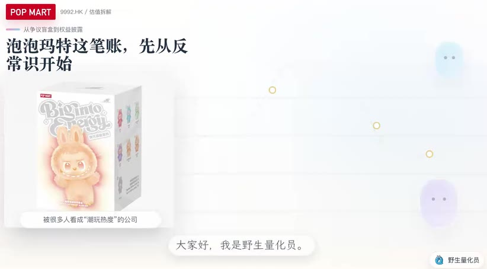
[00:03] POPMART / 9992.HK/估值拆解 / 从争议盲盒到权益披露 / 泡泡玛特这笔账，先从反 / 常识开始 / 智商税？ / 被很多人看成“潮玩热度”的公司 / 一家被很多人骂“智商税”的盲盒公司， / 野生量化员
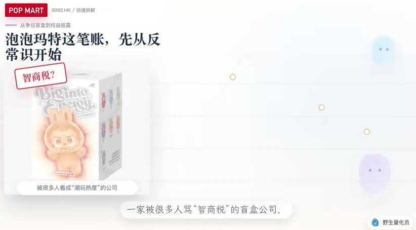
[00:06] POPMART / 9992.HK/估值拆解 / 从争议盲盒到权益披露 / 泡泡玛特这笔账，先从反 / 手内利润 / 常识开始 / 130亿 / 智商税？ / 争议之外，先看赚钱能力 / (.850,454 / 515272 / 1f8,866 / 212.105 / 被很多人看成“潮玩热度”的公司 / 二零二五年赚了一百三十亿。更有意思的是， / 野生量化员
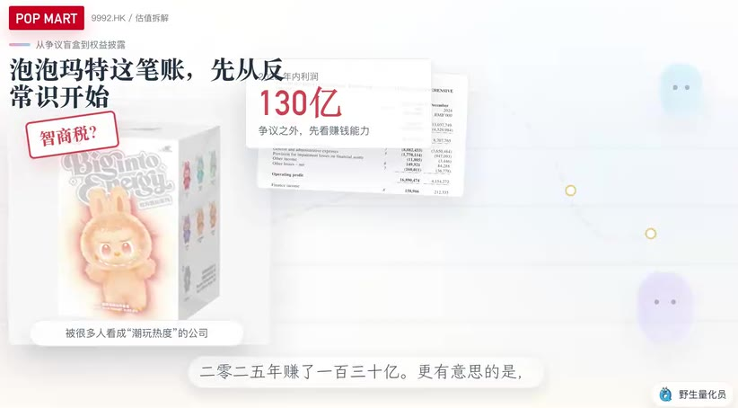
[00:09] POPMART / 9992.HK/估值拆解 / 从争议盲盒到权益披露 / 泡泡玛特这笔账，先从反 / 手内利润 / 长期投资者的底线 / 常识开始 / 130亿 / 不懂不碰 / 这次却进入泡泡玛特披露名单 / 智商税？ / 争议之外，先看赚钱能力 / 38002 / 06d0,464 / HT90 / 1f8,666 / 212.105 / 被很多人看成“潮玩热度”的公司 / 一个一辈子强调“不懂不碰”的价值投资者， / 野生量化员
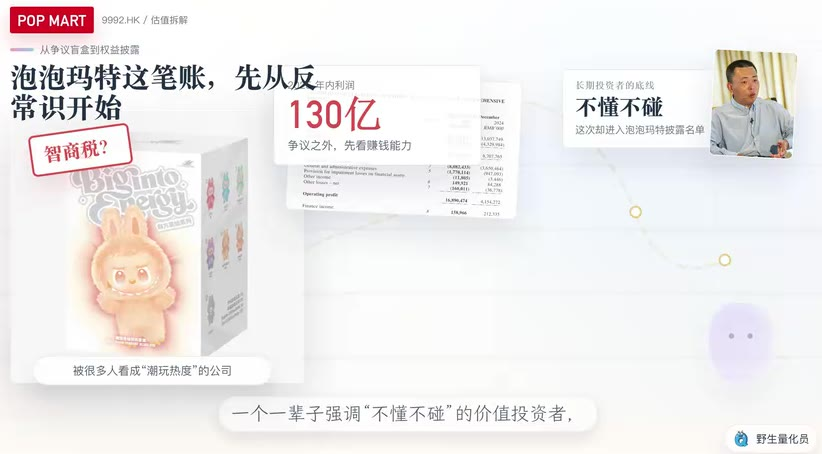
[00:12] POPMART / 9992.HK/估值拆解 / 从争议盲盒到权益披露 / 泡泡玛特这笔账，先从反 / 手内利润 / 长期投资者的底线 / 常识开始 / 130亿 / 不懂不碰 / 这次却进入泡泡玛特披露名单 / 智商税？ / 争议之外，先看赚钱能力 / 38002 / ATIN / OASLAH) / 港股权益披露 / 被很多人看成“潮玩热度”的公司 / 最近出现在泡泡玛特的港股权益披露里： / 野生量化员
[00:15] POPMART / 9992.HK/估值拆解 / 从争议盲盒到权益披露 / 泡泡玛特这笔账，先从反 / 手内利润 / 长期投资者的底线 / 常识开始 / 130亿 / 不懂不碰 / 这次却进入泡泡玛特披露名单 / 智商税？ / 争议之外，先看赚钱能力 / UUOENR / 港股权益披露 / 9992.HK / 披露日期 / 2026.05.25 / 触发线 / 5%+ / 5%披露线 / 被很多人看成“潮玩热度”的公司 / 段永平触发了百分之五以上的披露线， / 野生量化员
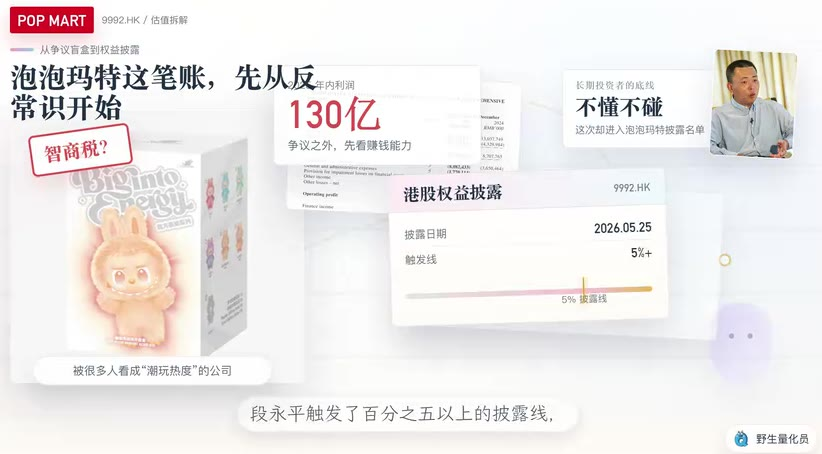
[00:18] POPMART / 9992.HK/估值拆解 / 从争议盲盒到权益披露 / 泡泡玛特这笔账，先从反 / 手内利润 / 长期投资者的底线 / 常识开始 / 130亿 / 不懂不碰 / 这次却进入泡泡玛特披露名单 / 智商税？ / 争议之外，先看赚钱能力 / 港股权益披露 / 9992.HK / 披露日期 / 2026.05.25 / 触发线 / 5.69% / 披露后仓位 / 5%拔露线 / 权益占比 / 被很多人看成“潮玩热度”的公司 / 披露后的看多仓位，占到百分之五点六九。 / 野生量化员
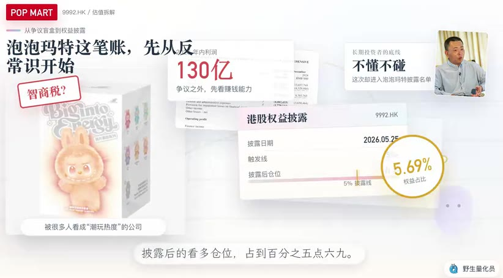
[00:21] POPMART / 9992.HK/估值拆解 / 从争议盲盒到权益披露 / 泡泡玛特这笔账，先从反 / 年内利润 / 长期投资者的底线 / 常识开始 / 130亿 / 不懂不碰 / 这次却进入泡泡玛特披露名单 / 智商税？ / 争议之外，先看赚钱能力 / 港股权益披露 / 9992.HK / 披露日期 / 2026.05.25 / 触发线 / 5.69% / 披露后仓位 / 5%拔露线 / 权益占比 / 所以问题来了 / 被很多人看成“潮玩热度”的公司 / 他是在买娃娃？还是全球化IP印钞机？ / 所以问题来了：他到底是在买娃娃 / 野生量化员
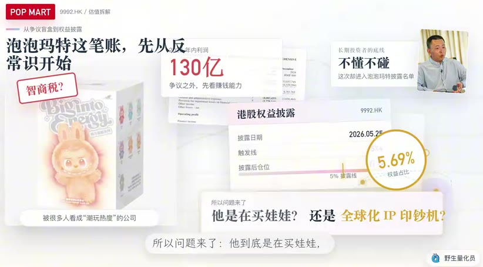
[00:24] POPMART / 9992.HK/估值拆解 / 从争议盲盒到权益披露 / 泡泡玛特这笔账，先从反 / 年内利润 / 长期投资者的底线 / 常识开始 / 130亿 / 不懂不碰 / 这次却进入泡泡玛特披露名单 / 智商税？ / 争议之外，先看赚钱能力 / 港股权益披露 / 披露日期 / 2026.05.25 / 触发线 / 5.69% / 披露后仓位 / 5%按露线 / 权益占比 / 所以问题来了 / 被很多人看成“潮玩热度”的公司 / 他是在买娃娃？还是全球化IP印钞机？ / 还是在买一台全球化的IP印钞机？ / 野生量化员
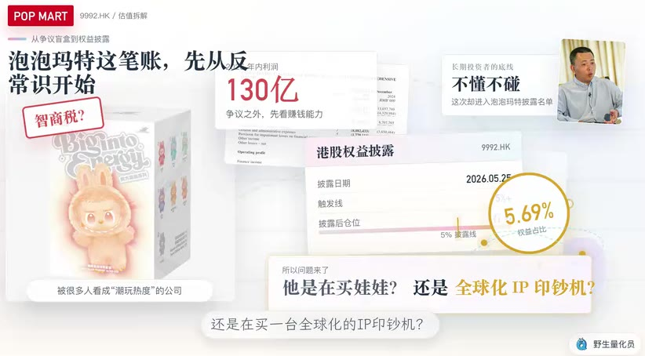
[00:27] POPMART / 9992.HK/观察仓复盘 / B站动态截图 / 价值框架撞上潮玩争议 / 为什么买一家被骂 / “智商 / 1.7万 / 1114 / 1.4万 / 关注 / 税”白 / 的盲盒公司？ / 编辑资料 / 野生量化员 / 年席大吉员 / 起点 / LU51859/ / 价值投资 / 职业资质：基金公司金融理财师 / 详情 / 找我官方合作资产配置·化交易更多服务 / IP属：湖北加学校 / 充电问答 / 6条提间 / 主页 / 动态 / 投稿 / 收藏 / 追番 / 野生量化员 / 昨天15:03 / 小米和泡泡玛特开始建仓了 / 这里叠一个甲，建仓，更多的是为了做到知行合 / 一，去验证自己的投资逻辑是否正确，小伙伴们不 / 一个标准的价值投资者，为什么会买一家， / 野生量化员
[00:30] POPMART / 9992.HK/观察仓复盘 / B站动态截图 / 价值框架撞上潮玩争议 / 为什么买一家被骂 / “智商 / 1.7万 / 1114 / 1.4万 / 关注 / 获量 / 税”白 / 的盲盒公司？ / 编辑资料 / 野生量化员年座大 / 起点 / LUE51859/ / 价值投资 / 职业资质：基金公司金融理财师 / 详情 / 市场标签 / 找我官方合作资产配置量化交易更多服务 / 智商税？ / P属地：北加学校息 / 充电同答 / 6条提网 / 主页 / 格骨 / 投稿 / 收藏 / 追番 / 野生量化员 / 昨天15:03 / 小米和泡泡玛特开始建仓了 / 这里叠一个甲，建仓，更多的是为了做到知行合 / 一，去验证自己的投资逻辑是否正确，小伙伴们不 / 被很多人骂“智商税”的盲盒公司？ / 银随哈 / 野生量化员
[00:33] POPMART / 9992.HK/观察仓复盘 / B站动态截图 / 价值框架撞上潮玩争议 / “智商 / 为什么买一家被骂 / 1.7万 / 1114 / 1.4万 / 关注 / 税”白 / 的盲盒公司？ / 编辑资料 / 野生量化员 / 年大合奖 / 起点 / 核心追间 / LUE51859/ / 价值投资 / 职业资质：基金公司金融理财师 / 详情 / 市场标签 / 找我官方合作资产配置·量化交是|更多服务 / 智商税？ / 中国地：港北（温加学校信 / 充电问答 / 6条理网 / 主页 / 动态 / 投稿 / 收藏 / 追番 / 野生量化员 / 昨天15:03 / 小米和泡泡玛特开始建仓了 / 这里叠一个甲，建仓，更多的是为了做到知行合 / 一，去验证自己的投资逻辑是否正确，小伙伴们不 / 他到底看到了什么？更关键的是， / 银随哈 / 野生量化员
[00:36] POPMART / 9992.HK/观察仓复盘 / B站动态截图 / 价值框架撞上潮玩争议 / “智商 / 为什么买一家被骂 / 1.7万 / 1114 / 1.4万 / 关注 / 获营 / 税”白 / 的盲盒公司？ / 编辑资料 / 野生量化员年属大含员 / LUE51859 / 起点 / 核心追间 / 价值投资 / 职业资质：基金公司金融理财师 / 详情 / 市场标签 / 找我官方合作资产配置+化交易|更多服务 / 智商税？ / 回IP属地：湛北 / （十加等值 / 充电问答 / 条提问 / 把公司从头到尾算完 / 主页 / 动态 / 投稿 / 收藏 / 追番 / 先过账 / 野生量化员 / 昨天15:03 / 小米和泡泡玛特开始建仓了 / 这里叠一个甲，建仓，更多的是为了做到知行合 / 一，去验证自己的投资逻辑是否正确，小伙伴们不 / 我也放了一笔小额的观察仓， / 目跟随哈 / 野生量化员
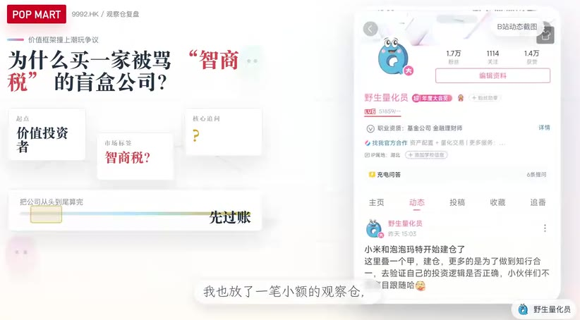
[00:39] POPMART / 9992.HK/观察仓复盘 / B站动态截图 / 价值框架撞上湖玩争议 / “智商 / 为什么买一家被骂 / 1.7万 / 1114 / 1.4万 / 关注 / 获赞 / 税” / 的盲盒公司？ / 编辑资料 / 野生量化员年康大合员 / 核心追间 / V园51859/ / 起点 / 价值投资 / 职业资质：基金公司金融理财师 / 详情 / 市场标签 / 找我官方合作资产配置·量化交易1更多服务 / 智商税？ / @P属地：湖北（+适加学校信 / 不是结论，是样本 / 充电问答 / 6条提网 / 小额观察仓 / 把公司从头到尾算完 / 主页 / 动态 / 投稿 / 收藏 / 追番 / 先过账 / 野生量化员 / 昨天15:03 / 小米和泡泡玛特开始建仓了 / 这里叠一个甲，建仓，更多的是为了做到知行合 / 一，去验证自己的投资逻辑是否正确，小伙伴们不 / 用来长期跟踪这套估值逻辑。但我要先说清楚： / 野生量化员
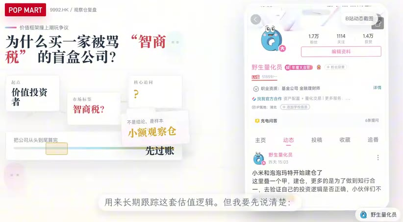
[00:42] POPMART / 9992.HK/观察仓复盘 / B站动态截图 / 价值框架撞上湖玩争议 / 为什么买一家被骂 / “智商 / 1.7万 / 1114 / 1.4万 / 关注 / 税” / 的盲盒公司？ / 编辑资料 / 野生量化员年座大容 / LVB51859 / 起点 / 核心追间 / 价值投资 / 职业资质：基金公司金融理财师 / 详情 / 市场标签 / 找我官方合作资产配置，量化交基|更多服务 / 智商税？ / @P属地：湖（+加学饮信 / 不是结论，是样本 / 充电问答 / 6条提向 / 小额观察仓 / 把公司从头到尾算完 / 主页 / 投稿 / 收藏 / 追番 / 先过账 / 野生量化员 / 作天15:03 / 小米和泡泡玛特开始建仓了 / 这里叠一个甲，建仓，更多的是为了做到知行合 / 一，去验证自己的投资逻辑是否正确，小伙伴们不 / 我跟踪的也不是“拉布布还能不能一直火”。当然， / 野生量化员
[00:45] POPMART / 9992.HK/观察仓复盘 / B站动态截图 / 价值框架撞上潮玩争议 / 为什么买一家被骂 / “智商 / 1.7万 / 1114 / 1.4万 / 粉丝 / 关注 / 获赞 / 税” / 的盲盒公司？ / 野生量化员年大会员 / LU51859/ / 起点 / 核心追间 / 价值投资 / 职业资质：基金公司金融理财师 / 详情 / n. / 市场标签 / 找我官方合作资产配置·量化交易更多服务 / 智商税？ / @P属：周北（+源加学校信 / 不是结论，是样本 / 充电问答 / 条提问 / 小额观察仓 / 把公司从头到尾算完 / 主页 / 投稿 / 收藏 / 追番 / 先过账 / 野生量化员 / 昨天15:03 / 不是押 / 小米和泡泡玛特开始建仓了 / 非投资建议 / 这里叠一个甲，建仓，更多的是为了做到知行合 / 单一IP / 一，去验证自己的投资逻辑是否正确，小伙伴们不 / 我跟踪的也不是“拉布布还能不能一直火”。当然， / 野生量化员
[00:48] POPMART / 9992.HK/观察仓复盘 / B站动态截图 / 价值框架撞上潮玩争议 / 为什么买一家被骂 / “智商 / 1.7万 / 1114 / 1.4万 / 份址 / 关注 / 税” / 的盲盒公司？ / 编辑资料 / 野生量化员年座大 / LUB51659/ / 起点 / 核心追间 / 价值投资 / 职业资质：基金公司金融理财师 / 详情 / n. / 市场标签 / 找我官方合作资产配置+量化交易|更多服务 / 智商税？ / IP属地：湖 / （十添加学校信 / 不是结论，是样本 / 充电问答 / 6条提间 / 小额观察仓 / 把公司从头到尾算完 / 主页 / 动态 / 投稿 / 收藏 / 追番 / 先过账 / 野生量化员 / 昨天15:03 / 不是押 / 小米和泡泡玛特开始建仓了 / 非投资建议 / 这里叠一个甲，建仓，更多的是为了做到知行合 / 单一IP / 一，去验证自己的投资逻辑是否正确，小伙伴们不 / 后续我会在B站的动态里，去复盘这套估值逻辑， / 野生量化员
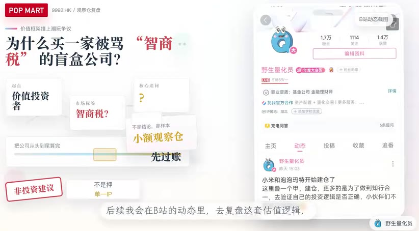
[00:51] POPMART / 9992.HK/观察仓复盘 / B站动态截图 / 价值框架撞上潮玩争议 / “智商 / 为什么买一家被骂 / 1.7万 / 1114 / 1.4万 / 关注 / 税” / 的盲盒公司？ / 编辑资料 / 野生量化员年属大 / +粉性拍 / LUG51859/ / 起点 / 核心追间 / 价值投资 / 职业资质：基金公司金融理财师 / 详情 / n. / 市场标签 / 我我官方合作资产配置+量化交品|更多服务 / 智商税？ / P属地：北（十添加学校） / 不是结论，是样本 / 充电网售 / 小额观察仓 / 把公司从头到尾算完 / 投稿 / 收藏 / 追番 / 先过账 / 后续动态复盘 / 舒生量化员 / 不是押 / 小米和泡泡玛特开始建仓了 / 非投资建议 / 单一IP / 这里叠一个甲，建仓，更多的是为了做到知行合 / 一，去验证自己的投资逻辑是否正确，小伙伴们不 / 而是看今天这些估值理论， / 盲目跟随哈 / 野生量化员
[00:54] POPMART / 9992.HK/观察仓复盘 / B站动态截图 / 价值框架撞上湖玩争议 / 为什么买一家被骂 / “智商 / 1.7万 / 1114 / 1.4万 / 粉丝 / 关注 / 税” / 的盲盒公司？ / 编辑资料 / 野生量化员年度大吉员 / +助 / LU51859/ / 起点 / 核心追间 / 价值投资 / 职业资质：基金公司金融理财师 / 详情 / n, / 市场标签 / 找我官方合作资产配置+量化交易|更多服务 / 智商税？ / IP地：湖北十添加学校信息 / 不是结论，是样本 / 充电河管 / 小额观察仓 / 把公司从头到尾算完 / 动态 / 投稿 / 收藏 / 追番 / 先过账 / 后续动态复盘 / 野生量化员 / 不是押 / 小米和泡泡玛特开始建仓了 / 非投资建议 / 单一IP / 这里叠一个甲，建仓，更多的是为了做到知行合 / 一，去验证自己的投资逻辑是否正确，小伙伴们不 / 到底能不能经受得起时间的考验。感兴趣的， / 动态复盘 / 不看赚亏 / 时间检验 / 野生量化员
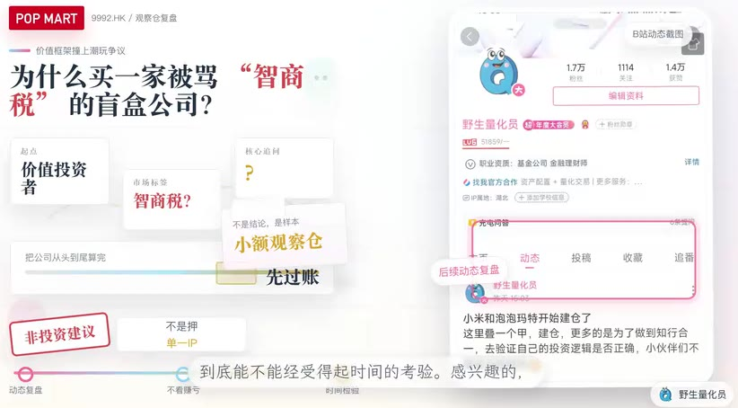
[00:57] POPMART / 9992.HK/估值分析系列 / 这一期继续估值分析系列 / 把泡泡玛特拆成三个问题 / 长与估销 / 段永平为什么会看上 / 财报高增长，为什么 / 阶段性爆款，还是全 / 泡泡玛特 / 不给高估值？ / 球化IP平台？ / PE? / 这一期，继续我们的估值分析系列。 / 野生量化员
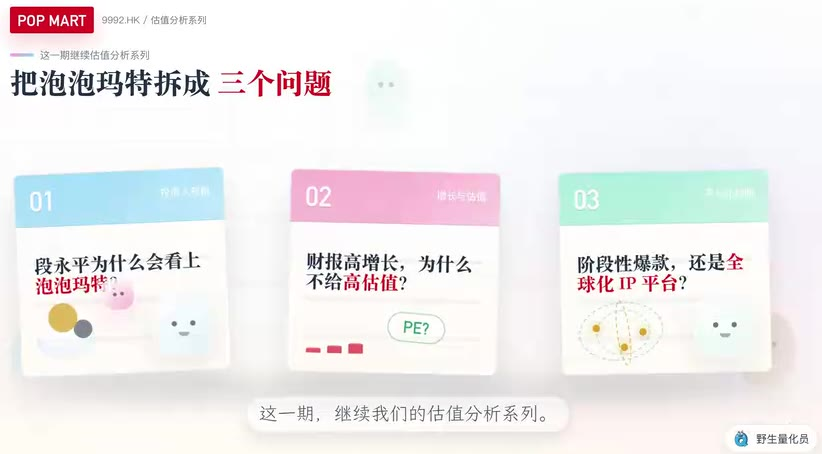
[01:00] POPMART / 9992.HK/估值分析系列 / 这一期继续估值分析系列 / 把泡泡玛特拆成三个问题 / 个核心观点 / 举长与估值 / 段永平为什么会看上 / 财报高增长，为什么 / 阶段性爆款，还是全 / 泡泡玛特 / 不给高估值？ / 球化IP平台？ / PE? / 主要想分享三个观点：第一 / 野生量化员
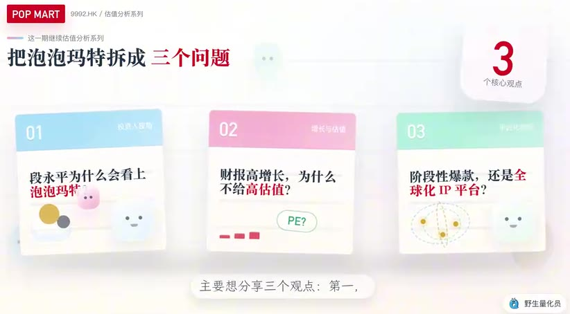
[01:03] POPMART / 9992.HK/估值分析系列 / 这一期继续估值分析系列 / 把泡泡玛特拆成三个问题 / 个核心观点 / 段永平为什么会看上 / 曾长，为什么 / 阶段性爆款，还是全 / 泡泡玛特？ / 不给高估值？ / 球化IP平台？ / 先看 / 个“不懂不碰”的投资者，为什 / 么愿意研突潮玩生意。 / PE? / 段永平为什么会看上泡泡玛特？第二 / 野生量化员
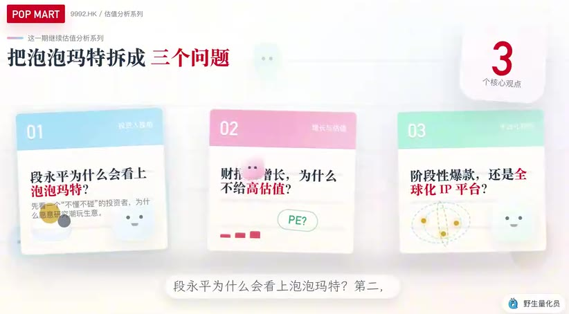
[01:06] POPMART / 9992.HK/估值分析系列 / 这一期继续估值分析系列 / 把泡泡玛特拆成三个问题 / 个核心观点 / 段永平为什么会看上 / 财报高增， / 为什么 / 阶段性爆款，还是全 / 泡泡玛特？ / 不给高估值？ / 球化IP平台？ / 先看 / 个“不懂不碰”的投资者，为什 / 增长是真的 / 但市场开始追问增长确 / 么恩意研究潮玩生意。 / 定性和价 / PE? / 财报上明明能看到高增长，但市场不愿意给他高估值？ / 野生量化员
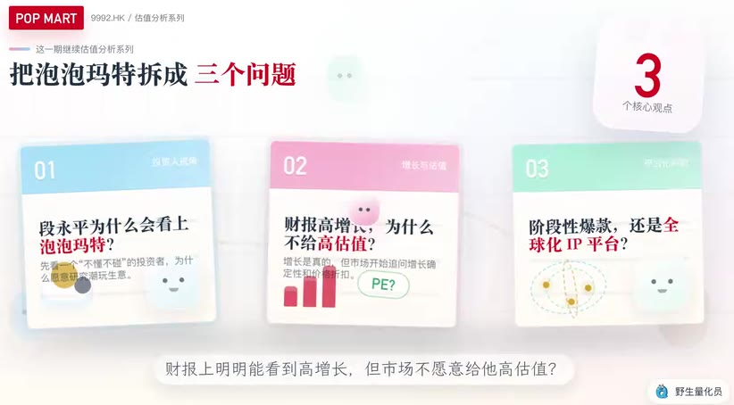
[01:09] POPMART / 9992.HK/估值分析系列 / 这一期继续估值分析系列 / 把泡泡玛特拆成三个问题 / 个核心观点 / 增长与估情 / 段永平为什么会看上 / 财报高增， / 为什么 / 阶段性爆款，还是全 / 泡泡玛特？ / 不给高估值？ / 球化IP平台？ / 先看 / “不懂不碰”的投资者，为什 / 增长是真的 / 但市场开始追问增长确 / 愿意研究潮玩生意。 / 定性和价 / PE? / 财报上明明能看到高增长，但市场不愿意给他高估值？ / 野生量化员
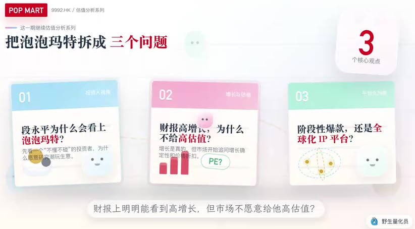
[01:12] POPMART / 9992.HK/估值分析系列 / 这一期继续估值分析系列 / 把泡泡玛特拆成三个问题 / 个核心观点 / 地长专估道 / 段永平为什么会看上 / 财报高增长，为什么 / 阶段性爆款，还是全 / 泡泡玛特？ / 不给高估值？ / 球··平台？ / 先看 / 个“不懂不碰”的投资者，为什 / 增长是真的 / 但市场开始追问增长确 / 关键不是某一个娃娃热不热，而是能 / 意研突湖玩生意。 / 定性和价 / PE? / 否持续制造、经营和变现角色。 / 第三，泡泡玛特到底是一个阶段性爆款， / 野生量化员
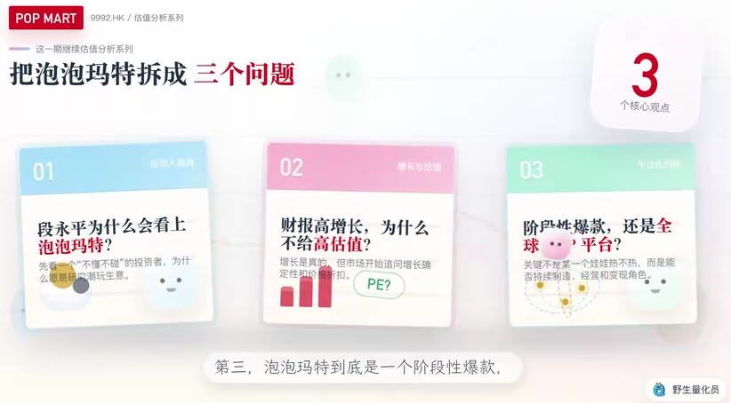
[01:15] POPMART / 9992.HK/估值分析系列 / 这一期继续估值分析系列 / 把泡泡玛特拆成三个问题 / 个核心观点 / 增长与估值 / 段永平为什么会看上 / 财报高增长，为什么 / 阶段性爆款，还是全 / 泡泡玛特？ / 不给高估值？ / 球化IP平。 / 个“不懂不碰”的投资者，为什 / 增长是真的、但市场开始追问增长确 / 关键不是某一个义 / 不热，而是能 / 聪意研 / 突潮玩生意。 / 定性和价 / 扣。 / PE? / 否持续制造、经营和变现角色。 / 还是一个正在成型的，全球化IP消费平台？ / 野生量化员
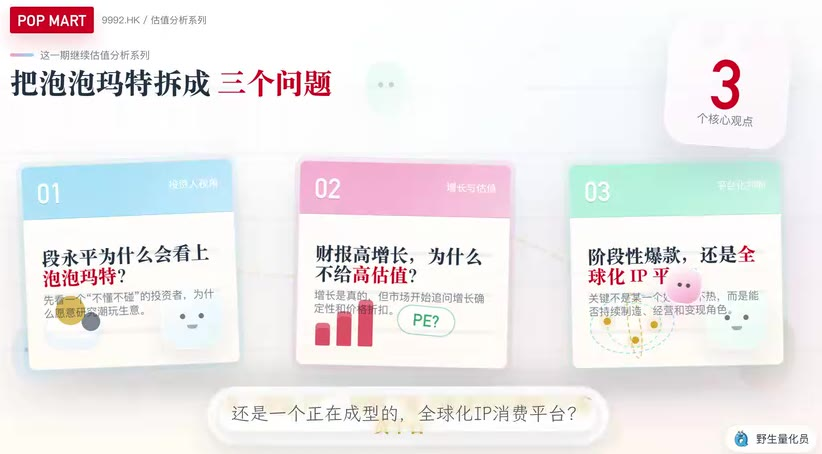
[01:18] POPMART / 估值研究入口 / POPMART估值研究/PAGE04 / 先把偏见贴到桌面上 / 公司档案/9992.HK / 泡泡玛特 / 原本会被放进“先不碰”的抽屉 / 默认排除 / 从潮玩盒子，回到公司案卷 / 好，咱们先说回泡泡玛特这家公司。说实话， / 野生量化员
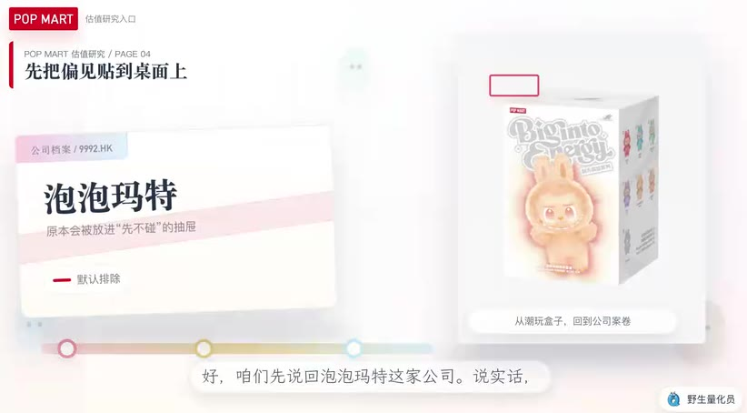
[01:21] POPMART / 估值研究入口 / POPMART估值研究/PAGE04 / 先把偏见贴到桌面上 / 公司档案/9992.HK / 段永平买入 / 泡泡玛特 / 原本会被放进“先不碰”的抽屉 / 默认排除 / 从潮玩盒子，回到公司案卷 / 如果不是段永平这次买进去， / 野生量化员
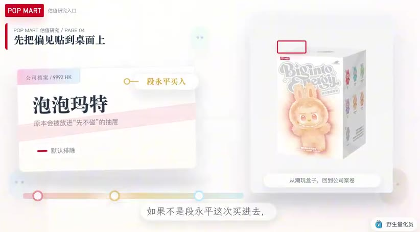
[01:24] POPMART / 估值研究入口 / POPMART估值研究/PAGE04 / 先把偏见贴到桌面上 / 公司档案/9992.HK / 段永平买入 / 看不懂 / 太贵 / 原本会被放进“先不碰”的抽屉 / 默认排除 / 从潮玩盒子，回到公司案卷 / 我大概率也会把它归到那种“看不懂、太贵、 / 野生量化员
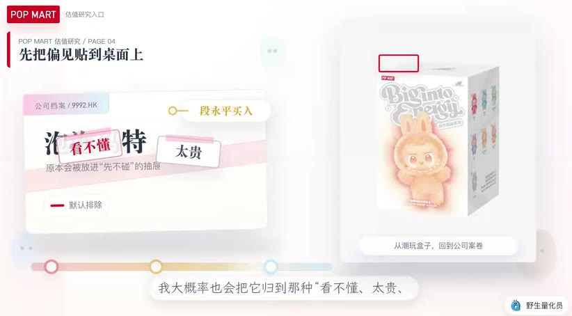
[01:27] POPMART / 爱观者视角 / 估值研究/PAGE05 / 以前真没怎么关心过这些 / 潮玩 / 作为一个中年老登， / 野生量化员
[01:30] 旁观者视角 / POPMART / 估值研究/PAGE05 / 以前真没怎么关心过这些 / 潮玩 / 我以前是真没怎么关心过这些潮玩。 / 野生量化员
[01:33] POPMART / 估值研究/PAGE05 / 身边朋友在买 / 以前真没怎么关心过这些 / 潮玩 / 抽盲盒上头 / 尽管身边有很多朋友在买，抽盲盒抽得上头， / 野生量化员
[01:36] POPMART / 估值研究/PAGE05 / 身边朋友在买 / 以前真没怎么关心过这些 / 潮玩 / 摆满小娃娃 / 抽盲盒上头 / 家里摆满了各种小娃娃。可我的第一直觉 / 野生量化员
[01:39] POPMART / 估值研究/PAGE05 / 身边朋友在买 / 以前真 / 潮玩 / 第一直觉冒出来 / 这不就是 / 炒作吗？ / 盲盒抽奖 / 摆满小娃娃 / 抽盲盒上头 / 可能跟很多人一样：这不就是炒作吗？盲盒抽奖、 / 野生量化员
[01:42] POPMART / 估值研究/PAGE05 / 身边朋友在买 / 以前真 / 潮玩 / 第一直觉冒出来 / 这不就是 / 炒作吗？ / 盲盒抽奖 / 饥饿营销 / 稀缺性溢价 / 摆满小娃娃 / 抽盲盒上头 / 饥饿营销、赌一个稀缺性溢价，说难听点， / 野生量化员
[01:45] POPMART / 估值研究/PAGE05 / 身边朋友在买 / 以前真没 / 潮玩 / 第一直觉冒出来 / 这不就是 / 炒作吗？ / 盲盒抽奖 / 饥饿营销 / 稀缺性溢价 / 智商税味道 / 摆满小娃娃 / 研究导火索 / 段永平的这波操作 / 抽盲盒上头 / 有点智商税的味道。那我为什么突然回头 / 野生量化员
[01:48] POPMART / 估值研究/PAGE05 / 身边朋友在买 / 以前具 / 潮玩 / 第一直觉冒出来 / 这不就是 / 炒作吗？ / 盲盒抽奖 / 饥饿营销 / 稀缺性溢价 / 智商税味道 / 摆满小娃娃 / 研究导火索 / 段永平的这波操作 / 抽盲盒上头 / 对它提起了兴趣呢？导火索， / 野生量化员
[01:51] POPMART / 估值研究/PAGE05 / 身边朋友在买 / 以前具 / 潮玩 / 第一直觉冒出来 / 这不就是 / 炒作吗？ / 盲盒抽奖 / 饥饿营销 / 稀缺性溢价 / 智商税味道 / 摆满小娃娃 / 研究导火索 / 段永平的这波操作 / 抽盲盒上头 / 就是开头讲的那一幕--段永平的这波操作。 / 野生量化员
[01:54] POPMART / 估值研究/PAGE05 / 身边朋友在买 / 以前真 / 怎必美 / 潮玩 / 第一直觉冒出来 / 这不就是 / 炒作吗？ / 盲盒抽奖 / 饥饿营销 / 稀缺性溢价 / 智商税味道 / 摆满小娃娃 / 研究导火索 / 段永平的这波操作 / 抽盲盒上头 / 盒子 / IP生意 / 只卖盲盒，很难 / 角色、情绪价值、全球化表达 / 吸引目光 / 那这家公司确实很难吸引我的目光。 / 野生量化员
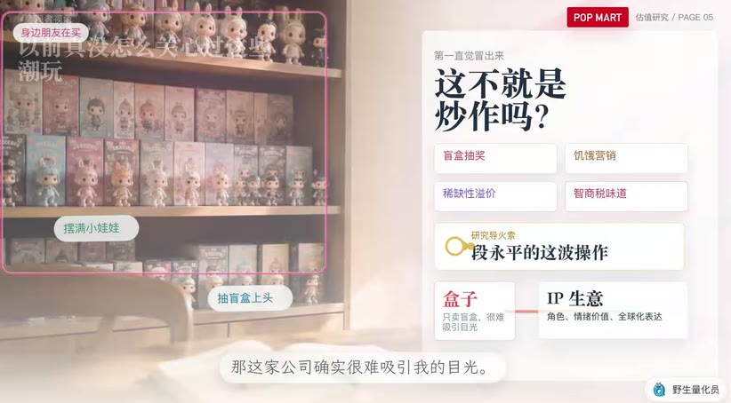
[01:57] POPMART / 估值研究/PAGE05 / 身边朋友在买 / 以前真 / 潮玩 / 第一直觉冒出来 / 这不就是 / 炒作吗？ / 盲盒抽奖 / 饥饿营销 / 稀缺性溢价 / 智商税味道 / 摆满小娃娃 / 研究导火索 / 段永平的这波操作 / 从偏见转向研究 / 卖的不是盒子，而是角色、情绪价 / 盒子 / IP生意 / 值和全球化IP / 只卖盲盒，很难 / 角色、情绪价值、全球化表达 / 吸引目光 / 但如果它卖的不是盒子，而是角色、 / 情绪价值 / 野生量化员
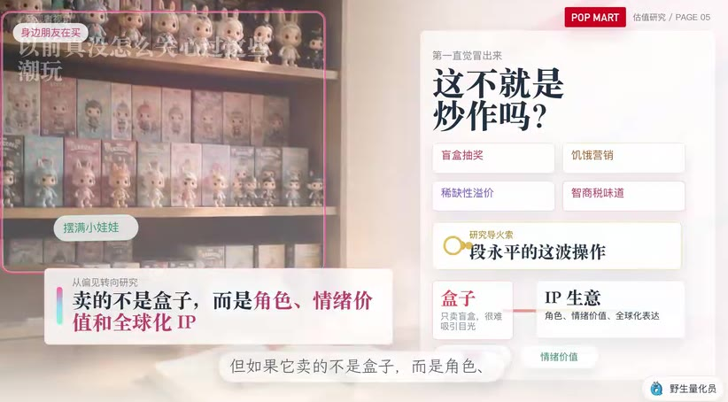
[02:00] POPMART / 估值研究/PAGE05 / 身边朋友在买 / 快有必美心过 / 以前真疫 / 潮玩 / 第一直觉冒出来 / 这不就是 / 炒作吗？ / 盲盒抽奖 / 饥饿营销 / 稀缺性溢价 / 智商税味道 / 摆满小娃娃 / 研究导火索 / 段永平的这波操作 / 从偏见转向研究 / 卖的不是盒子，而是角色、情绪价 / 盒子 / IP生意 / 值和全球化IP / 只卖盲盒，很难 / 角色、情绪价值、全球化表达 / 吸引目光 / 情绪价值和全球化IP，那这门生意就完全不一样了。 / 价值 / 全球化IP / 野生量化员
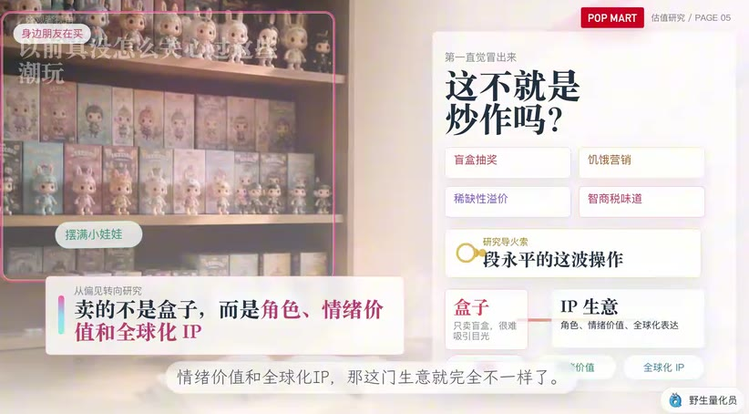
[02:03] POPMART估值研究/PAGE06 / 不是追风口的人 / 段永平 / 不懂不碰 / 这里给还不熟段永平的朋友，简单介绍一下他。 / 野生量化员
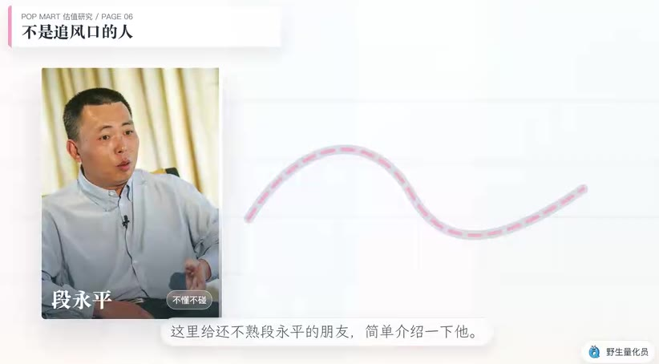
[02:06] POPMART估值研究/PAGE06 / 不是追风口的人 / 不追风口 / 不炒热点 / 段永平 / 不懂不碰 / 他不是那种追风口、炒热点的人。 / 野生量化员
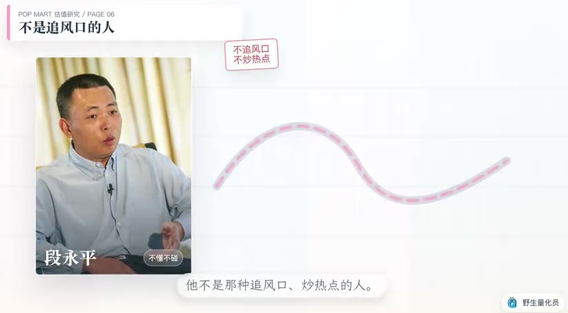
[02:09] POPMART估值研究/PAGE06 / 不是追风口的人 / 不追风口 / 不炒热点 / OPPO/vivo / 产业影子 / 步步高 / 做出来的 / 段永平 / 不懂不碰 / 步步高是他做出来的，OPPO、 / 野生量化员
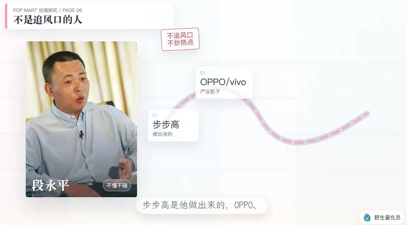
[02:12] POPMART估值研究/PAGE06 / 不是追风口的人 / 不追风口 / 不炒热点 / OPPO/vivo / 产业影子 / 步步高 / 网易 / 做出来的 / 退到投资里 / 段永平 / 不懂不碰 / vivo背后也有他的影子，后来去做投资， / 野生量化员
[02:15] POPMART估值研究/PAGE06 / 不是追风口的人 / 不追风口 / 不炒热点 / OPPO/vivo / 苹果 / 产业影子 / 一拿很多年 / 步步高 / 网易 / 做出来的 / 退到投资里 / 段永平 / 不懂不碰 / 靠长期持有网易、苹果等股票，斩获数十倍的回报， / 野生量化员
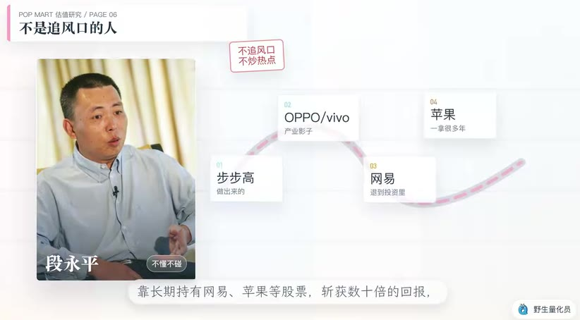
[02:18] POPMART估值研究/PAGE06 / 不是追风口的人 / 不追风口 / 不炒热点 / OPPO/vivo / 苹果 / 产业影子 / 一拿很多年 / 步步高 / 网易 / 做出来的 / 退到投资里 / 段永平 / 投资风格锁定 / 看得懂/长 / 不懂不碰 / 投资风格很接近巴菲特那套 / 只买看得懂、 / 野生量化员
[02:21] POPMART估值研究/PAGE07 / “不懂不碰”的人，偏向潮玩柜台 / 不只是“大佬买了” / THEMONSTERS/LABUBU / 偏转终点 / 潮玩柜台 / 常识路径 / 熟悉生意 / 价值投资者 / 不懂不碰 / POPMART柜台 / 潮玩盲盒股 / 所以真正有意思的，不只是“大佬买了” / 野生量化员
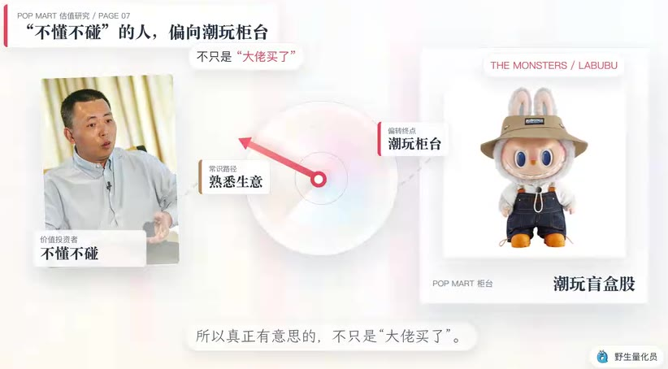
[02:24] POPMART估值研究/PAGE07 / “不懂不碰”的人，偏向潮玩柜台 / 不只是“大佬买了” / THEMONSTERS/LABUBU / 偏转终点 / 潮玩柜台 / 常识路径 / 熟悉生意 / 价值投资者 / 不懂不碰 / POPMART柜台 / 潮玩盲盒股 / 而是这样一个人，今年都六十五岁了， / 野生量化员
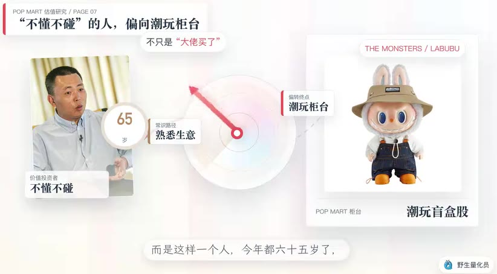
[02:27] POPMART估值研究/PAGE07 / “不懂不碰”的人，偏向潮玩柜台 / 不只是“大佬买了” / THEMONSTERS/LABUBU / 偏转终点 / 潮玩柜台 / 常识路径 / 熟悉生意 / 按常识最不像会 / 重仓 / 价值投资者 / 不懂不碰 / POPMART柜台 / 潮玩盲盒股 / “潮玩盲盒股”--你说是不是有些反差？准确地说， / 野生量化员
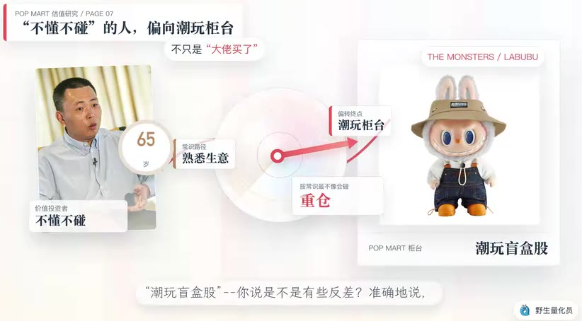
[02:30] POPMART估值研究/PAGE07 / “不懂不碰”的人，偏向潮玩柜台 / 不只是“大佬买了” / THEMONSTERS/LABUBU / 偏转终点 / 潮玩柜台 / 常识路径 / 熟悉生意 / 按常识最不像会碰 / 重仓 / 价值投资者 / 不懂不碰 / 不是反差，是反常 / POPMART柜台 / 潮玩盲盒股 / 不是反差，是反常。 / 野生量化员
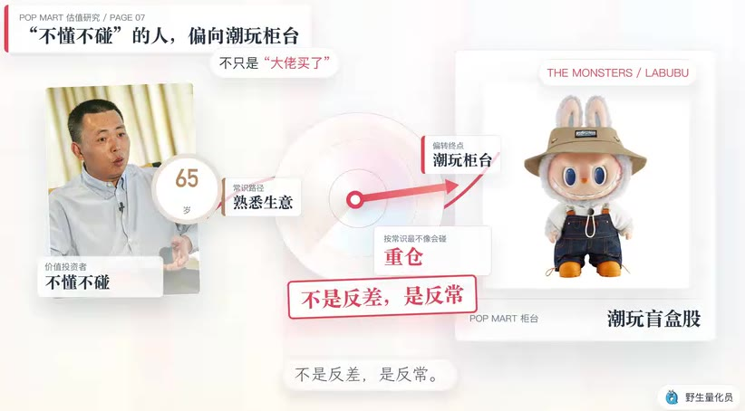
[02:33] POPMART / 估值研究/PAGE08 / 段永平的投资逻辑 / 三个问题，决定泡泡玛特值不值得 / 认真拆 / 生意 / 好生意 / 段永平的投资逻辑是啥，可以概括为：好生意、 / 野生量化员
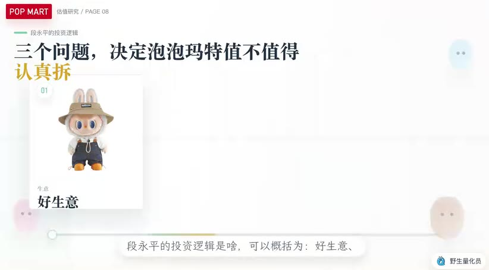
[02:36] POPMART / 估值研究/PAGE08 / 段永平的投资逻辑 / 三个问题，决定泡泡玛特值不值得 / 认真拆 / 生意 / 价格 / 好生意 / 对的人 / 好价格 / 对的人、好价格。我们一项项来拆。 / 野生量化员
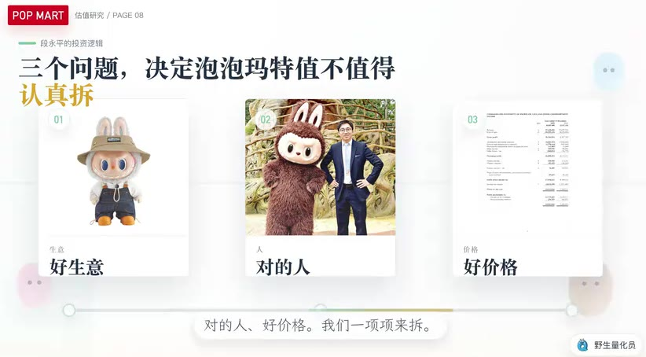
[02:39] POPMART / 估值研究/PAGE09 / 先说好生意 / 财务业绩摘要 / 别只看“卖娃娃”，先看 / 2025财报 / 不只是卖娃娃 / 先说好生意。你可能会说，这不就是卖娃娃吗？ / 野生量化员
[02:42] POPMART / 估值研究/PAGE09 / 先说好生意 / FINANCIAL SUMMARY / 财务业绩摘要 / 别只看“卖娃娃”，先看 / 财務概要 / 2025财报 / FINANCIAL PERFORMANCE HIGHLIGHTS / fer Be yea / nded J1Decm / 2021年 / XJ19 / 不只是卖娃娃 / Gre irit / T.12UAS2 / 3H.82 / LR)AST / 16/7421 / 1694341 / LIK8ST / 1L800474 / 4154.271 / 12K0 / 8U9) / 17494A22 / (4117) / UHURI / RA3K / 13012042 / 1,108, HT / nW/ / 12,775,681 / 108734 / 13.061,646 / 72.1% / XUH2 / 1790,515 / 35.1% / 17.35 / 13( / 35.2% / 那咱们来看一看它的财报。二零二五年的财报： / 野生量化员
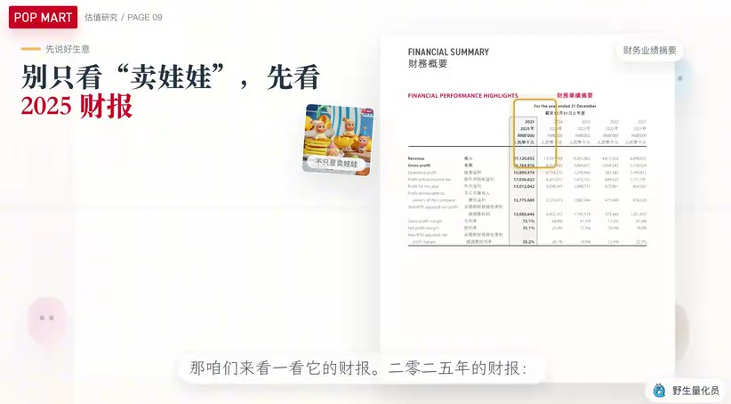
[02:45] POPMART / 估值研究/PAGE09 / 先说好生意 / FINANCIALSUMMARY / 财务业绩摘要 / 别只看“卖娃娃”，先看 / 财務概要 / 2025财报 / FINANCIAL PERFORMANCE HIGHLIGHTS / fert y+ / 8止年 / nded 31 DHe / 2025年 / 221% / rooe / RS000 / RM/00) / Revenue/收入 / 娃娃 / Cnen prlt / 425495 / 7,A2UA52 / 1301062 / [A(1 / +Crci / 2654341 / 6.49063) / 371.2亿 / 14890,474 / 4154771 / 1.236.546 / 27S8K4 / HU17 / 13,012,042 / L30LHI / 2,775,681 / 0125,472 / S8234 / (75,66) / fU09 / 1L083.646 / 72.1% / 1A0,51 / U,90519 / 4.14 / 17134) / 35.15 / JLIs / 17.35 / 40 3ts / 35.2% / 51.% / 72. / 收入三百七十一点二亿人民币， / 野生量化员
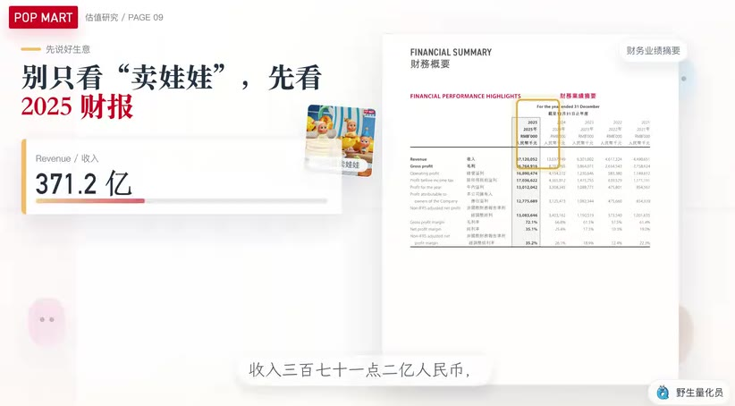
[02:48] POPMART / 估值研究/PAGE09 / 先说好生意 / FINANCIALSUMMARY / 财务业绩摘要 / 别只看“卖娃娃”，先看 / 财務概要 / 2025财报 / FINANCIAL PERFORMANCE HIGHLIGHTS / fert y+ / 8止年 / nded 31 De / 2025年 / RS000 / 221% / RM/00) / Revenue/收入 / +184.7% / 娃娃 / Grnes prft / 425495 / 7,A2UA52 / 1301062 / [A(1 / +Crci / 2654341 / 6.49063) / 371.2亿 / 14890,474 / 4154771 / 1.236546 / 27S8K4 / HU17 / 13,012,042 / L30LHI / 2,775,681 / 0125,472 / 1982344 / (75,66) / fU09 / 1L083.646 / 72.1% / 1A0,51 / U,90519 / 4.14 / 17134) / 35.15 / JLIs / 17.35 / 40 3ts / 50%, / 35.2% / 51.% / 72. / 同比增长百分之一百八十四点七： / 野生量化员
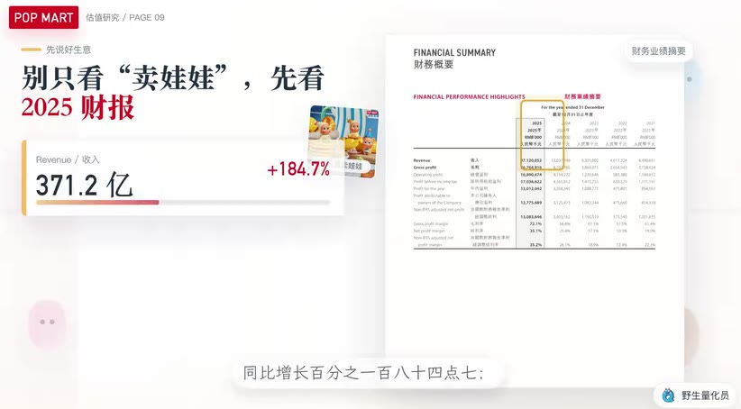
[02:51] POPMART / 估值研究/PAGE09 / 先说好生意 / FINANCIAL SUMMARY / 财务业绩摘要 / 别只看“卖娃娃”，先看 / 财務概要 / 2025财报 / FINANCIAL PERFORMANCE HIGHLIGHTS / ferthe e / 8止号 / 225# / 2219 / 20219 / 209F / RS8'000 / RME200 / iseooo / 手元 / Revenue/收入 / +184.7% / 娃娃 / Greu prott / 425499 / 7,120052 / 1.301.062 / [A1 / 4417.324 / 265434) / 11(6851 / 371.2亿 / I4L890,474 / RSGN / 1236546 / SKURO / 2.P58514 / 17094422 / 0329 / L144312 / FASR / 11,01,042 / kU,IT / 12,775,681 / U125,471 / 1582344 / 425,640 / BKU) / 1L063,446 / 72.15 / 140L61 / 29057) / 37,34) / .001x35 / 35.1% / 17.3% / 14:0% / Profit/年内利润 / 35.2% / 18-99% / 72.2% / 130.1亿 / 年内利润一百三十点一亿人民币， / 野生量化员
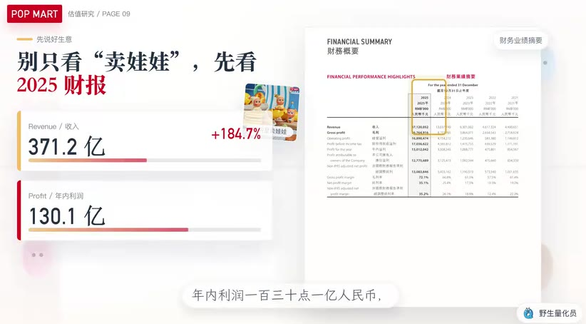
[02:54] POPMART / 估值研究/PAGE09 / 先说好生意 / FINANCIALSUMMARY / 财务业绩摘要 / 别只看“卖娃娃”，先看 / 财務概要 / 2025财报 / FINANCIALPERFORMANCE HIGHLIGHTS / ferthe e / 月8止 / 2025 / X219 / 20219 / 209F / 手元 / o0tIVAI / 1seooo / 人民整头 / Revenue/收入 / +184.7% / 娃娃 / Gnes prott / 4254994 / 7,120052 / 1301062 / [A1 / 4617.324 / 2654341 / 11(6851 / 371.2亿 / 14L890474 / A154271 / 1236546 / SKURO / 2P58U4 / RRRKeah / 17,A94622 / 0329 / L144312 / 11012042 / kU,IT / 12,775,689 / 1082344 / 6569) / 11063,446 / 72.14 / 140L62 / 96579 / 37,34) / .201,.35 / Nooft nuje / 35.1% / 17.35 / Nos7F5 adiuet rer / 19:0% / Profit/年内利润 / +293.3% / 35.2% / 22.5 / 130.1亿 / 公司体量，直接换了一档 / 这个增长不是小修小补，是公司体量直接换了一档。 / 野生量化员
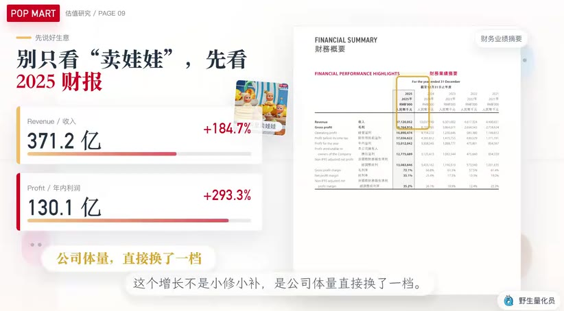
[02:57] POPMART / 估值研究/PAGE09 / 先说好生意 / FINANCIALSUMMARY / 财务业绩摘要 / 别只看“卖娃娃”，先看 / 财務概要 / 2025财报 / FINANCIALPERFORMANCE HIGHLIGHTS / ferthe e / 月8止 / 2025 / X219 / 20219 / 209F / 手元 / o0tIVAI / 1seooo / 人民整头 / Revenue/收入 / +184.7% / 娃娃 / Gnes prott / 4254994 / 7,120052 / 1301062 / [A1 / 4617.324 / 2654341 / 11(6851 / 371.2亿 / 14L890474 / A154271 / 1236546 / SKURO / 2P58U4 / RRRKeah / 17,A94622 / 0329 / L144312 / 11012042 / kU,IT / 12,775,689 / 1082344 / 6569) / 11063,446 / 72.14 / 140L62 / 37,34) / .201,.35 / Nooft nuje / 35.1% / 17.35 / Nos7F5 adiuet rer / 19:0% / Profit/年内利润 / +293.3% / 35.2% / 22.5 / 130.1亿 / 公司体量，直接换了一档 / 这个增长不是小修小补，是公司体量直接换了一档。 / 野生量化员
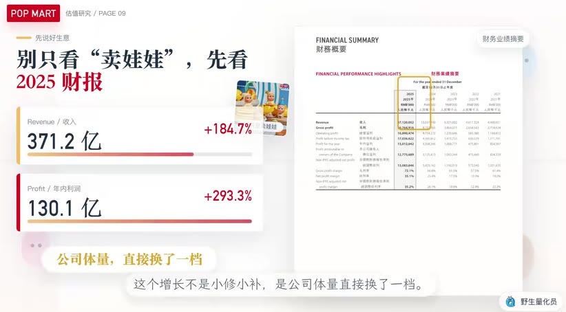
[03:00] POPMART估值研究/PAGE10 / 护城河不是盒子 / 是能被看懂的IP / 盲盒玩法 / THE MONSTERS / LABUBU / 这份财报也说明了一件事：这家公司的护城河， / 野生量化员
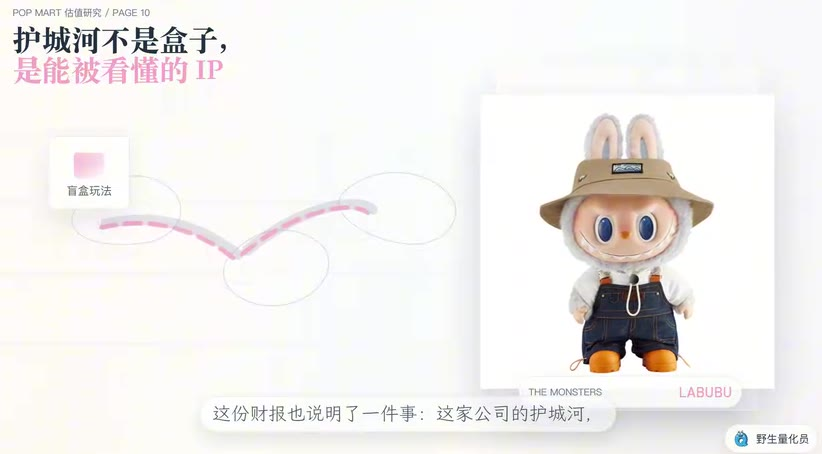
[03:03] POPMART估值研究/PAGE10 / 护城河不是盒子 / 是能被看懂的IP / 不是盲盒，是IP / 角色本身开始承担护城河 / 盒玩法 / THE MONSTERS / LABUBU / 而是它手里那些容易跨文化传播的IP--就像精灵天 / 野生量化员
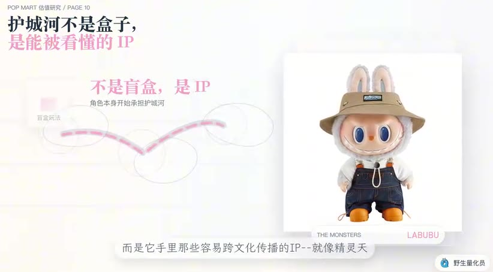
[03:06] POPMART估值研究/PAGE10 / 护城河不是盒子 / 是能被看懂的IP / 不是盲盒，是IP / 角色本身开始承担护城河 / 宣盒玩法 / THE MONSTERS / LABUBU / 而是它手里那些容易跨文化传播的IP--就像精灵天 / 野生量化员
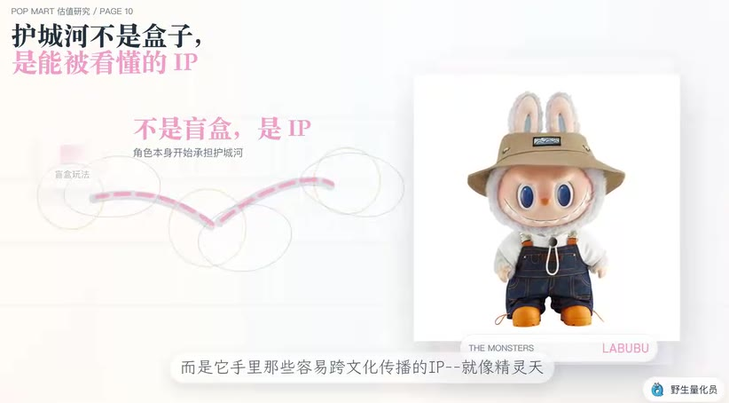
[03:09] POPMART估值研究/PAGE10 / 护城河不是盒子 / 是能被看懂的IP / 不是盲盒，是IP / 角色本身开始承担护城河 / 宜盒玩法 / THE MONSTERS / LABUBU / 团里的拉布布。咱们不扯一些复杂的道理，简单点说， / 野生量化员
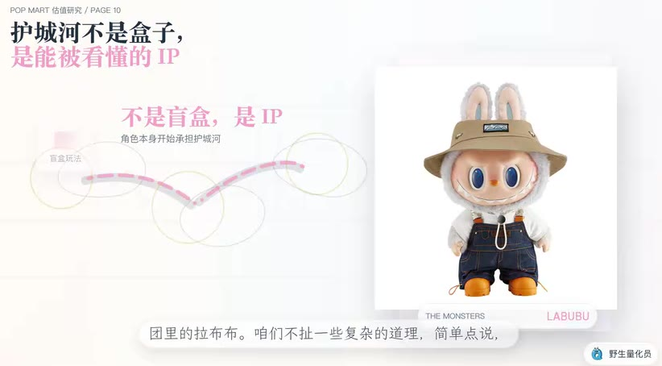
[03:12] POPMART估值研究/PAGE10 / 护城河不是盒子 / 是能被看懂的IP / 不是盲盒，是IP / 角色本身开始承担护城河 / 宜盒玩法 / 法国 / 美国 / 中国 / THEMONSTERS / LABUBU / 不管你是中国人、美国人、还是法国人， / 野生量化员
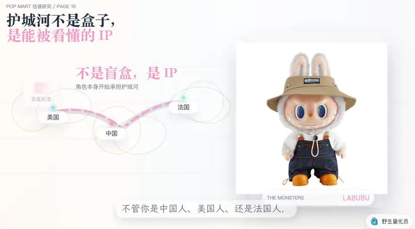
[03:15] POPMART估值研究/PAGE10 / 护城河不是盒子 / 是能被看懂的IP / 不是盲盒，是IP / 角色本身开始承担护城河 / 直盒玩法 / 法国 / 美国 / 中国 / 第一眼就有感觉 / 情绪价值 / THE MONSTERS / LABUBU / 第一眼看就有感觉，有情绪价值，那这种东西， / 野生量化员
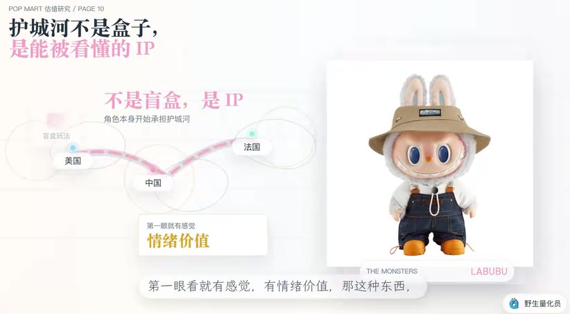
[03:18] POPMART / 管理层这道门 / POPMART估值研究/PAGE11 / 热度最高时，先看谁踩刹车 / 9992.HK/管理层定力仪表 / 可持续长期 / 过热 / 对的人：王宁 / 王宁与LABUBU：热度背后看管理 / 第二点：“对的人”。段永平公开说 / 野生量化员
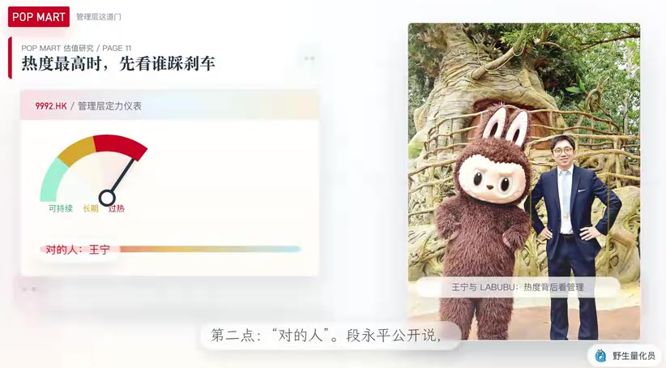
[03:21] POPMART / 管理层这道门 / POPMART估值研究/PAGE11 / 热度最高时，先看谁踩刹车 / 9992.HK/管理层定力仪表 / 可持续长期 / 过热 / 对的人：王宁 / 王宁与LABUBU：热度背后看管理 / 自己是王宁的粉丝，看好他能把这家公司 / 野生量化员
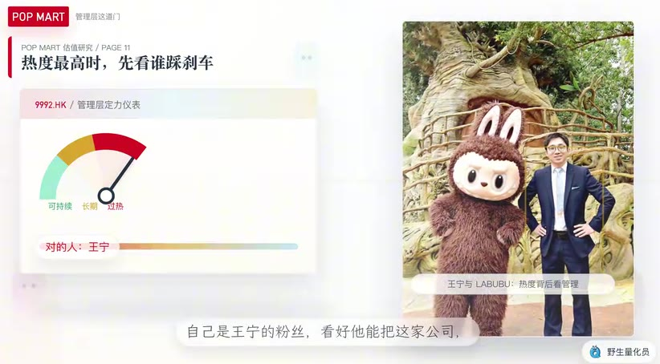
[03:24] POPMART / 管理层这道门 / POPMART估值研究/PAGE11 / 热度最高时，先看谁踩刹车 / 9992.HK/管理层定力仪表 / 25Y+ / 稳稳当当经营的时间 / 可持续长期 / 过热 / 对的人：王宁 / 王宁与LABUBU：热度背后看管理 / 自己是王宁的粉丝，看好他能把这家公司， / 野生量化员
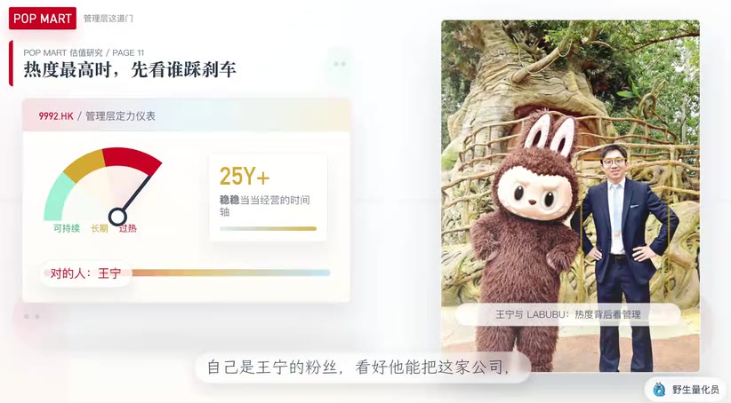
[03:27] POPMART / 管理层这道门 / POPMART估值研究/PAGE11 / 热度最高时，先看谁踩刹车 / 9992.HK/管理层定力仪表 / 25Y+ / 稳稳当当经营的时间 / 可持续长期 / 过热 / 对的人：王宁 / 战略定力 / 王宁与LABUBU：热度背后看管理 / 稳稳当当再经营二十五年以上。他最看重的 / 野生量化员
[03:30] POPMART / 管理层这道门 / POPMART估值研究/PAGE11 / 热度最高时，先看谁踩刹车 / 9992.HK/管理层定力仪表 / 25Y+ / 稳稳当当经营的时间 / 可持续长期 / 过热 / 对的人：王宁 / 战略定力 / 王宁与LABUBU：热度背后看管理 / 是王宁身上那种少见的战略定力 / 在公司最火、 / 野生量化员
[03:33] POPMART / 管理层这道门 / POPMART估值研究/PAGE11 / 热度最高时，先看谁踩刹车 / 9992.HK/管理层定力仪表 / 25Y+ / 稳稳当当经营的时间 / 可持续长期 / 过热 / 对的人：王宁 / 战略定力 / 王宁与LABUBU：热度背后看管理 / 最不缺钱赚的时候，反而敢主动踩刹车 / 野生量化员
[03:36] POPMART / 管理层这道门 / POPMART估值研究/PAGE11 / 热度最高时，先看谁踩刹车 / 9992.HK/管理层定力仪表 / 25Y+ / 稳稳当当经营的时间 / 可持续长期 / 过热 / 对的人：王宁 / 战略定力 / 王宁与LABUBU：热度背后看管理 / 长期投资，先找对人 / 不被短期利益冲昏头脑。这对做长期投资的人来说， / 野生量化员
[03:39] POPMART / 管理层这道门 / POPMART估值研究/PAGE11 / 热度最高时，先看谁踩刹车 / 9992.HK/管理层定力仪表 / 25Y+ / 稳稳当当经营的时间 / 可持续长期 / 过热 / 对的人：王宁 / 战略定力 / 王宁与LABUBU：热度背后看管理 / 长期投资，先找对人 / 找对人，往往比押中一门一时的好生意，更难， / 野生量化员
[03:42] POPMART / 管理层这道门 / POPMART估值研究/PAGE11 / 热度最高时，先看谁踩刹车 / 9992.HK/管理层定力仪表 / 25Y+ / 稳稳当当经营的时间 / 可持续长期 / 过热 / 对的人：王宁 / 战略定力 / 王宁与LABUBU：热度背后看管理 / 长期投资，先找对人 / 找对人，往往比押中一门一时的好生意，更难， / 野生量化员
[03:45] POPMART估值研究/PAGE12 / 从高成长价签，到风险折价层 / 重价 / POP MART / 好价格？ / 风险已进价 / 不是满分故事 / 风险折价层 / POPMAR / POPKART / WPOPMART / 但我觉得，最能打动段永平的，是第三句：好价格。 / 野生量化员
[03:48] POPMART估值研究/PAGE12 / 从高成长价签，到风险折价层 / 重价 / POP MART / 风险已进价 / 不是满分故事 / 风险折价层 / POPMAR / POPRARTWPOPMART / 好价格？ / 所谓好价格，不是说股价从三百多港元跌到一百五十多港元， / 野生量化员
[03:51] POPMART估值研究/PAGE12 / 从高成长价签，到风险折价层 / 重价 / POP MART / 好价格？ / 风险已进价 / 不是满分故事 / 风险折价层 / POPMAR / POPKART / WPOPHART / 好价格 / 所谓好价格，不是说股价从三百多港元跌到一百五十多港元， / 野生量化员
[03:54] POPMART估值研究/PAGE12 / 从高成长价签，到风险折价层 / 重价 / POP MART / 好价格？ / 风险已进价 / 不是满分故事 / 风险折价层 / POPMAR / POPMART / 好价格？ / 就一定便宜、就能买了。而是说，好生意还在 / 野生量化员
[03:57] POPMART估值研究/PAGE12 / 从高成长价签，到风险折价层 / 重价 / POP MART / 好价格？ / 风险已进价 / 不是满分故事 / 风险折价层 / POPMAR / POPMART / WPOPMART / 好价格 / 对的人也还在，但市场因为拉布布退潮、海外降速、 / 野生量化员
[04:00] POPMART估值研究/PAGE12 / 从高成长价签，到风险折价层 / 重价 / POP MART / 好价格？ / 风险已进价 / 不是满分故事 / 风险折价层 / POPMAR / POPMART / POPMART / 好价格？ / 对的人也还在，但市场因为拉布布退潮、海外降速、 / 野生量化员
[04:03] POPMART估值研究/PAGE12 / 从高成长价签，到风险折价层 / 重价 / POP MART / 好价格？ / 风险已进价 / 不是满分故事 / 风险折价层 / POPMAR / POPMATW / POPMART / 好价格？ / 不再按一个完美的故事给它定价了。 / 野生量化员
[04:06] POPMART / 好价格/安全边际 / 不是跌了就便宜 / 第三句：好价格 / 风险写进价格 / 不付满分价，才有一层 / 缓冲垫 / 过去 / 满分故事价 / 好生意还在，但市场担心已经写进价格；这不是 / 闭眼乐观，而是风险折价后的安全边看到的价格 / 过去像在付 / 满分故事 / 现在 / 担心已进价 / 不等于自动便宜 / 留出缓冲 / 风险已折价 / 不付全价 / 同样一门好生意，你不用再按满分的价钱去买了。 / 野生量化员
[04:09] POPMART / 好价格/安全边际 / 不是跌了就便宜 / 第三句：好价格 / 风险写进价格 / 不付满分价，才有一层 / 缓冲垫 / 过去 / 满分故事价 / 好生意还在，但市场担心已经写进价格：这不是 / 闭眼乐观，而是风险折价后的安全边看到的价格 / 过去像在付 / 满分故事 / 现在 / 担心已进价 / 不等于自动便宜 / 底部 / 留出缓冲 / 风险已折价 / 不付全价 / 市场的那些担心，早就写进了股价里， / 野生量化员
[04:12] POPMART / 好价格/安全边际 / 不是跌了就便宜 / 第三句：好价格 / 风险写进价格 / 不付满分价，才有一层 / 缓冲垫 / 过去 / 满分故事价 / 好生意还在，但市场担心已经写进价格：这不是 / 闭眼乐观，而是风险折价后的安全边际。 / 过去像在付 / 满分故事 / 现在 / 担心 / 现在价格 / RISK 01 / 拉布布退潮 / 现在看到的价格 / 不再付全价 / 底邮 / 不等于自动便宜 / 留出缓冲 / 风险已折价 / 不付全价 / 在这个位置出手，等于自带了一层缓冲垫。 / 野生量化员
[04:15] POPMART / 好价格/安全边际 / 不是跌了就便宜 / 第三句：好价格 / 风险写进价格 / 不付满分价，才有一层 / 缓冲垫 / 过去 / 满分故事价 / 好生意还在，但市场担心已经写进价格；这不是 / 闭眼乐观，而是风险折价后的安全边际。 / 过去像在付 / 满分故事 / 现在 / 担心已进价 / RISK 01 / RISK02 / RISK03 / 拉布布退潮 / 是不是一阵 / 现在看到的价格 / 底部 / 留出缓冲 / 风险已折价 / 不等于自动便宜 / 不付全价 / 哪怕后面真出点岔子， / 野生量化员
[04:18] POPMART / 好价格/安全边际 / 不是跌了就便宜 / 第三句：好价格 / 风险写进价格 / 不付满分价，才有一层 / 缓冲垫 / 过表 / 满分故事价 / 好生意还在，但市场担心已经写进价格；这不是 / 闭眼乐观，而是风险折价后的安全边际。 / 过去像在付 / 满分故事 / 现在 / 担心已进价 / RISK 01 / RISKO3 / 拉布布退潮 / 现在看到的价格 / 是不是一阵 / 不等于自动便宜 / 缓冲垫 / 安全边际 / 风险已折价 / 安全边际 / 不付全价 / 也不至于摔得太狠--而这层缓冲， / 野生量化员
[04:21] POPMART / 好价格/安全边际 / 不是跌了就便宜 / 第三句：好价格 / 风险写进价格 / 不付满分价，才有一层 / 缓冲垫 / 过去 / 满分故事价 / 好生意还在，但市场担心已经写进价格；这不是 / 闭眼乐观，而是风险折价后的安全边际。 / 过去像在付 / 满分故事 / 现在 / 担心 / 现在价格 / RISK 01 / TISK03 / 拉布布退潮 / 现在看到的价格 / 是不是一阵 / 不再付全价 / 不等于自动便宜 / 缓冲垫 / 安全边际 / 安全边际 / 风险已折价 / 不付全价 / 安全边际，不是闭眼乐观 / 也是他敢在这个位置出手的原因。 / 野生量化员
[04:24] POPMART / 从大佬逻辑到自己的问题 / 段永平逻辑拆完了 / 上一期回声 / 下一问：为什么我也 / 小米：低估 / 买泡泡玛特？ / 答案不急着给，得先接回上一期小米低估那场评 / 论区争议。 / 段永平逻辑 / 好生意 / 对的人 / 好价格 / 好，段永平的逻辑，我拆完了。 / 野生量化员
[04:27] POPMART / 从大佬逻辑到自己的问题 / 段永平逻辑拆完了 / 上一期回声 / 下一问：为什么我也 / 小米：低估 / 买泡泡玛特？ / 我的 / 分析 / 答案不急着给，得先接回上一期小米低估那场评 / 论区争议。 / 段永平逻辑 / 好生意 / 对的人 / 好价格 / 但在往下讲我自己的分析之前，可能有观众要问： / 野生量化员
[04:30] POPMART / 从大佬逻辑到自己的问题 / 段永平逻辑拆完了 / 上一期回声 / 下一问：为什么我也 / 小米：低估 / 买泡泡玛特？ / 我的 / 分析 / 答案不急着给，得先接回上一期小米低估那场评 / 论区争议。 / 段永平逻辑 / 好生意 / 对的人 / 好价格 / 观众的问题 / 怎么也开始买？ / 财经科普也要被追问 / 你一个做财经科普的，怎么也开始买泡泡玛特了？ / 野生量化员
[04:33] POPMART / 从大佬逻辑到自已的问题 / 段永平逻辑拆完了 / 上一期回声 / 下一问：为什么我也 / 小米：低估 / 买泡泡玛特？ / 我的 / 分析 / 结论就俩字 / 低估 / 答案不急着给，得先接回上一期小米低估那场评 / 论区争议。 / 段永平逻辑 / 好生意 / 对的人 / 好价格 / 观众的问题 / 怎么也开始买？ / 财经科普也要被追问 / 这事得接着上一期说。上一期我拆了小米， / 野生量化员
[04:36] POPMART / 从大佬逻辑到自己的问题 / 段永平逻辑拆完了 / 上一期回声 / 下一问：为什么我也 / 小米：低估 / 我的 / 买泡泡玛特？ / 分析 / 结论就俩字 / 低估 / 答案不急着给，得先接回上一期小米低估那场评 / 吵翻 / 论区争议。 / 段永平逻辑 / 好生意 / 对的人 / 好价格 / 观众的问题 / 怎么也开始买？ / 财经科普也要被追问 / 结论就俩字--低估。视频一发，评论区就吵翻了， / 野生量化员
[04:39] POPMART / 从大佬逻辑到自己的问题 / 段永平逻辑拆完了 / 上一期回声 / 下一问：为什么我也 / 小米：低估 / 我的 / 买泡泡玛特？ / 分析 / 结论就俩字 / 低估 / 答案不急着给，得先接回上一期小米低估那场评 / 吵翻 / 论区争议。 / 段永平逻辑 / 好生意 / 对的人 / 好价格 / 算得清楚 / 高位套牢？ / 观众的问题 / 怎么也开始买？ / 财经科普也要被追问 / 有人说我算得清楚，也有人骂我肯定是高位套牢了、 / 野生量化员
[04:42] POPMART / 从大佬逻辑到自己的问题 / 段永平逻辑拆完了 / 上一期回声 / 下一问：为什么我也 / 小米：低估 / 我的 / 买泡泡玛特？ / 分析 / 结论就俩字 / 低估 / 答案不急着给，得先接回上一期小米低估那场评 / 吵翻 / 论区争议。 / 段永平逻辑 / 好生意 / 对的人 / 好价格 / 算得清楚 / 高位套牢？ / 观众的问题 / 怎么也开始买？ / 忽悠人接盘？ / NEXT QUESTION / 讲估值的人，也要进 / 同一张考卷 / 忽悠人接盘。 / 野生量化员
[04:45] POPMART / 估值方法也要上秤 / 卖瓜梗之后，回到真问题 / 只讲低估，手里一股 / 不买？上同一张秤 / 天天讲估值和安全边际，真实仓位就是那块必 / 须放上去的秤。 / 卖瓜摊 / 这事咱得持持，我一卖瓜的， / 野生量化员
[04:48] POPMART / 估值方法也要上秤 / 卖瓜梗之后，回到真问题 / 只讲低估，手里一股 / 不买？上同一张秤 / 天天讲估值和安全边际，真实仓位就是那块必 / 须放上去的秤。 / 卖瓜摊 / 能给你卖生瓜蛋子啊....不好意思，说错了。 / 野生量化员
[04:51] POPMART / 估值方法也要上秤 / 卖瓜梗之后，回到真问题 / 只讲低估，手里一股 / 不买？上同一张秤 / 天天讲估值和安全边际，真实仓位就是那块必 / 须放上去的秤。 / 卖瓜摊 / 11头斯 / 嘴上喊低估 / 真实仓位 / 我一做财经内容的，天天在这儿讲估值、讲安全边际， / 野生量化员
[04:54] POPMART / 估值方法也要上秤 / 卖瓜梗之后，回到真问题 / 只讲低估，手里一股 / 不买？上同一张秤 / 不能只嘴上喊 / 天天讲估值和安全边际，真实仓位就是那块必 / 须放上去的秤。 / 卖瓜摊 / 口头判斯 / 嘴上喊低估 / 真实 / 仓位 / 结果讲完就跑，后面是对是错也不复盘， / 野生量化员
[04:57] POPMART / 估值实验档案 / 真实仓位进入跟踪 / 观察仓 / 观察仓 / 不是投资建议 / 小米和泡泡玛特放进同一份档案，接下来交给 / 时间验证估值逻辑。 / 小米集团-W / 泡泡玛特 / 所以这一次，小米也好、泡泡玛特也好， / 野生量化员
[05:00] POPMART / 估值实验档案 / 真实仓位进入跟踪 / 观察仓 / 观察仓 / 不是投资建议 / 观察仓已归档 / 小米和泡泡玛特放进同一份档案，接下来交给 / 时间验证估值逻辑。 / 小米集团-W / ■泡泡玛特 / 我都建了一笔观察仓。再次再次重申一遍， / 野生量化员
[05:03] POPMART / 估值实验档案 / 真实仓位进入跟踪 / 观察仓 / 观察仓 / 不是投资建议 / 观察仓已归档 / 小米和泡泡玛特放进同一份档案，接下来交给 / 非投资建议 / 时间验证估值逻辑。 / 同一张考卷 / 小米集团-W / ■泡泡玛特 / 这里不构成任何投资建议。我的目的， / 野生量化员
[05:06] POPMART / 估值实验档案 / 真实仓位进入跟踪 / 观察仓 / 观察仓 / 不是投资建议 / 观察仓已归档 / 小米和泡泡玛特放进同一份档案，接下来交给 / 非投资建议 / 时间验证估值逻辑。 / 同一张考卷 / 小米集团-W / ■泡泡玛特 / 时间检验 / 是把自己放到同一张考卷上， / 野生量化员
[05:09] POPMART / 估值实验档案 / 真实仓位进入跟踪 / 观察仓 / 观察仓 / 不是投资建议 / 观察仓已归档 / 小米和泡泡玛特放进同一份档案，接下来交给 / 非投资建议 / 时间验证估值逻辑。 / 同一张考卷 / 小米集团-W / ■泡泡玛特 / 时间检验 / 看这套估值逻辑到底经不经得起时间检验。 / 野生量化员
[05:12] POPMART / 热度风险检查 / POPMART估值研究/PAGE17 / 热度很高，答案还得自己给 / LABUBU/审美周期风险 / 大佬买入闭眼买 / 今天抢 / 热度退湖？ / 自己判断 / 大佬买了，不等于我们就能闭眼买。 / 野生量化员
[05:15] POPMART / 热度风险检查 / POPMART估值研究/PAGE17 / 热度很高，答案还得自己给 / LABUBU/审美周期风险 / 大佬买入闭眼买 / 万一过两年 / 大家不要了呢？ / 今天抢 / 热度退潮？ / 自己判断 / 段永平自己都在访谈里问过一个问题：“万一过两年， / 野生量化员
[05:18] POPMART / 热度风险检查 / POPMART估值研究/PAGE17 / 热度很高，答案还得自己给 / LABUBU/审美周期风险 / 大佬买入闭眼买 / 万一过两年 / 大家不要了呢？ / 今天抢 / 热度退潮？ / 自己判断 / 大家都不要了呢？”这就是潮玩生意最麻烦的地方。 / 野生量化员
[05:21] POPMART / 热度风险检查 / POPMART估值研究/PAGE17 / 热度很高，答案还得自己给 / LABUBU/审美周期风险 / 大佬买入闭眼买 / 万一过两年 / 大家不要了呢？ / 今天抢 / 热度退潮？ / 自己判断 / 大家都不要了呢？”这就是潮玩生意最麻烦的地方。 / 野生量化员
[05:24] POPMART / 热度风险检查 / POPMART估值研究/PAGE17 / 热度很高，答案还得自己给 / LABUBU/审美周期风险 / 大佬买入闭眼买 / 万一过两年 / 大家不要了呢？ / 审美变化太快 / 热度退湖？ / 自己判断 / 今天全世界都在抢拉布布，但审美这东西变化太快， / 野生量化员
[05:27] POPMART / 热度风险检查 / POPMART估值研究/PAGE17 / 热度很高，答案还得自己给 / LABUBU/审美周期风险 / 大佬买入闭眼买 / 万一过两年 / 大家不要了呢？ / 审美变化太快 / 热度退湖？ / 自己判断 / 没有人能保证一个角色永远火下去。 / 野生量化员
[05:30] POPMART / 热度风险检查 / POPMART估值研究/PAGE17 / 热度很高，答案还得自己给 / LABUBU/审美周期风险 / 大佬买入闭眼买 / 万一过两年 / 大家不要了呢？ / 审美变化太快 / 只给研究入口 / 自己判断 / 所以段永平只是给了我“愿意花时间研究它”的理由。 / 野生量化员
[05:33] 大佬给入口，不给答案 / 至于最后值不值得买，得由你自己来判断。下面，
[05:36] 大佬给入口，不给答案 / 就是我自己的一些看法，仅供参考。
[05:39] POPMART / 财报与股价倒挂 / CONSOLIDATED STATEMENT OF PROFTT OR LOSS AND OTBER COMPREHENSIVE / POPMART估值研究/PAGE18 / INCOME / 数据向上，股价却不买账 / Year endrd 31 Dece / 2825 / RS8'000 / 2024 / Cost ef sules / (16,355,136) / 37,129852 / 13,037,749 / (4.329.954) / Gron profit / 6,764,916 / 8,707,765 / 9992.HK/倒挂现象 / Gesenl ind admisimine pemses / Dienbe / lleg / (8,082,433) / (3,650,464) / Phoxisioe for impein / (11,805) / (947,093) / Ober iose / 129.921 / 84.288 / (3406) / (140,011) / (36,778) / Operatiag prdt / 16,890,474 / 4154.272 / 业绩越亮眼，股价越不买账 / Fisenc income / 158.966 / 082,471) / 212.3 / (45.90) / 76,495 / 14US / rpety nseibod / 69,653 / Proft leflee ino / 17,836,622 / 4.65.3@ / (4,924,588) / (1,057,40) / nsfi far the year / 13812.942 / 3,308.343 / 财报柱向上7股价线震荡 / Profit attribetable tec / Ownsen of oe Coepey / 12,775,689 / 236.353 / X125413 / 182.372 / 13012.042 / 3308.3B / 官方利润表证据：增长被看见，但没有被全额定 / 研究泡泡玛特，你会发现，它有一个倒挂的现象： / 野生量化员
[05:42] POPMART / 财报与股价倒挂 / CONSOLIDATED STATEMENT OF PROFTT OR LOSS AND OTBER COMPREHENSIVE / POPMART估值研究/PAGE18 / INCOME / 数据向上，股价却不买账 / Year endrd 31 Deoe / 2825 / RS8'000 / 2924 / Cost ef sules / (16,355,136) / 37,129852 / 13,057,749 / (4.329.954) / Gron profit / 6,764,916 / 8,707,765 / 9992.HK/倒挂现象 / Geenl nd admisimine penes / Dienbe / lleg / (8,082,433) / (3,650,464) / Phoxisioe for impein / (11,805) / (947,093) / Ober iose / 129.921 / 84.288 / (3406) / (140,011) / (36,778) / Operatiag prdt / 16,890,474 / 4154272 / 业绩越亮眼，股价越不买账 / Fanct itoome / 158,966 / 082,471) / 212.3 / (45.90) / 76,495 / 16US / 69,653 / Proft leflee ino / 17,836,622 / 4.85.32 / (4,924,588) / (1,057.4) / nsfi far the year / 13812.942 / 3.308.38 / 财报柱向上7股价线震荡 / Profit attribetable tec / Ownses of oe Coepey / 12,775,689 / 236.353 / X125.4 / 182.372 / 13012.042 / 3308.3B / 2025年报 / 亮眼 / 官方利润表证据：增长被看见，但没有被全额定 / 业绩越亮眼，股价反而越不买账。二零二五年年报， / 野生量化员
[05:45] POPMART / 财报与股价倒挂 / CONSOLIDATED STATEMENT OF PROFTT OR LOSS AND OTHER COMPREHENSIVE / POPMART估值研究/PAGE18 / ISCOME / 数据向上，股价却不买账 / 2825 / R3M8'00 / 2024 / Cost ef ule / (16,355,136) / 37,129,852 / 13,037,749 / (4.329.954) / Grons profit / 6,764,916 / 8,707,765 / 9992.HK/倒挂现象 / Soe ind selling etpetses / (8,082,435) / (1,770,114) / (3,636,464) / edet ag eopiicg / (11.805) / (947,093) / 129921 / 84.288 / (3,406) / (160,011) / (6,778) / Operatiag prdt / 16,890,474 / 4154272 / 业绩越亮眼，股价越不买账 / Fiancr inoemc / 158,966 / 082,471 / 212.33 / (45.96 / 76.495 / 16335 / 69,653 / 4.365.31 / (4,924,589) / (1.057,46 / Protit far ther year / 13812.942 / 1,308.34 / 财报柱向上7股价线震汤 / Proit attribetable tec / Oesen of oe Crepeg / 12,775,689 / 236.353 / 3125.47 / 1X2.372 / 13,012.842 / 3.30.34 / 2025年报 / 亮眼 / 官方利润表证据：增长被看见，但没有被全额定 / 业绩越亮眼，股价反而越不买账。二零二五年年报， / 野生量化员
[05:48] POPMART / 财报与股价倒挂 / CONSOLIDATED STATEMENT OF PROFTT OR LOSS AND OTHER COMPREHENSIVE / POPMART估值研究/PAGE18 / ISCOME / 数据向上，股价却不买账 / 2825 / R3M8'00 / 2024 / Cost ef ule / (16,355,136) / 37,129,852 / 13,037,749 / (4.329.966) / Grons profit / 6,764,916 / 8,707,765 / 9992.HK/倒挂现象 / sd sgrope per guzo / Soe ind selling etpetsei / (8,082,435) / (1,770,114) / (3,636,464) / edet ag eopiicg / (11.805) / (947,093) / 129921 / 84.288 / (.406) / (160,011) / (6,778) / 业绩越亮眼，股价越不买账 / Operatiag prdt / Fitatee inoste / 158,966 / 082,471 / 212.33 / (48.96 / 76.495 / 163.35 / 69,653 / 4.365.31 / (4,924,588) / (1,057,46 / Protit far ther year / 13812.942 / 3,308.34 / Profit attribetable tec / 财报柱向上7股价线震荡 / Owsen of oe Crepeg / 12,775,689 / 236.353 / X125.47 / 1X2.37 / 13,012.842 / 3.306.34 / 2025年报 / 亮眼 / 官方利润表证据：增长被看见，但没有被全额定 / 数据是相当亮眼的；二零二六年一季度业务更新， / 野生量化员
[05:51] POPMART / 财报与股价倒挂 / CONSOLIDATED STATEMENT OF PROFTT OR LOSS AND OTHER COMPREHENSIVE / POPMART估值研究/PAGE18 / ISCOME / 数据向上，股价却不买账 / 2825 / RSM8'00 / 2924 / (16,385,136) / 37,129,852 / 13,057,749 / (4,329,964) / Grom prefit / 26,764,916 / 8,707,765 / 9992.HK/倒挂现象 / Dioribesoe aed selling etpeses / Genenl and adnisioative cspenses / (8,082,433) / (1,770,114) / (3,650.464) / horisioe for impain / (11.805) / (947,093) / Ober iacver / 129,921 / 84.288 / (3,466) / (140,011) / (6.778) / 业绩越亮眼，股价越不买账 / Operatine profit / 158,966 / 082,471) / 212.33 / (48.98 / 76.495 / 16JU35 / 69,663 / 4K.15 / 4.65.31 / (4,824,588) / (1,057,46 / Proft far fhe yesr / 13812.942 / 3,308.34 / Profit attribetable tec / 财报柱向上7股价线震荡 / Owsen ef oe Compity / 12,775.689 / 236.353 / X125.47 / 13,612.042 / 3,308.34 / 2025年报 / Q1收入同比 / 亮眼 / 75%-80% / 官方利润表证据：增长被看见，但没有被全额定 / 也不是差，官方披露的是整体收入同比增长百分之七十五到百分之 / 野生量化员
[05:54] POPMART / 财报与股价倒挂 / CONSOLIDATED STATEMENT OF PROFTT OR LOSS AND OTHER COMEPREHENSIVE / POPMART估值研究/PAGE18 / ISCOME / 数据向上，股价却不买账 / 2825 / R38'00. / 2024 / (16,85,136) / 37,129852 / 13,057,749 / 14.329944) / Grom prefit / 26,764,916 / 8,707,765 / 9992.HK/倒挂现象 / md sotepe per pug / Dhesbet / boe and selling ctpeiei / (8,082,433) / (HIN'D / (3,650,464) / Pvovisioe for impein / (11.805) / (947,093) / Oher incomr / 129.921 / 84.288 / (3,486) / Oler kxs% / (160,911) / (6.778) / 业绩越亮眼，股价越不买账 / Operitiag yrofi / 158,966 / 082,471) / 212.33 / (48.98 / 76.495 / 16J35 / 69,653 / 股价 / 4.65.31 / 反复波动 / (4,924,588) / (1,057,46 / Froft fer fle yesr / 13,812.842 / 3,308.34 / 财报柱向上7股价线震荡 / Prot attribetable tec / Owsen ef ee Congey / 12,775,69 / 236.353 / X125.47 / 13,012.042 / 3,308.34 / 2025年报 / Q1收入同比 / 亮眼 / 75%-80% / 官方利润表证据：增长被看见，但没有被全额定 / 八十。但股价并没有因为这些数字一路高歌， / 野生量化员
[05:57] POPMART / 财报与股价倒挂 / CONSOLIDATED STATEMENT OF PROFTT OR LOSS AND OTHER COMEPREHENSIVE / POPMART估值研究/PAGE18 / ISCOME / 数据向上，股价却不买账 / 2825 / R38'00. / 2024 / (16,85,136) / 37,129852 / 13,057,749 / 14.329944) / Grom prefit / 26,764,916 / 8,707,765 / 9992.HK/倒挂现象 / sosod toege pet pu / Dhesbet / boe and selling ctpeiei / (8,082,433) / (HIN'D / (3,650,464) / Pvovisioe for impein / (11.805) / (947,093) / Oher incomr / 129.921 / 84.288 / (3,486) / Oler kxs% / (160,911) / (6.778) / 业绩越亮眼，股价越不买账 / Operitiag yrofi / 158,966 / 082,471) / 212.33 / (48.98 / 76.495 / 16J35 / 69,653 / 股价 / 4.65.31 / 反复波动 / (4,924,588) / (1,057,46 / Froft fer fle yesr / 13,812.842 / 3,308.34 / 财报柱向上7股价线震荡 / Prot attribetable tec / Owsen ef ee Congey / 12,775,69 / 236.353 / X125.47 / 13,012.042 / 3,08.34 / 2025年报 / Q1收入同比 / 亮眼 / 75%-80% / 官方利润表证据：增长被看见，但没有被全额定 / 八十。但股价并没有因为这些数字一路高歌， / 野生量化员
[06:00] POPMART / 财报与股价倒挂 / CONSOLIDATED STATEMENT OF PROFTT OR LOSS AND OTHER COMIPREHENSIVE / POPMART估值研究/PAGE18 / INCOME / 数据向上，股价却不买账 / Year roded 31 Deone / 2825 / R38’000 / 2024 / Revtw / Cost ef sules / (16,355,136) / 37,129,852 / 13,057,749 / (4.329,954) / Gron prefit / 26,764,916 / 8,707,765 / 9992.HK/倒挂现象 / Geenl ind adniicie spess / so and selling es / (8,082,433) / (1,776,114) / (3,650,464) / Porisioe for impoin / (11.805) / (947,093) / Ober iacrse / 129.921 / (3406) / Oler Ss% / (160,811) / (6,778) / 84.288 / 业绩越亮眼，股价越不买账 / Operating profi: / Fitasce inoome. / 158.966 / 082,471) / 212.33 / (68.96 / 76.495 / 16J35 / Sharr of prale / 69,653 / 4K.18 / 股价 / 17,836,622 / 4.365.31 / 反复波动 / (4,924,588) / (1,057,46 / 13,012.842 / 3,308.34 / Proft attribetable tec / 财报柱向上7服价线震荡 / Ownes df ee Creputy / 12,775,689 / 236353 / X125.47 / 13,012.842 / 3.308.34 / 2025年报 / Q1收入同比 / 市场定价 / 亮眼 / 75%-80% / 不买账 / 官方利润表证据：增长被看见，但没有被全额定 / 股价为什么反着走？这背后，不是市场看不见增长， / 野生量化员
[06:03] POPMART / 财报与股价倒挂 / CONSOLIDATED STATEMENT OF PROFTT OR LOSS AND OTHER COMIPREHENSIVE / POPMART估值研究/PAGE18 / INCOME / 数据向上，股价却不买账 / Year roded 31 Deone / 2825 / R38’000 / 2024 / Revtw / Cost ef sules / (16,355,136) / 37,129,852 / 13,057,749 / (4.329,954) / Gron prefit / 26,764,916 / 8,707,765 / 9992.HK/倒挂现象 / Geenl nd adniaicine pess / Diosbe / so and selling es / (8,082,433) / (1,776,114) / (3,650,464) / Porisioe for impoin / (11.805) / (947,093) / Ober iacrse / 129921 / (3406) / Oler Ss% / (160,811) / (6,778) / 84.288 / 业绩越亮眼，股价越不买账 / Operating profi: / Fitasce inoome. / 158.966 / 082,471) / 212.33 / (68.95 / 76.495 / 16J35 / Sharr of prale / 69,653 / 4K.1 / 股价 / 17,836,622 / 4.35.31 / 反复波动 / (4,924,588) / (1,057,46 / 13,012.842 / 3,308.34 / Proft attribetable tec / 财报柱向上7服价线震荡 / Ownes df ee Creputy / 12,775,689 / 236353 / 1125.47 / 13,012.842 / 3.308.34 / 2025年报 / Q1收入同比 / 市场定价 / 亮眼 / 75%-80% / 不买账 / 官方利润表证据：增长被看见，但没有被全额定 / 股价为什么反着走？这背后，不是市场看不见增长， / 野生量化员
[06:06] POPMART / 财报与股价倒挂 / CONSOLIDATED STATEMENT OF PROFTT OR LOSS AND OTBER COMPREHENSIVE / POPMART估值研究/PAGE18 / ISCOME / 数据向上，股价却不买账 / 2825 / RS8'000 / 2024 / (16,355,136) / 37,129,852 / 13,037,749 / (4.329,966) / Grom profit / 26,764,916 / 8,707,765 / 9992.HK/倒挂现象 / egtpepe per pre / Dioibeo / poe and selling rspesses / (8,682,433) / (1,770,114) / (3,650,464) / hoinioe fr ipiest ls / (11.805) / (947,093) / 129.921 / 84.283 / (3.466) / Oher loses / (160,011) / (6,778) / 业绩越亮眼，股价越不买账 / Operatiag grofi / 158,966 / 082,471) / 212.33 / (45.95 / 76.495 / 16J35 / Shaee of prel / 69,653 / 股价 / 17,806,622 / 4,65.31 / 反复波动 / (4,824,588) / (1,057,46 / Proft far the yesr / 13812.942 / 3,308.34 / Profit attribetable lec / 财报柱向上7股价线震荡 / Ownsen sf ee Coepuey / 12,775,689 / 236.353 / X125.47 / 1X2.37 / 13,012.42 / 3.30K.34 / 2025年报 / Q1收入同比 / 市场定价 / 亮眼 / 75%-80% / 不买账 / 官方利润表证据：增长被看见，但没有被全额定 / 市场开始怀疑增长的确定性 / 而是市场开始怀疑：这种增长，到底还有多少确定性。 / 野生量化员
[06:09] POPMART / 利润持续性追问 / POPMART估值研究/PAGE19 / CONSOLIDATED SEATEMENT OF PROFTT OR LOSS AND OTHER COMPRUIENSIVE / ENCOME / 不是赚得少，是能赚多久 / sded 31 Dec / RM8000 / (19,355,156) / 37,129,852 / 13897,789 / (4,329,954) / 26.764.916 / 8.307.765 / 9992.HK/可持续性检测仪 / Gourl aod aboiaisntir rspen / d fiag rp / (8,882,43) / (1,770,116) / (1,650,466) / (11.805) / (H7,09)) / Oller inome / 149,921 / (1U11) / (36,778) / Oprrsting profit / 14399474 / 4,154.272 / 市场不是嫌它赚得少 / Hnance isoee / 158,966 / (82.471) / 212.335 / (X,983) / 76.495 / M3352 / 69,653 / 48.188 / 利润 / rtas / 4365,312 / (4,824,586) / (1.057.467) / 可持续性 / 1312.842 / JU308345 / 检测 / Profit altriletalle Ii / Oesm of tde Conpey / 12,775,689 / 236.353 / X,125.47S / 182.872 / U812.41 / J,308.345 / 利润表证据：赚钱事实已经很清楚 / 你发现没有，市场不是嫌它现在赚钱少。 / 野生量化员
[06:12] POPMART / 利润持续性追问 / POPMART估值研究/PAGE19 / CONSOLIDATED SEATEMENT OF PROFTT OR LOSS AND OTHER COMPRUIENSIVE / ENCOME / 不是赚得少，是能赚多久 / lear / RM8000 / (19,355,156) / 37,129,852 / 13897,789 / (4,329,954) / gu wuy) / 26.764.916 / 8.307.765 / 9992.HK/可持续性检测仪 / Gounl aod aboiaisntir rspen / (8,882,43) / (1,770,116) / (1,650,466) / (11.805) / (H7,09)) / Oller inome / 149,921 / (1U11) / (36,778) / Oprrsting profit / 14399474 / 4,154.272 / 市场不是嫌它赚得少 / Fnscr isone / 158,966 / (82.471) / 212.335 / 69,653 / 48.138 / 利润 / Profn be / 4365,812 / (4,824,588) / 1.087.467 / 可持续性 / 1312.842 / J.308345 / 检测 / Profit altriletalle Ii / Owm of the Coopuey / 12,775,689 / 236.353 / X,125.473 / 182.872 / U812.41 / 3,308.345 / 恰恰因为太赚钱 / 利润表证据：赚钱事实已经很清楚 / 恰恰是因为它太赚钱了，大家才开始追问： / 野生量化员
[06:15] POPMART / 利润持续性追问 / CONSOLIDATID STATEMENT OF PROFTT OR LOSS AND OTHER COMPREHENSIVE / POPMART估值研究/PAGE19 / INOOME / 不是赚得少，是能赚多久 / RM8'000 / oele sales / (16,355,156) / 37,129,852 / 15,807,789 / (4.329,984) / 26.764,916 / 8.307,765 / 9992.HK/可持续性检测仪 / Gosenl and adnisistntive (getoes / (8,882,433) / (1,770,11) / (3,650,464) / (11.885) / (H7.099) / Oller inoome / 149921 / (1UA1) / (36,778) / Opnatiag preft / 14899.474 / 4,154.272 / 市场不是嫌它赚得少 / Hinnoe itcvese / 158,946 / (K2.471) / 212.335 / (HX.983) / 69,653 / 48.138 / 利润 / 4,365,812 / (4,824,586) / 1.057.467 / 可持续性 / si ap nj rgd / 1312.042 / J.308345 / 检测 / Prefit altribetable ii / - Ovsm of te Conpany / 12.775,689 / 236.353 / X.125.473 / 182.872 / U812.41 / 3.308.345 / 恰恰因为太赚钱 / 还能一直赚？ / 利润表证据：赚钱事实已经很清楚 / 这钱还能不能一直这么赚？ / 野生量化员
[06:18] POPMART / 四个折价旋钮 / POPMART估值研究/PAGE20 / 成长神话，被四个风险旋钮调低 / 9992.HK/成长估值仪 / 高基数 / 184.7%后 / 75%-80%也会被看 / 作降档 / 估值仪 / IP收入结构+LABUBU商品线 / 把这个追问拆开看，主要是四件事。第一 / 野生量化员
[06:21] POPMART / 四个折价旋钮 / POPMART估值研究/PAGE20 / 成长神话，被四个风险旋钮调低 / 9992.HK/成长估值仪 / 高基数 / 184.7%后， / 75%-80%也会被看 / 作降档 / 估值仪 / IP收入结构+LABUBU商品线 / 高基数之后，增速一定会降档。 / 野生量化员
[06:24] POPMART / 四个折价旋钮 / POPMART估值研究/PAGE20 / 成长神话，被四个风险旋钮调低 / 9992.HK/成长估值仪 / 高基数 / 184.7%后， / 75%-80%也会被看 / 作降档 / 估值仪 / IP收入结构+LABUBU商品线 / 二零二五年收入增长百分之一百八十四点七 / 野生量化员
[06:27] POPMART / 四个折价旋钮 / POPMART估值研究/PAGE20 / 成长神话，被四个风险旋钮调低 / 9992.HK/成长估值仪 / 高基数 / 184.7%后， / 75%-80%也会被看 / 作降档 / 估值仪 / IP收入结构+LABUBU商品线 / 二零二六年一季度还有百分之七十五到百分之八十 / 野生量化员
[06:30] POPMART / 四个折价旋钮 / POPMART估值研究/PAGE20 / 成长神话，被四个风险旋钮调低 / 9992.HK/成长估值仪 / 高基数 / 184.7%后, / 75%-80%也会被看 / 作降档 / 估值仪 / IP收入结构+LABUBU商品线 / 已经很强了，但斜率确实下来了。第二 / 野生量化员
[06:33] POPMART / 四个折价旋钮 / POPMART估值研究/PAGE20 / 成长神话，被四个风险旋钮调低 / 9992.HK/成长估值仪 / 555555555 / 高基数 / IP集中 / 184.7%后, / 精灵天团收入占比 / 75%-80%也会被看 / 作降档 / 38.1%，越火越敏感 / 估值仪 / IP收入结构+LABUBU商品线 / IP集中度高。不是拉布布一个角色， / 野生量化员
[06:36] POPMART / 四个折价旋钮 / POPMART估值研究/PAGE20 / 成长神话，被四个风险旋钮调低 / 9992.HK/成长估值仪 / 55555555 / 高基数 / IP集中 / 184.7%后， / 精灵天团收入占比 / 75%-80%也会被看 / 38.1%，越火越敏感 / 作降档 / 估值仪 / IP收入结构+LABUBU商品线 / 二零二五年占了公司收入的百分之三十八点一。 / 野生量化员
[06:39] POPMART / 四个折价旋钮 / POPMART估值研究/PAGE20 / 成长神话，被四个风险旋钮调低 / 9992.HK/成长估值仪 / 5555555 / 高基数 / IP集中 / 184.7%后， / 精灵天团收入占比 / 75%-80%也会被看 / 38.1%，越火越敏感 / 作降档 / 成长 / 估值仪 / IP收入结构+LABUBU商品线 / 它越火，公司越赚钱；但它一波动， / 野生量化员
[06:42] POPMART / 四个折价旋钮 / POPMART估值研究/PAGE20 / 成长神话，被四个风险旋钮调低 / 9992.HK/成长估值仪 / 5555555 / 高基数 / IP集中 / 184.7%后， / 精灵天团收入占比 / 75%-80%也会被看 / 38.1%，越火越敏感 / 作降档 / 成长 / 估值仪 / 海外正常化 / 低基数狂奔之后，市 / 场不再按几倍增长定 / IP收入结构+LABUBU商品线 / 估值也会跟着被打折。第三，海外增长会正常化。 / 野生量化员
[06:45] POPMART / 四个折价旋钮 / POPMART估值研究/PAGE20 / 成长神话，被四个风险旋钮调低 / 9992.HK/成长估值仪 / 5555555 / 高基数 / IP集中 / 184.7%后, / 精灵天团收入占比 / 75%-80%也会被看 / 38.1%，越火越敏感 / 作降档 / 估值仪 / 海外正常化 / 风险折价逐步进入 / 低基数狂奔之后，市 / 场不再按几倍增长定 / IP收入结构+LABUBU商品线 / 美洲、欧洲去年是低基数狂奔， / 野生量化员
[06:48] POPMART / 四个折价旋钮 / POPMART估值研究/PAGE20 / 成长神话，被四个风险旋钮调低 / 9992.HK/成长估值仪 / 555555 / 高基数 / IP集中 / 184.7%后, / 精灵天团收入占比 / 75%-80%也会被看 / 38.1%，越火越敏感 / 作降档 / 估值仪 / 海外正常化 / 风险折价逐步进入 / 低基数狂奔之后，市 / 场不再按几倍增长定 / IP收入结构+LABUBU商品线 / 一季度回到五六十个百分点，仍然很好， / 野生量化员
[06:51] POPMART / 四个折价旋钮 / POPMART估值研究/PAGE20 / 成长神话，被四个风险旋钮调低 / 9992.HK/成长估值仪 / 5555555 / 高基数 / IP集中 / 184.7%后, / 精灵天团收入占比 / 75%-80%也会被看 / 38.1%，越火越敏感 / 作降档 / 估值仪 / 海外正常化 / 风险折价逐步进入 / 低基数狂奔之后，市 / 场不再按几倍增长定 / IP收入结构+LABUBU商品线 / 但市场不会再按“永远几倍增长”给它定价。第四， / 野生量化员
[06:54] POPMART / 四个折价旋钮 / POPMART估值研究/PAGE20 / 成长神话，被四个风险旋钮调低 / 9992.HK/成长估值仪 / 5555555 / 高基数 / IP集中 / 184.7% 后, / 精灵天团收入占比 / 75%-80%也会被看 / 作降档 / 38.1%，越火越敏惑 / 估值仪 / 海外正常化 / 跨界试错 / 风险折价逐步进入 / 低基数狂奔之后，市 / 延长IP生命周期， / 场不再按几倍增长定 / 还是分散管理精力 / IP收入结构+LABUBU商品线 / 跨界业务要花钱试错。乐园、甜品、数字娱乐， / 野生量化员
[06:57] POPMART / 四个折价旋钮 / POPMART估值研究/PAGE20 / 成长神话，被四个风险旋钮调低 / 9992.HK/成长估值仪 / 5555555 / 高基数 / IP集中 / 184.7% 后, / 精灵天团收入占比 / 75%-80%也会被看 / 作降档 / 38.1%，越火越敏惑 / 估值仪 / 海外正常化 / 跨界试错 / 风险折价逐步进入 / 低基数狂奔之后，市 / 延长IP生命周期， / 场不再按几倍增长定 / 还是分散管理精力 / IP收入结构+LABUBU商品线 / 方向都能理解，但到底是在延长IP生命周期， / 野生量化员
[07:00] POPMART / 四个折价旋钮 / POPMART估值研究/PAGE20 / 成长神话，被四个风险旋钮调低 / 9992.HK/成长估值仪 / 55555555 / 高基数 / IP集中 / 184.7%后， / 精灵天团收入占比 / 75%-80%也会被看 / 38.1%，越火越敏感 / 作降档 / 估值仪 / 海外正常化 / 跨界试错 / 风险折价逐步进入 / 低基数狂奔之后，市 / 延长IP生命周期， / 场不再按几倍增长定 / 还是分散管理精力 / IP收入结构+LABUBU商品线 / 还是在分散管理层精力，还得继续看。 / 野生量化员
[07:03] POPMART / 估值逻辑换轨 / POPMART估值研究/PAGE21 / 从成长神话，换到确定性估值 / 9992.HK/估值逻辑换轨 / 四件事合在一起 / 闭眼成长 / 换轨 / 确定性估值 / 增长还在，但估值逻辑换了轨道 / 这四件事合在一起，我得出的结论是： / 野生量化员
[07:06] POPMART / 估值逻辑换轨 / POPMART估值研究/PAGE21 / 从成长神话，换到确定性估值 / 9992.HK/估值逻辑换轨 / 四件事合在一起 / 闭眼成长 / 换轨 / 确定性估值 / 增长还在，但估值逻辑换了轨道 / 泡泡玛特已经不是过去那个可以闭眼买、 / 野生量化员
[07:09] POPMART / 估值逻辑换轨 / POPMART估值研究/PAGE21 / 从成长神话，换到确定性估值 / 9992.HK/估值逻辑换轨 / 四件事合在一起 / 闭眼买 / 闭眼成长 / 换轨 / 确定性估值 / 增长还在，但估值逻辑换了轨道 / 每年几何级增长的成长神话了。更深一层看， / 野生量化员
[07:12] POPMART / 估值逻辑换轨 / POPMART估值研究/PAGE21 / 从成长神话，换到确定性估值 / 9992.HK/估值逻辑换轨 / 四件事合在一起 / 闭眼买 / 闭眼成长 / 换轨 / 确定性估值 / 不是马上不行 / 增长还在，但估值逻辑换了轨道 / 市场不是在怀疑它马上不行了， / 野生量化员
[07:15] POPMART / 估值逻辑换轨 / POPMART估值研究/PAGE21 / 从成长神话，换到确定性估值 / 9992.HK/估值逻辑换轨 / 四件事合在一起 / 闭眼买 / 闭眼成长 / 换轨 / 确定性估值 / 不是马上不行 / 增长还在，但估值逻辑换了轨道 / 而是在怀疑过去那种高确定性的增长， / 野生量化员
[07:18] POPMART / 估值逻辑换轨 / POPMART估值研究/PAGE21 / 从成长神话，换到确定性估值 / 9992.HK/估值逻辑换轨 / 四件事合在一起 / 闭眼买 / 闭眼成长 / 换轨 / 确定性估值 / 不是马上不行 / 高估值要问确定性 / 增长还在，但估值逻辑换了轨道 / 还能不能持续下去。它现在要面对的， / 野生量化员
[07:21] POPMART / 估值逻辑换轨 / POPMART估值研究/PAGE21 / 从成长神话，换到确定性估值 / 9992.HK/估值逻辑换轨 / 四件事合在一起 / 闭眼买 / 闭眼成长 / 换轨 / 确定性估值 / 不是马上不行 / 高估值要问确定性 / 增长还在，但估值逻辑换了轨道 / 不是“有没有增长”这么简单的问题 / 野生量化员
[07:24] 增长还在，确定性降价 / 而是“增长的确定性，值不值得市场继续给高估值”。
[07:27] POPMART估值研究/PAGE22 / 别只看速度， / 还要看底盘结不结实 / 资产负债表证据 / FINANCIAL POSITION HIGHLIGHTS / 财移状洗表票 / 利润表 / 1.44731 / 速度表 / suare / 在前两期视频中，我们反复提到的一句话： / 野生量化员
[07:30] POPMART估值研究/PAGE22 / 别只看速度， / 还要看底盘结不结实 / 资产负债表证据 / FINANCIALPOSITION HIGHLIGHTS / 财狱洗表 / 不能只盯 / 增速一个数 / 3M460 / 利润表 / F/M4P1 / 速度表 / 1H91594 / 1/M4141 / 判断一家公司，不能只盯着增速那一个数。 / 野生量化员
[07:33] POPMART估值研究/PAGE22 / 别只看速度， / 还要看底盘结不结实 / 资产负债表证据 / FINANCIALPOSITION HIGHLIGHTS / 财狱洗表 / 不能只盯 / 增速一个数 / 3M460 / 利润表 / F/M4P1 / 速度表 / 1H91594 / 1/M4141 / 增速是利润表上的速度表，它告诉你车跑得快不快； / 野生量化员
[07:36] POPMART估值研究/PAGE22 / 别只看速度， / 还要看底盘结不结实 / 资产负债表证据 / FINANCIALPOSITION HIGHLIGHTS / 财狱洗表 / 不能只盯 / 增速一个数 / II) / JM460 / 利润表 / 速度表 / 1291594 / 增速是利润表上的速度表，它告诉你车跑得快不快； / 野生量化员
[07:39] POPMART估值研究/PAGE22 / 别只看速度， / 还要看底盘结不结实 / 资产负债表证据 / FINANCIAL POSITION HIGHLIGHTS / 财状表票 / 不能只盯 / 增速一个数 / 利润表 / 速度表 / 1H91.194 / 资产负债表底座 / 这辆车到底结不结实 / 但资产负债表，才告诉你这辆车的底座到底结不结实。 / 野生量化员
[07:42] POPMART估值研究/PAGE22 / 别只看速度， / 还要看底盘结不结实 / 资产负债表证据 / FINANCIALPOSITION HIGHLIGHTS / 财获表票 / 不能只盯 / 增速一个数 / 利润表 / 速度表 / 1H91.194 / 镜头往下 / 看底子 / 资产负债表底座 / 这辆车到底结不结实 / 所以，咱们得把财报往下再翻几页，看看它的底子， / 野生量化员
[07:45] POPMART估值研究/PAGE23 / 现金水库， / 压在资产底盘上 / 财务状况摘要 / 截至2025年底 / FINANCIALPOSITION HIGHUGHTS / 财汉表 / 7.971 / Bsiavt / 1/44541 / 现金+短期定存 / 170亿+ / 资产底盘 / 水位线就是缓冲垫 / 一翻，我就有底了。截至二零二五年底， / 野生量化员
[07:48] POPMART估值研究/PAGE23 / 现金水库， / 压在资产底盘上 / 财务状况摘要 / FINANCIALPOSTION HIGHUGHTS / 截至2025年底 / 财汉表 / 现金 / 短期定存 / 7.971 / 1/44541 / L.380L824 / 现金+短期定存 / 170亿+ / HEIEE / 资产底盘 / 水位线就是缓冲垫 / 泡泡玛特账上现金加短期定存，合计超过一百七十亿， / 野生量化员
[07:51] POPMART估值研究/PAGE23 / 现金水库， / 压在资产底盘上 / 财务状况摘要 / FINANCIALPOSITIONHIGHLIGHTS / 截至2025年底 / 财汉表量 / 现金 / 短期定存 / K1K711 / 5,48.41 / 2.380826 / 现金+短期定存 / 170亿+ / HSET / 资产底盘 / 水位线就是缓冲垫 / 泡泡玛特账上现金加短期定存，合计超过一百七十亿， / 野生量化员
[07:54] POPMART 估值研究/ PAGE 24 / 低负债，不等于零负债 / 关键是结构干净 / 7借款说明证据 / Trade pyaes peauny repewss oer cbigts se pay for marchandise ficm aplies 1s / Deceober 2024 to RMB1,858.2 eillica ao of 31 Decrmber 2025, pemaril aribtube to e / m. Trade pyable inceod Ie RM81.090.1 illiot an of 31 / 资产负债率 / o g 1 j r sp 1 srp / 29.4% / Renk hurroningy / d yq r q P d ap s0 g 1 y / Pledgr of Aorts / 31I Dks / Gearing Ratis / Deng ddg i y / by 100A 31 D 205.le G prg no 29.4 md si / aNg I p s8v gt fm / Costirgoiy / We aee it oy iled ix a eriul lgl pec / peoceodiap.e wo roon a or ctiago luli bes od oe indmt / snzilable, it is IAely that a lox he beca iocs / cMimitel. / ed asd tle aa / ant of the leis cas be rcuno / Farign Evcage Rik Manaprmrmt / Ax tbc Cie / mo y pg Sp / sed to Bxe / siden hat dle berincio is aet esposed to sny sigsificeit foecipa ctchiege rid as dse fitascid) / eves ef owr openng ie e iigific. eegh r Grp do st ed ai / rocies eder thn tle repecthe fenc / fonvign coimotcy Bact / *hrn it I orccisery: te csnre soe forctgt etchungc tisk. o epdet coetiot / we will keep a .clese rye oe rrlevaar dnido / Ns xad Lalie / 更关键的是负债端： / 野生量化员
[07:57] POP MART 估值研究/ PAGE 24 / 低负债，不等于零负债： / 关键是结构干净 / 1借款说明证据 / Trade pyaes peauny repewss oer cbigts se pay for marchandise ficm aplies 1s / so. Trade poyahles icreof fe RM81,090.1 ili an of 31 / i ci i / 资产负债率 / 29.4% / Renk hurroningy / yq 2q P d s20 g 1 y / Pledgr of Aorts / Gearing Ratis / engs d l y / by 100A31D205 Grg n29d s / sg I p s g f / Costingoiy / We a y il dir p / peoceediap.ewof non or cotiago lui bes d n indts / zilable, at is IAely thut a los be beca iocs / cMinel. / ed asd tle aas / cs21 2q e2 v0 ap jo 10e / Farign Ege Rik Maapmrnt / Ax tbc Cioi / relaed so U'S aollur, Thi Bai. Singepore doar asd Hfong Koeg dollar. Out mugcat / ned to Bxe / iden that le besiscio i aet esposed to say sipsifcet foecipa ctchinge rik e de fibasciu) / eves ef owr openng eie er iigifct. oeg r Grp do st ede agai / rocies oder thn tle repecthe fencts / orccsery te csinere tbe forrtgx etchungc tisk. o epder coetot / we will keep a close rye oe rrlevan deviko / INs xad Lule / 它的资产负债率是百分之二十九点四 / 野生量化员
[08:00] POPMART估值研究/PAGE24 / 低负债，不等于零负债 / 关键是结构干净 / 7借款说明证据 / Trade pyaes peany rep our cigaie py fot mgrcbundne fr lis i / hiTpind f MB1.1l 31 / p is c. is ld o ie ia pra c a cfly / 资产负债率 / Iie 0e lalance df ais der 1o wpplien. Trade juyble tarenr das decvsed fm 61 / 截至2025年底 / 29.4% / Bank borroringy / q n P d 7 S2g 1 0.1y / Pledgr ef Assets / sti an ef 31 Devreier 2025 / Gearing Ratis / Te rg deg le yl i / by 100%. As of 31 Deccnber 3025, be Goop's praring ntie wa 29.45 as compeed wis the / gcaring ratio of 26.8% as of 31 December 2024 / Coetingeety / Wealp / prding.w wo edylo or tig lti ws d iis s / o pl inid l pedp iieg If we aec ioe is s mel 3egal / availale, it is 1ikely thut a lon hus heens itcee / estinuted. / ed asd dle 38x / ot of the less cis bc rcasonably / 负债筛网 / Fereign Evchaeg Rik Mamagrmret / Ae Ci p i PRCA Pcif, Aica Ee d er / reitnd o US dollr, Tai Bah. Singporr deller d lfoeg Kong dollr). Oer mgmcst / litn r Gp did in ci r e ete nil / dens that Bec besises is aet esposed se any sigkificaet fereigs cichune risk a dbe fitascial / creecies f r pering tes arc ispifica Aeh e Grp does st bepe aai / *hee it io nrcessary to etsere the foreige sscbange risk ix wnder ccetroL: / pg i 3 p / 而且--注意这一点--截至二零二五年底 / 野生量化员
[08:03] POPMART估值研究/PAGE24 / 低负债，不等于零负债： / 关键是结构干净 / 7借款说明证据 / Trade pyaes peanry rep our bigatie py foe mghuade fr wulis i / hicTa pb incd f RMB1.1lf 31 / Decbe2024 RB12of31Dbe205.pr e / p is c. h is s ld o ie is pa cely / 资产负债率 / Iie 0e Nce of as d 1o pplen. Trade pyle ner das dc 61 / 截至2025年底 / days ies 204 s 51 days as of 31 Deoembt 2025. / 29.4% / Rank be / romingr / Pledgr CF Assets / sti an ef 31 Devreier 2025 / Gearing Ratis / Tepg deg le y g / by 100A31 De 205.e Gp preg ntie 29.45 a ed / 银行借款槽 / Coetingey / Weat / prodgro / 没有银行借款 / axzilable, it is lficly thut a lon has been incem / cstinuted. / ed sd de aaoc / at of the kea cas bc rcasonably / 负债筛网 / Fereign Evchoeg Rik Mamaprmt / A e Copa ai opn in PRC A Pcif, Aican Esre er / rciatnd so US dollir, Tai Bia. Sinpaporr dellar od lfng Kong dollr). Oer mnagmcet / liiis fr Gp did it cvi r e rete fnil / ders tlar e besisen is ae espoiod to any sigkificat foreigs ctchunge risk a dbe fiaascil / ceeecies f pertieg eties arc ispiicn Aoeh e Grep does so hee agai / pg i 3 i 3meg y / +hps it ibi secesary to etrere dhe forciga ecbange risk ix uede coeir(C. / 它不是靠银行杠杆撑起来的扩张。更严谨地说， / 野生量化员
[08:06] POPMART估值研究/PAGE24 / 低负债，不等于零负债： / 关键是结构干净 / 7借款说明证据 / Trade pybes pmuny rep oer cbigis t pay fo mrcbdne r lim i / hTpnd M11lf 31 / ii in p y / 资产负债率 / r i oe leoe of aoos doe so plie. Tok hie tuner ap deo f / 截至2025年底 / dy 2024 51 ds a of 31 Dr 2025 / 29.4% / Bank be / As uf 3E Dceer 2025, e Gp d oot hac aty b hitp / Pledge cf Aasrts / The Grel / sber 2025 / Geariny Ratio / eg dg y / by 10r As o 31 Decener 2025, 0e Goop's praring raio wzn 29.4% zs coe pnd wirts the / geariagatio of 25.8% an of 71 December 2024. / 银行借款槽 / Costingocy / We ar / of ay pca / nzile, ia i IAely that a lo has be / 35d-the. / I of the kax cas be rcas / barosrdadonsutios thes / 没有银行借款 / 负债筛网 / Fserign Evchaege Rik Managrmemt / As thc Coe / nspd to fo / Sari pec d PRC. A Pcific Aricat ad Ep a her / related so US doir. Thai Ba Singapore deliar d llong Koeg dollr). Oer munapcst / idens (ut dle besiees it eot crposed so iy sigeificast fotceige exchinge ridk as de fitasial / crecis f r peng ti spiic Aih de Grep does eg apau / oeg Ksouno allyiaoy / sury te esere shr forciga cicbaage risk is epder coefrol. / we wifl koep a ckese cge on relenawt develo / fx and ti/e EN / 它不是靠银行杠杆撑起来的扩张。更严谨地说 / 野生量化员
[08:09] POPMART估值研究/PAGE24 / 低负债，不等于零负债： / 关键是结构干净 / 7借款说明证据 / Trade paybes pemuny represean oer cbligaies to pas fo mrcbodine fr spplim i2 / h.Tpd fM11l 31 / 资产负债率 / rie Oe hlc of a e pplien. Trade pie nr ds dee f 51 / 截至2025年底 / 29.4% / Bank be / As f 3 E Decemer 2025, de Gep id eot hanr aty bsl boitp / Pheder fAass / Geariny Ratie / egdgly / by 10orAs o 31 Decener 2025. 0e Goowp's praring raio wz 29.4% n coe / geariag atio of 26.8% as of 71 Decraber 2024. / wed wits te / 银行借款槽 / Costingncy / r p il eri lepal prcedinp ig s. If e are ibed i dil al / Wear / e 1y o / usd-thc. / t of the kas caa be rcas / ieoerdadonsutio thes / 没有银行借款 / ctimated. / 负债筛网 / Fserign Evhonge Risk Managrmret / Atc Cai pn PRCA Pcifc. Aica d oer / 正常经营格 / mo (op Fay o pt p adre rg r p S p / cdeffpf / 租赁/应付/税费 / an ls ef ver Gp doie i cies oder n de rgtie ft / pp mru a p rds s geg K ll) / *hee it io oeceisary te esere rhe ferciga ectusge tisk ix epder coatoill / 更严谨地说： / 不是没有任何负债 / 不是零负债 / 因为资产负债表里还有租赁负债、应付货款、 / 野生量化员
[08:12] POPMART估值研究/PAGE24 / 低负债，不等于零负债： / 关键是结构干净 / 7借款说明证据 / Trade paybes pemuny represean oer cbligaies to pas fo mrcbodine fr spplim i2 / h.Tpd fM11l 31 / 资产负债率 / rie Oe hlc of a e pplien. Trade pie nr ds dee f 51 / 截至2025年底 / 29.4% / Bank be / As f 3 E Decemer 2025, de Gep id eot hanr aty bsl boitp / Pheder fAass / Geariny Ratie / egdgly / by 10orAs o 31 Decener 2025. 0e Goowp's praring raio wz 29.4% n coe / geariag atio of 26.8% as of 71 Decraber 2024. / wed wits te / 银行借款槽 / Costingncy / r p il eri lepal prcedinp ig s. If e are ibed i dil al / Wear / e 1y o / usd-thc. / t of the kas caa be rcas / ieoerdadonsutio thes / 没有银行借款 / ctimated. / 负债筛网 / Fserign Evhonge Risk Managrmret / Atc Cai pn PRCA Pcifc. Aica d oer / 正常经营格 / mo (op Fay o pt p adre rg r p S p / cdeffpf / 租赁/应付/税费 / ad liies f ver Gnp did it cies ober un e getie fect / pp mru a p rds s geg K ll) / *hee it io oeceisary te esere rhe ferciga ectusge tisk ix epder coatoill / 更严谨地说： / 不是没有任何负债 / 不是零负债 / 税费和合同负债：但它确实没有银行借款 / 野生量化员
[08:15] POPMART估值研究/PAGE24 / 低负债，不等于零负债 / 关键是结构干净 / 7借款说明证据 / Trade payabes pnmny repec ogr oligatis o pay fo mgrcbnd fr lim i / thc ondisary coone ef hes / Rcs. Trade poyables incrcaod froe RMB1,9e0.1' millice an ef 31 / 资产负债率 / rie in e lce of ams e ppi. Tak ble tonr de 1 / 截至2025年底 / 29.4% / Bank be / Pedge f As / Tv Gre / Nr 2025 / Geariny Ratie / eg dg l y / by 10os As of 31 Decemer 2025, be Goop's graring ntio wz 29.4% as ces pnd wi, the / pcariag atio of 26.8% as of 71 Decrmber 2024. / 银行借款槽 / Costiegacy / I of the koss caa be rcana / shee adorsutise thes / 没有银行借款 / clisuted. / 负债筛网 / Feerige Evrbaegr Risk Mangrmeet / Atc Cii p RCA Pcifc, Ac oer / 正常经营格 / relaed o US dotar. Thai Ba Spor delr d lleg Keg dollar). O mt / lr dd ptfl / cesidees but @e beriees is sel eposed to any sigaifvast feteipe cchieg risk a de fieasciaf / 租赁/应付/税费 / ecis r peng es a sipiat Aeh r Gep e be a / forvige cetrocy flactiaes / *hen it io secesary te emere she foreige excbunge risk js epdet coatinit. / pg mrp wo i nop. d wg / xn xd tc m / 更严谨地说： / 不是没有任何负债 / 不是零负债 / 干净的底座 / 厚现金+无银行借款 / 现金和短期定存又非常厚。这是一个很干净的底座。 / 野生量化员
[08:18] POPMART估值研究/PAGE24 / 低负债，不等于零负债 / 关键是结构干净 / 7借款说明证据 / Trade payabes pnmny repec ogr oligatis o pay fo mgrcbnd fr lim i / thc ondisary coone ef hes / Rcs. Trade poyables incrcaod froe RMB1,9e0.1' millice an ef 31 / 资产负债率 / rie in e lce of ams e ppi. Tak ble tonr de 1 / 截至2025年底 / 29.4% / Bank be / Pedge f As / Tv Gre / Nr 2025 / Geariny Ratie / eg dg l y / by 10os As of 31 Decemer 2025, be Goop's graring ntio wz 29.4% as ces pnd wi, the / pcariag atio of 26.8% as of 71 Decrmber 2024. / 银行借款槽 / Costiegacy / I of the koss caa be rcana / shee adorsutise thes / 没有银行借款 / clisuted. / 负债筛网 / Feerige Evrbaegr Risk Mangrmeet / Atc Cii p RCA Pcifc, Ac oer / 正常经营格 / relaed o US dotar. Thai Ba Spor delr d lleg Keg dollar). O mt / lr dd ptfl / cesidees but @e beriees is sel eposed to any sigaifvast feteipe cchieg risk a de fieasciaf / 租赁/应付/税费 / ecis r peng es a sipiat Aeh r Gep e be a / forvige cetrocy flactiaes / *hen it io secesary te emere she foreige excbunge risk js epdet coatinit. / pg mrp wo i nop. d wg / xn xd tc m / 更严谨地说： / 不是没有任何负债 / 不是零负债 / 干净的底座 / 厚现金+无银行借款 / 现金和短期定存又非常厚。这是一个很干净的底座。 / 野生量化员
[08:21] POPMART估值研究/PAGE25 / 现金不是摆设， / 是经营选择权 / 现金资源证据 / erees aed Capital Expeeditares / Is 20,e Coepty asd is bn aled csna / resoerces ke meet its woding capitl seqpitce / ad fincil policies ins their orell beine operatisc The Gtoep / Coerrat asbi and corren Babaiies / Oer mrt .cunecst avietx increzsed from RMBL3s6 1 milfios / RM8 17,746.5 =million as of 31 Decemher 2025. / Trade receisabdes / Tale rveivabies epreiest obasdiag amo / oary cnc af es. Der rade cialn ioceased Irs RMB477.7 illion as of 31 / brebe b frmr c a / Dceb 2904 s RM212 mos ar ef 31 Decer 225. Teira a pry / de to (be merease ie reeabl f celi / tereisaes ter days decrcad 11 days i 2024 s 7 ys an of 31 Decmher 2025. / Trade / leveatories / mprise tsiaed goods. Our iesestiories iecnzased froei RM81.524,5 aillice as / delgp / 2025 / Cash asd cat rgekafesti / fMB6.10031D202RM813.7751f31 / mprie caa ai N. Cab od coh cgalens / d9 e et p nps0q / 170亿+ / 现金垫托住选择权 / 你别小看这一百七十多个亿。这笔钱意味着， / 野生量化员
[08:24] POPMART估值研究/PAGE25 / 现金不是摆设， / 是经营选择权 / 现金资源证据 / erces aed Capital Expeeditsre / and fnuncial policies is their oneall besitei operatioe., The Groop / reences eet is oing capil qien / Cerret assts and correst Boboioies / 需求降温 / 新IP不顺 / Oer act cumeat asets incrrned from RMB3,366.1 millios / RM817,T46.5 =illioe as of 31 Deopmber 2925. / Tradereceltabdes / Trade rceicbles spreest osandisg ame / oliaary cone of besins. Our rade seccisaes incrcosod fro RMB477.7 aillion as of 31 / s neeiable by s fro oer cses ia / Deccnber 2104 s R921.2 mos a of 31 Deoer 2125. The inceae n pimanly / dec to thc increase is reveirablcs free eli / Trade / lereatories / μprine fniaed goods. Our iesesvries iscnrmied from RMB 1.524.5 milioe a) / l ep frd lg trpttl i / wih a net iecuse of 109 soees glbally, wthich geeepted es 1o incrtee invenlories to meet sales / 2025. / Oe eh d cn cgils pritrly / df MB.1090f 31D2004RMB13.775.1 f 31 / mpise cna at bsl. Cah aod co egenlenis / Decesber 2025, sic vas euisly dee 1o e iscreoe ia cab geraed froot cer opending / asTivitis / 170亿+ / 现金垫托住选择权 / 哪怕接下来行业需求降温，哪怕新IP孵化没那么顺， / 野生量化员
[08:27] POPMART估值研究/PAGE25 / 现金不是摆设 / 是经营选择权 / 现金资源证据 / erees aed Capital Expeeditere / and fnuncial policies is their oneall besitei operatioe, The Groop / reoences e eet is woling capiul qien / Cerret assts and correst Bobiioies / 需求降温 / 新IP不顺 / Oer act, cumeat asets incrraned fros RMBs,366. I millios / RM817,T46.5 =illioe as of 31 Deopmber 2925. / Tradereceltabdes / 比一般消费公司更大 / Trade recebles epreest sandisg ame / oiaary cone of bsins. Our rade seccisaes incrcod fro RMB477.7 aillion as of 31 / ss eeiable by s fr oer ces ia ar / 腾挪空间 / Deccnber 2104 s R921.2 mos of 31 Deer 2125. The inceae n pianly / dec to thc incrcasc is neveivables fron eli / 11 p / Trade / lereatories / Our ianentories c / mprine fisiaed goods. Our iesesiuries iscnruied Irom RM8 1.524.5 milioe aa / e pp fg tpt al / 109ly / ded lepry lnot dys iad foo 102 days ia 2024 s 123 ds as of 31 Decenber / 2025. / Cash and cashr rgeisafrats / Oer eh aad cn cqesis pririly compie Co a basl. Ca zed c eqenalenis / dMB.1090f 31D2024RMB13.775.1 31 / Decesber 2025, sic vas euisly dee 1o e iscree ia cab geaed froot cer opending / stiviti(%. / 170亿+ / 现金垫托住选择权 / 公司的腾挪空间也比一般消费公司大得多。 / 野生量化员
[08:30] POPMART估值研究/PAGE25 / 现金不是摆设， / 是经营选择权 / 现金资源证据 / erees and Capital Expeeditires / resences l meet its woeling capital onqiomeats: / asd fimuncial policies is their oerall besines operatios, The Group / Cerreat assut and cwrrent Babeiois / 需求降温 / 新IP不顺 / Oer ect currest ssicts iecreaned froas RMB3666 1 miflios / RM817,146,5 eilioe asi of 31 December 2925. / Trade recelrabdes / 比一般消费公司更大 / Tsade rcioles seresesl oeadieg ame / ss reeinahle by s fro oer cmers ia ae / 腾挪空间 / Decenber 2124 s R121.2 milos of 31 Decer 225. The inceae as prinarly / dec to.hc incrcase is reocivabices froes l / rceives ner ds dered m 11 dys i 2024 7 4ays as ef 31 Deher 2025 / Trade / 供应链 / lereatories / Our ianeebonesc / mprise Einished goods. Owr ieventories iscorused fron RM81,524.5 millioe as / 继续投入 / 海外 / 10ly / dund. lspy er dys ised fo 102 dags ia 2024 so 123 ds as of 31 Deccne / 2025. / Cash ased caslh rgsivafrats / 继续推进 / fMB109.0f31Dr2024RB13.775.1f31 / IP运营 / 继续孵化 / 现金垫托住选择权 / 它可以继续投供应链，投海外，投IP运营： / 野生量化员
[08:33] POPMART估值研究/PAGE25 / 现金不是摆设， / 是经营选择权 / 现金资源证据 / erees and Capital Expeeditires / al fnncil poliin is heit enll beniseu opmtiom. Te Geop / reces l meet its woing capitl nqmts: / Cerrat assut and corrent Sabeioies / 需求降温 / 新IP不顺 / Oer ect currest ssicts iecreaned froas RMB3666 1 miflios / RM817,146,5 eilioe asi of 31 Deccmber 2023. / Trade recelrabdes / 比一般消费公司更大 / Tsade rcioles seresesl eadieg ae / ss receinahle by s fro oer csmers ia ae / 腾挪空间 / Decenber 2124 s R21.2 mios of 31 Decer 225. The ice as prinry / dec to.hc incrcase is reocivabices froes l / rceives ner ds dered m 11 dys i 2024 7 4ays as ef 31 Deher 2025 / selh n 2 reelt of bsines cspuns / Trade / 供应链 / lereatories / Our ianeebonesc / mprise Einished goods. Owr ievenories iscsrused fron RM81,524.5 millioe as / 继续投入 / erpe fpttll / 10lly / 海外 / dund. lspy er dys ised fo 102 dags ia 2024 so 123 ds as of 31 Deccne / 2025. / Cash ased caslh rgsivafrats / 继续推进 / Oc py p Cd q / fMB.109.0f 31Dr2024RB13.775.1f 31 / IP运营 / 继续孵化 / 现金垫托住选择权 / 分红/回购 / 也可以在价格合适的时候，通过分红和回购， / 野生量化员
[08:36] POPMART估值研究/PAGE25 / 现金不是摆设， / 是经营选择权 / 现金资源证据 / erees and Capital Expeditires / rerces te meet its worling capil nqret: / asd finuncial policies is their omerll bsine operatios, The Group ma / Cerreat asst and cwrrest liabiioies / 需求降温 / 新IP不顺 / Oer ect cumeal 2sscts iecrcaned from RMIBs,366. 1 = / qg 1 j 9L18n / Trade roceirables / 比一般消费公司更大 / Tsade recivoles sereseet oeotsdisg ame / mliay c f . O sa ri incrd RMB77.7 llio as ef 31 / ss receiible by s from oer cuskmers is ae / 腾挪空间 / reies ter iy decreed fm 11 dys i 2024 o 7 4ays as ef 31 Deer 2025 / dec to he incrcae it neociabies (ree li / Trade / 供应链 / lereatories / Oer ianeebonies cos / mprise Einished goods. Our ievenories iscnrused fron RM81,524.5 millioe as / 继续投入 / 109ly / 海外 / dud. Lpy or dys ied fo 102 days ia 2024 so 123 ds as of 31 Deccnbe / 2025. / Cash aned casr rguivafeaty / 继续推进 / O c l py Ca cqe / ifMB.109.031D2024RMB13.7751f31 / IP运营 / fad m g pm ep qo qg / artivi%. / 继续孵化 / 现金垫托住选择权 / 分红/回购 / 也可以在价格合适的时候，通过分红和回购， / 野生量化员
[08:39] POPMART估值研究/PAGE26 / 现金不是摆设 / 已经能回到股东手里 / 公告证据：后续回购事件 / O192C l d / Es/hpr an agp / 4a) o9 c 5to / os pu d 9 / ximuaaely HKS9) / L9ejoe. Tv biglee: / 公司金库 / 账上现金 / 事实上，年报披露，公司已经真金白银做了回购， / 野生量化员
[08:42] POPMART估值研究/PAGE26 / 现金不是摆设 / 已经能回到股东手里 / 公告证据：后续回购事件 / Es/hpr an agpep / racy 2106 e Cmpeny nenl oul of 500.000 an / 回购动作 / 约6亿港元 / 真金白银花出去 / 公司金库 / 账上现金 / 三月底单笔就花出去约六亿港元， / 野生量化员
[08:45] POPMART估值研究/PAGE26 / 现金不是摆设 / 已经能回到股东手里 / 公告证据：后续回购事件 / 192Cl 1 d C / Eihagr itan agRg / y 216e Cp nnoil o 500.000 / ssinuarly 1K596,890,00e. Tix bigbest : / pety o he Sus / 回购动作 / 约6亿港元 / 真金白银花出去 / 分红动作 / 每股2元+ / 公司金库 / 账上现金 / 末期股息拟派发 / 二零二五年末期股息也拟派每股两块多人民币。 / 野生量化员
[08:48] POPMART估值研究/PAGE26 / 现金不是摆设 / 已经能回到股东手里 / 公告证据：后续回购事件 / 192Cl 1 d C / Eihagr itan agRg / y 216e Cp nnoil o 500.000 / ssinuarly 1K596,890,00e. Tix bigbest : / pety o he Sus / 回购动作 / 约6亿港元 / 真金白银花出去 / 分红动作 / 每股2元+ / 公司金库 / 账上现金 / 末期股息拟派发 / 二零二五年末期股息也拟派每股两块多人民币。 / 野生量化员
[08:51] POPMART估值研究/PAGE26 / 现金不是摆设 / 已经能回到股东手里 / 公告证据：后续回购事件 / 19lf d / 2126y nf 500 / et 000096 / en of:e Crepay oe de Stx / 319 3191 pAoa 50.000 / 回购动作 / 现金不是摆设 / 约6亿港元 / 真金白银花出去 / 分红动作 / 每股2元+ / 公司金库 / 账上现金 / 末期股息拟派发 / 落点 / 股东回报 / 钱能回流，才算有分 / 配能力 / 它确实有能力做股东回报。 / 野生量化员
[08:54] POPMART / 估值研究/PAGE27 / 现金之外的第二个底座 / 爆款能不能接住，要看 / 全球供应链 / 底子02 / 底子扎实，不止现金 / 供应链决定爆款能不能稳定交付。 / 底子扎实的地方，还不止现金。第二个， / 野生量化员
[08:57] POPMART / 估值研究/PAGE27 / 现金之外的第二个底座 / 爆款能不能接住，要看 / 全球供应链 / 全球网络 / 底子02 / 底子扎实，不止现金 / 供应链决定爆款能不能稳定交付。 / 全球供应 / 全球供应链更灵活 / 是它的全球供应链，正在变得更灵活。 / 野生量化员
[09:00] POPMART / 估值研究/PAGE27 / 现金之外的第二个底座 / 爆款能不能接住，要看 / 全球供应链 / 全球网络 / 制造伙伴 / 底子02 / 底子扎实，不止现金 / 供应链决定爆款能不能稳定交付。 / 全球供应 / 全球供应链更灵活 / 生产基地 / 六大生产基地+制造伙伴 / 年报里的说法是：公司已经建立全球六大生产基地 / 野生量化员
[09:03] POPMART / 估值研究/PAGE27 / 现金之外的第二个底座 / 爆款能不能接住，要看 / 全球供应链 / 全球网络 / 制造伙伴 / 底子02 / 底子扎实，不止现金 / 供应链决定爆款能不能稳定交付。 / 全球供应 / 全球供应链更灵活 / 生产基地 / 六大生产基地+制造伙伴 / 年报里的说法是：公司已经建立全球六大生产基地 / 野生量化员
[09:06] POPMART / 估值研究/PAGE27 / 现金之外的第二个底座 / 爆款能不能接住，要看 / 全球供应链 / 全球网络 / 制造伙伴 / 底子02 / 底子扎实，不止现金 / 供应链决定爆款能不能稳定交付。 / 全球供应 / 全球供应链更灵活 / 生产基地 / 六大生产基地+制造伙伴 / 同时继续引入更高效的制造和供应链伙伴 / 野生量化员
[09:09] POPMART / 估值研究/PAGE27 / 现金之外的第二个底座 / 爆款能不能接住，要看 / 全球供应链 / 全球网络 / 制造伙伴 / 底子02 / 底子扎实，不止现金 / 供应链决定爆款能不能稳定交付。 / 全球供应 / 全球供应链更灵活 / 区域仓储 / 生产基地 / 六大生产基地+制造伙伴 / 区域仓储 / 建设区域仓储和供应链网络。 / 区域仓储网络 / 野生量化员
[09:12] POPMART / 估值研究/PAGE28 / 供应链不是幕后杂活 / 爆款来了，关键是能不能 / 接成利润 / 履约网络 / 供应链决定热度能不能落 / 它不是漂亮概念，而是把需求接住的基础设施。 / 对一个全球卖货的消费品牌来说， / 野生量化员
[09:15] POPMART / 估值研究/PAGE28 / 供应链不是幕后杂活 / 爆款来了，关键是能不能 / 接成利润 / 爆款订单 / 履约网络 / 供应链决定热度能不能落 / 它不是漂亮概念，而是把需求接住的基础设施。 / 爆款来了 / 供应链不是幕后杂活。它决定的是：爆款来了， / 野生量化员
[09:18] POPMART / 估值研究/PAGE28 / 供应链不是幕后杂活 / 爆款来了，关键是能不能 / 接成利润 / 爆款订单 / 履约网络 / 供应链决定热度能不能落 / 它不是漂亮概念，而是把需求接住的基础设施。 / 稳定交付 / 爆款来了 / 快速补货 / 交付 / 稳定交付 / 你能不能快速补货：渠道铺开了，你能不能稳定交付； / 野生量化员
[09:21] POPMART / 估值研究/PAGE28 / 供应链不是幕后杂活 / 爆款来了，关键是能不能 / 接成利润 / 爆款订单 / 履约网络 / 供应链决定热度能不能落 / 它不是漂亮概念，而是把需求接住的基础设施。 / 稳定交付 / 爆款来了 / 快速补货 / 交付 / 稳定交付 / 区域摩擦出现了，你有没有腾挪空间。 / 野生量化员
[09:24] POPMART / 估值研究/PAGE28 / 供应链不是幕后杂活 / 爆款来了，关键是能不能 / 接成利润 / 爆款订单 / 履约网络 / 供应链决定热度能不能落 / 它不是漂亮概念，而是把需求接住的基础设施。 / 稳定交付 / 爆款来了 / 快速补货 / 交付 / 稳定交付 / 这些东西决定了，一家公司到底是在卖一阵风， / 野生量化员
[09:27] POPMART / 估值研究/PAGE28 / 供应链不是幕后杂活 / 爆款来了，关键是能不能 / 接成利润 / 爆款订单 / 履约网络 / 供应链决定热度能不能落 / 它不是漂亮概念，而是把需求接住的基础设施。 / 稳定交付 / 爆款来了 / 快速补货 / 交付 / 稳定交付 / 还是在做一个长期生意。说得再直白一点， / 野生量化员
[09:30] POPMART / 估值研究/PAGE28 / 供应链不是幕后杂活 / 爆款来了，关键是能不能 / 接成利润 / 爆款订单 / 履约网络 / 供应链决定热度能不能落 / 它不是漂亮概念，而是把需求接住的基础设施。 / 稳定交付 / 爆款来了 / 快速补货 / 交付 / 稳定交付 / 还是在做一个长期生意。说得再直白一点， / 野生量化员
[09:33] POPMART / 估值研究/PAGE28 / 供应链不是幕后杂活 / 爆款来了，关键是能不能 / 接成利润 / 爆款订单 / 履约网络 / 供应链决定热度能不能落 / 供应链，把爆款接成利润 / 它不是漂亮概念，而是把需求接住的基础设施。 / 交付 / 也把海外需求接成基础设施 / 爆款来了 / 快速补货 / 交付 / 科利 / 稳定交付 / 接成利润 / 供应链不是一个漂亮概念，它是把爆款变成利润、 / 野生量化员
[09:36] POPMART / 估值研究/PAGE28 / 供应链不是幕后杂活 / 爆款来了，关键是能不能 / 接成利润 / 爆款订单 / 履约网络 / 供应链决定热度能不能落 / 供应链，把爆款接成利润 / 它不是漂亮概念，而是把需求接住的基础设施。 / 交付 / 也把海外需求接成基础设施 / 爆款来了 / 快速补货 / 交付 / 利润 / 稳定交付 / 接成利润 / 接住海外需求 / 把海外需求接住的基础设施。 / 野生量化员
[09:39] POPMART / 估值研究/PAGE29 / 第三个底子：IP生活化 / 从柜台里的玩具，走进 / 每天的生活场景 / IP+X / 把角色放进更多场景 / 第三个，是它的IP生活化，也就是“IP+X”。 / 野生量化员
[09:42] POPMART / 估值研究/PAGE29 / 第三个底子：IP生活化 / 从柜台里的玩具，走进 / 每天的生活场景 / IP+X / 把角色放进更多场景 / 甜品品牌 / 甜品/饮品 / POPBAKERY / 它做了独立甜品品牌popbakery， / 野生量化员
[09:45] POPMART / 估值研究/PAGE29 / 第三个底子：IP生活化 / 从柜台里的玩具，走进 / 每天的生活场景 / IP+X / 把角色放进更多场景 / 甜品品牌 / 日常吃喝 / 品/饮品 / POPBAKERY / 把小娃娃融进你每天的吃喝里； / 野生量化员
[09:48] POPMART / 估值研究/PAGE29 / 第三个底子：IP生活化 / 从柜台里的玩具，走进 / 每天的生活场景 / IP+X / 把角色放进更多场景 / OPMART / 甜品品牌 / 日常吃喝 / POPLAND / 品品/饮品 / 乐园/活动 / 线下乐园 / POPBAKERY / POPLAND / 把IP从柜台里的玩具，搬到线下乐园、 / 野生量化员
[09:51] POPMART / 估值研究/PAGE29 / 第三个底子：IP生活化 / 从柜台里的玩具， / 走进 / 每天的生活场景 / IP+X / 把角色放进更多场景 / OPMART / 甜品品牌 / 日常吃喝 / POPLAND / 乐园/活动 / 线下乐园 / 内容场景 / POPBAKERY / POPLAND / 活动和内容场景里。 / 野生量化员
[09:54] POPMART / 估值研究/PAGE30 / IP+X这条路的真正问题 / 不是某个娃娃热不热， / 而是有没有平台能力 / 从收藏到平台 / 从低频收藏，到高频陪伴 / 甜品、乐园、活动，不是头，而是在测试角色能否 / 反复进入生活。 / 这些尝试，有成有败，但方向是对的： / 野生量化员
[09:57] POPMART / 估值研究/PAGE30 / IP+X这条路的真正问题 / 不是某个娃娃热不热， / 而是有没有平台能力 / 从收藏到平台 / 从低频收藏，到高频陪伴 / 甜品、乐园、活动，不是头，而是在测试角色能否 / 反复进入生活。 / 低频收藏 / 低频 / 收藏 / 它在努力把“低频的潮玩收藏”， / 野生量化员
[10:00] POPMART / 估值研究/PAGE30 / IP+X这条路的真正问题 / 不是某个娃娃热不热 / 而是有没有平台能力 / 从收藏到平台 / 从低频收藏，到高频陪伴 / 甜品、乐园、活动，不是头，而是在测试角色能否 / 反复进入生活。 / 低频收藏 / 高频陪伴 / 收藏 / 生活方式 / 低频 / 高频 / 收藏 / 生活 / 变成“高频的陪伴式生活方式”。 / 野生量化员
[10:03] POPMART / 估值研究/PAGE30 / IP+X这条路的真正问题 / 不是某个娃娃热不热 / 而是有没有平台能力 / 从收藏到平台 / 从低频收藏，到高频陪伴 / 甜品、乐园、活动，不是头，而是在测试角色能否 / 反复进入生活。 / 低频收藏 / 高频陪伴 / 收藏 / 生活方式 / 低频 / 高频 / 收藏 / 生活 / 玩具你可能一年买几次，但甜品、乐园、线下活动， / 野生量化员
[10:06] POPMART / 估值研究/PAGE30 / IP+X这条路的真正问题 / 不是某个娃娃热不热 / 而是有没有平台能力 / 从收藏到平台 / 从低频收藏，到高频陪伴 / 甜品、乐园、活动，不是头，而是在测试角色能否 / 反复进入生活。 / 低频收藏 / 高频陪伴 / 收藏 / 生活方式 / 低频 / 高频 / 收藏 / 生活 / 能让IP反复出现在生活里。这是在给IP续命， / 野生量化员
[10:09] POPMART / 估值研究/PAGE30 / IP+X这条路的真正问题 / 不是某个娃娃热不热 / 而是有没有平台能力 / 从收藏到平台 / 从低频收藏，到高频陪伴 / 甜品、乐园、活动，不是头，而是在测试角色能否 / 反复进入生活。 / 低频收藏 / 高频陪伴 / 收藏 / 生活方式 / 平台 / 低频 / 高频 / 收藏 / 生活 / 也是在测试泡泡玛特到底只是一个卖玩具的公司， / 野生量化员
[10:12] POPMART / 估值研究/PAGE30 / IP+X这条路的真正问题 / 不是某个娃娃热不热 / 而是有没有平台能力 / 从收藏到平台 / 从低频收藏，到高频陪伴 / 甜品、乐园、活动，不是头，而是在测试角色能否 / 反复进入生活。 / 低频收藏 / 高频陪伴 / 收藏 / 生活方式 / 平台 / 低频 / 高频 / 收藏 / 生活 / 平台能力 / 还是能慢慢长成一个IP消费平台。如果这条路跑通， / 野生量化员
[10:15] POPMART / 估值研究/PAGE30 / IP+X这条路的真正问题 / 不是某个娃娃热不热 / 而是有没有平台能力 / 从收藏到平台 / 从低频收藏，到高频陪伴 / 甜品、乐园、活动，不是头，而是在测试角色能否 / 反复进入生活。 / 低频收藏 / 高频陪伴 / 收藏 / 生活方式 / 平台 / 低频 / 高频 / IP平 / 收藏 / 生活 / 平台能力 / 还是能慢慢长成一个IP消费平台。如果这条路跑通， / 野生量化员
[10:18] POPMART / 估值研究/PAGE30 / IP+X这条路的真正问题 / 不是某个娃娃热不热 / 而是有没有平台能力 / 从收藏到平台 / 从低频收藏，到高频陪伴 / 甜品、乐园、活动，不是头，而是在测试角色能否 / 反复进入生活。 / 低频收藏 / 高频陪伴 / 收藏 / 生活方式 / 平台 / 低频 / 高频 / IP平 / 收藏 / 生活 / 平台能力 / 制造/经营/ / 变现 / 而是这家公司有没有持续制造角色、经营角色、 / 野生量化员
[10:21] POPMART / 估值研究/PAGE30 / IP+X这条路的真正问题 / 不是某个娃娃热不热 / 而是有没有平台能力 / 从收藏到平台 / 从低频收藏，到高频陪伴 / 甜品、乐园、活动，不是头，而是在测试角色能否 / 反复进入生活。 / 低频收藏 / 高频陪伴 / 收藏 / 生活方式 / 平台 / 低频 / 高频 / IP平 / 收藏 / 生活 / 平台能力 / 制造/经营/ / 变现 / 而是这家公司有没有持续制造角色、经营角色、 / 野生量化员
[10:24] POPMART / 估值台 / 风险和底子都摊开之后 / 问题落到 / POP MART / 价格本身 / 案02 / 档案01 / 底子 / 风险 / POPMART / 也已经看清楚 / 价签 / 已经摆上桌面 / 付论进入定价问题 / ZSIG. / 真实门店 / 真实门店：估值问题 / 落回生意现场 / 好，风险和底子，我都摊开给你看了。现在 / 野生量化员
[10:27] POPMART / 估值台 / 风险和底子都摊开之后 / 问题落到 / POP MART / 价格本身 / 案02 / 档案01 / 底子 / POPMART / 风险 / 也已经看清楚 / 价签 / 已经摆上桌面 / 营讨论进入定价问题 / 估值台 / ZSIG, / 现在这个价 / 风险值不值 / 真实门店 / 真实门店：估值问题 / 落回生意现场 / 就剩两个最实在的问题了。第一个： / 野生量化员
[10:30] POPMART / 估值台 / 风险和底子都摊开之后 / 问题落到 / 定价问题 / 贵，还是便 / MART / 价格本身 / 宜？ / 案02 / 档案01 / 底子 / 风险 / POPMART / 也已经看清楚 / 价签 / 已经摆上桌面 / 估值台 / 从经营讨论进入定价问题 / ZSI6. / 网题01 / 现在这个价 / 风险值不值 / 真实门店 / 真实门店：估值问题 / 落回生意现场 / 现在市场给泡泡玛特的这个价，到底是贵，还是便宜？ / 野生量化员
[10:33] POPMART / 估值卡尺 / 从价格直觉进入估值刻度 / CONSOLIDATED STATEMENT OF PROFTT ORLOSS AND OTHER COMPREHENSIVE / INCOME / 静态PE / Note / Year ended 31 December / RMB'000 / RMB'000 / 2024 / 先粗算一刀 / Cot of sales / Revesse / (10,355,136) / 37,120,052 / 13,037,749 / (4,329,984) / Gros peefin / 26,764,916 / Disosbutiee and velling cspcsses / Geseral and administrative espcesey / (8,082,433) / (1,770,114) / (3,650,464) / 时网口径 / (11,805) / (6096) / 2026年7月初 / 149,921 / (3.446) / Oter loses -act / (160,011) / (36.778) / 84,288 / Operating profit / 16,890,474 / 4,154,272 / ssd are / Fisance iacomx / 158,966 / 212.335 / (48.983) / 163.352 / Share of gria of / eqeity metled / 69,653 / 48,188 / s x ag gd / 17,836,622 / 4,365.812 / bconr ts cupense / (4,924,589) / (1.057,467) / Pret fer the yrar / 13,012.042 / 3,308,345 / Profit attribetable to: / Nod-coaerollieg iateresbs / Ownr of the Conpuny / 12,775,689 / 236,353 / X,125,473 / 182.872 / 13,812.042 / 3.308.345 / 截至二零二六年七月初， / 野生量化员
[10:36] POPMART / 估值卡尺 / 从价格直觉进入估值刻度 / CUNSOLIDATED STATEMENT OF PROFTT OR LOSS AND OTHER COMIPREHENSIVE / INCOME / 静态PE / Year ceded 31 Deormber / RMB'000 / 2025 / RS8'000 / 2024 / 先粗算一刀 / Cest of ales / (16_355,136) / 37,120,852 / 13,037,749 / (4,329,984) / Gros prefit / 26,764,916 / 8,707,765 / Dicrilutice nd ielling espeme / 时网口径 / Genrsl amd adisitintrative espeiocs / (L,770,114) / (8,682,433) / (3,650,464) / Powiios for impain / (1L,885) / (947.093) / 2026年7月初 / xee IRpO / 149,921 / (3,446) / Other lovies - isei / (160,911) / (36,778) / 54.285 / Operating prefit / 16,899,474 / 4,154.272 / 155,966 / (82,471) / 212.335 / (48,983) / 散价口径 / 150+ / 76,495 / 163,352 / Shae of proit of i / oqeity.method / 69,653 / 48,188 / 港元股价口径 / Profit befue iecome tas / 17,036,622 / 4,365,812 / Incoee tux expeese / (4,024,580) / (1,057,467) / 13,012,042 / 3,308,345 / Profit attributahle tec / Owmen ef te Compaty / 12,775,689 / 3,125,473 / 182,872 / 13,012,042 / 3,308,345 / 如果按当前的一百五十多港元股价， / 野生量化员
[10:39] POPMART / 估值卡尺 / 从价格直觉进入估值刻度 / CONSOLIDATED STATEMENT OF PROFTT OR LOSS AND OTHER COMPREHENSINE / INCOME / 静态PE / Note / Year ended 31 December / RMB'000 / 2025 / RM8000 / 先粗算一刀 / Revetoe / (10,355,136) / 37,120,052 / Coit of sales / (4,329,984) / 13,037,749 / Gron profi / 26,764,916 / 8,707,765 / Disrilutioe aod wllingcspenses / 时间口径 / Gencral aod adnitisrtive cipenis / (1,770,114) / (8,052,433) / (3,650,464) / Provisios foe impaire / miest losses ee fisas / scial asseti / (11,805) / (947.093) / 2026年7月初 / Other income / 149,921 / (3,446) / 8 5250 370 / (160,011) / (36.778) / 84,288 / Operatisg prefis / 16,890.474 / 4,154.272 / Fieance inconr / Fisatce cspeeses / 158.966 / (82,471) / 212.335 / 股价口径 / 利润口径 / (48,983) / 150+ / 130.1亿 / 76,495 / 163,352 / Shure of profit of investme / eqeity metbod / gtbe / 69,653 / 48,188 / 港元股价口径 / 2025年内利润 / Profit befere income tzx / 17,036,622 / 4,365,812 / oete tas espesse / 130.1亿利润口径 / S7) / hrolitattrilotee te / Soe-coetroling iateresils / 1277538Y / 236.353 / 182.872 / 13,012.042 / 3,308.345 / 以及公司二零二五年一百三十点一亿人民币年内利润粗 / 野生量化员
[10:42] POPMART / 估值卡尺 / 从价格直觉进入估值刻度 / CONSOLIDATED STATEMENT OF PROFIT OR LOSS AND OTHER COMPREHENSIVE / INCOME / 静态PE / Nete / Year eeded 31 Deceeber / RMB'000 / 2025 / RMB'000 / 2024 / Keretse / (10,355,136) / 37,120,052 / 先粗算一刀 / Cesi of sales / 13,037,749 / (4,329,984) / Gros prot / 26,764,916 / 8,707,765 / Disribtion and seing cspenes / (8,082,433) / (1,778,114) / (3,650,464) / 时间口径 / 粗算口径、强时效：下一页再找参照 / Prorisios for jepaitmemt loses en fitatcial assets / (11,805) / 2026年7月初 / Other incotme / 149,921 / (3,446) / Oter loses - aet / (160,011) / 136,778) / $4,288 / d su / 16,890,474 / 4.154.272 / Fine cspetses / Fuunce iecaee / 158,966 / (82,471) / 212.335 / 股价口径 / 利润口径 / 148,983) / 150+ / 130.1亿 / 76,495 / 163,352 / Share of profit of itvest / eqeity ethod / 69,653 / 45.155 / 港元股价口径 / 2025年内利润 / Profit befee income tax / 17,036,622 / 4365,812 / te tax cxpe / 130.1亿利润口径 / (45 / =14 / 静态PE / 倍左右 / Profit atriltae / Non-coerolling isterests / 236,353 / 182,872 / 13,012,042 / 3,308,343 / 算，泡泡玛特的静态市盈率在十四倍左右。 / 野生量化员
[10:45] POPMART估值研究/PAGE33 / 估值坐标页 / FINANCIALSUMMARY / 财務概要 / 14倍左右 / 先放进三套参照 / FINANCIALPERFORMANCEHIGNLIGHTS / 财情换要 / 12月日日上年次 / led310eo / 当前PE / 21214 / OTDOC / FA/8 10030 / 人RF为 / 在入 / 5700,765 / 1,k64.0) / DSYI / U7,UH / 110,04 / U3427J / 不是孤立数字 / 17,896.422 / 13,012,042 / 7268) / L71.825 / WTSI / NeVbiinA / 67LA6) / I61n / TUEL644 / 12.14 / M.3s / 2134c / 5.1% / 15.2% / 2025年报财务摘要/质量参照 / 这个十四倍左右，是高是低？我会放进三个坐标看。 / 野生量化员
[10:48] POPMART估值研究/PAGE33 / 估值坐标页 / FINANCIALSUMMARY / 财務概要 / 14倍左右 / 先放进三套参照 / FINANCIALPERFORMANCE HIGNLIGHTS / 财情换要 / 当前PE / 21214 / OTDOC / FA/8 10030 / 人RF为 / 在入 / 5700,765 / 1,k64.0) / DSYI / U7,UH / 110,04 / 17,896.422 / U3427J / 不是孤立数字 / 7268) / 13,012,042 / L71.825 / ISLY/ / 67LA6) / I61n / TUEL644 / 12.14 / 5.1% / 0.IN / 5:4k / 历史分位 / 1.63% / 15.2% / 接近上市以来低位 / 2025年报财务摘要/质量参照 / 第一，看历史分位。按第三方估值数据 / 野生量化员
[10:51] POPMART估值研究/PAGE33 / 估值坐标页 / FINANCIALSUMMARY / 财務概要 / 14倍左右 / 先放进三套参照 / FINANCIALPERFORMANCE HIGHLIGHTS / 财量情换要 / E12月日止年级 / 当前PE / 2219 / PAE T3) / 人RBFA / 世入 / 2N4914 / Ltc) / 16.80,04 / 17,/96422 / ceun / 1.0530 / UTUHI / 不是孤立数字 / 13,012,042 / 471.64 / 35.36/ / 91137 / 67L46) / I6AIY / |4 / 12.14 / 1. / 0334 / 5:4k / 历史分位 / 1.63% / 35.2% / 接近上市以来低位 / 2025年报财务摘要/质量参照 / 泡泡玛特当前PE大概在历史百分之一点六三分位， / 野生量化员
[10:54] POPMART估值研究/PAGE33 / 估值坐标页 / FINANCIALSUMMARY / 财務概要 / 14倍左右 / 先放进三套参照 / FINANCIALPERFORMANCE HIGNLIGHTS / 财情换费 / lel31 Deo / 当前PE / 0045 / MF'000 / is/r0% / 人RF为 / A次EF8 / 2X,264,914 / EE124 / 4762,N5 / X12,(24 / 16810,603 / 142.190 / 2764 / 17,896.422 / 1,47536 / 不是孤立数字 / 1312,47 / 72.14 / 2134: / K(15) / 5.1% / F.-K / 历史分位 / 1.63% / 35.2% / 接近上市以来低位 / 2025年报财务摘要/质量参照 / 确实已经接近上市以来低位。第二，看行业中位。 / 野生量化员
[10:57] POPMART估值研究/PAGE33 / 估值坐标页 / FINANCIALSUMMARY / 14倍左右 / 财務概要 / 先放进三套参照 / FINANCIALPERFORMANCEHIGNLIGHTS / 财情换费 / 当前PE / MF'000 / is/r0% / 0045 / 2X,264,914 / EE124 / 4762,N5 / X12,(24 / 16810,603 / 142.190 / 2764 / 17.896.422 / 1,47536 / 不是孤立数字 / 138542 / ISL5/ / R80r9(L 7- / 72.14 / K(15) / 5.1% / F.-K / 历史分位 / 同行坐标 / 1.63% / 35.2% / 接近上市以来低位 / 行业中位高于当前 / 2025年报财务摘要/质量参照 / 玩具及消闲用品行业的PE中位数大约十七点六倍， / 野生量化员
[11:00] POPMART估值研究/PAGE33 / 估值坐标页 / FINANCIALSUMMARY / 财務概要 / 14倍左右 / 先放进三套参照 / FINANCIALPERFORMANCE HIGHLIGHTS / 财果质换要 / 12月日上年 / lel31 0e0 / 当前PE / AREFA / ienoc / AXEF3 / RRSI (003) / RHpit / 世人 / 4707,%5 / L4e4.07) / UU/J24 / 16.0,0 / .273 / 141.10: / 17.06.421 / 1E3/3) / 不是孤立数字 / 13,012,042 / (5(55) / ,2号 / 11.75 / 5.1% / 17.5 / SL4K / 历史分位 / 同行坐标 / 1.63% / 15.2% / 接近上市以来低位 / 行业中位高于当前 / 2025年报财务摘要/质量参照 / 它十四倍上下，并没有高出同行。第三， / 野生量化员
[11:03] POPMART估值研究/PAGE33 / 估值坐标页 / FINANCIALSUMMARY / 财務概要 / 14倍左右 / 先放进三套参照 / FINANCIALPERFORMANCEHIGHLIGHTS / 财果质换要 / 12月日上年 / 当前PE / M9F000 / ienoc / AREFA / AXEF3 / 世人 / 4707,%5 / L4e4.07) / UU/J24 / 16.0,0 / 141.10: / 17./96.421 / 1E3/3) / 不是孤立数字 / 13,012,042 / (5(55) / )99%/s / ,2号 / 11.75 / 5.1% / SL4K / 历史分位 / 同行坐标 / 1.63% / J5.2% / 接近上市以来低位 / 行业中位高于当前 / 财务质量 / 72.1%/约 / 高毛利、高净利，不像赚钱能力坏掉 / 35% / 2025年报财务摘要/质量参照 / 再看它自己的财务质量。百分之七十二点一的毛利率、 / 野生量化员
[11:06] POPMART估值研究/PAGE33 / 估值坐标页 / FINANCIALSUMMARY / 财務概要 / 14倍左右 / 先放进三套参照 / FINANCIALPERFORMANCE IGHLGHTS / 财量情换费 / 12开日止年次 / 当前PE / 2025年 / AF'000 / ieiroe / FA/LO30 / ktrsr / 人R帮FA / 2L7491 / 472,2%1 / 17,(24 / 1680,0 / +09522 / 17.06421 / 1475,30 / 不是孤立数字 / 13,012,042 / I6U1 / .4149. / 72.14 / v,n / 5.% / 历史分位 / 同行坐标 / AIDERRAERR / 1.63% / 35.2% / 接近上市以来低位 / 行业中位高于当前 / 财务质量 / 72.1%/约 / 高毛利、高净利，不像赚钱能力坏掉 / 35% / 2025年报财务摘要/质量参照 / 再看它自己的财务质量。百分之七十二点一的毛利率、 / 野生量化员
[11:09] POPMART估值研究/PAGE33 / 估值坐标页 / FINANCIAL SUMMARY / 财務概要 / 14倍左右 / 先放进三套参照 / FINANCIALPERFORMANCEHIGHLIGHTS / 财量质换要 / 8212月8止年次 / 当前PE / 2121 / .s109 / 人REFA / RIIP / 1U26412 / JLN491 / RUGL2 / 不是孤立数字 / RXARF3T / 17.896.621 / 11.012942 / 1915L35 / ISLy / 12,775449 / 746) / I6AJ11 / T,ZTUE,X / 1U66L44 / I5.7% / 0.0 / 1 1% / 历史分位 / 同行坐标 / 1.63% / 15.2% / 接近上市以来低位 / 行业中位高于当前 / 财务质量 / 72.1%/约 / 高毛利、高净利，不像赚钱能力坏掉 / 35% / 2025年报财务摘要/质量参照 / 都不像一家赚钱能力坏掉的公司。也就是说 / 野生量化员
[11:12] POPMART估值研究/PAGE33 / 估值坐标页 / FINANCIAL SUMMARY / 财務概要 / 14倍左右 / 先放进三套参照 / FINANCIALPERFORMANCE HIGHLIGHTS / 当前PE / 世人 / 36.744N / 1LE001 / TOCTTI / 17,036421 / 01583 / 不是孤立数字 / 13032,94) / M541 / 19519 / CSE/ / 6411 / 1UL,644 / 73.14 / 同行坐标 / 历史分位 / 1.63% / 接近上市以来低位 / 行业中位高于当前 / 财务质量 / 72.1%/约 / 高毛利、高净利，不像赚钱能力坏掉 / 35% / 2025年报财务摘要/质量参照 / 现在市场给它的，不是一个完美成长股的高价 / 野生量化员
[11:15] POPMART估值研究/PAGE33 / 估值坐标页 / FINANCIALSUMMARY / 财務概要 / 14倍左右 / 先放进三套参照 / FINANCIAL PERFORMANCE HIGHLIGHTS / 2025 / 当前PE / 325号 / LRMFE / CHpet / H7494 / 17,120,002 / 4677.374 / 8541 / mean / 14.890,404 / 17,406,422 / TAHn / 1.0575 / ss32i / 1.1H3 / 不是孤立数字 / YALH / 13412942 / 12,141 / 1643 / L125,471 / 12.1% / LELII / .29519 / U/U0 / 历史分位 / 同行坐标 / 81.2% / 1.63% / 接近上市以来低位 / 行业中位高于当前 / 财务质量 / 72.1%/约 / 高毛利、高净利，不像赚钱能力坏掉 / 35% / 2025年报财务摘要/质量参照 / 而更像是一个带争议的消费品牌股估值。 / 野生量化员
[11:18] POPMART估值研究/PAGE34 / 静态PE不够 / 14倍不是答案 / 要看利润分母守不守。 / oeetris / 34.TH,914 / 静态PE / 3UL4U3, / 1,77814 / 价格 / KmuN / 84.212 / 利润 / 0,152 / 12773,688 / D12.42 / 2025全年业绩公告/利润分母证据 / 你可能说，那是因为它以后不增长了呀。对， / 野生量化员
[11:21] POPMART估值研究/PAGE34 / 静态PE不够 / 14倍不是答案， / Yeer et JI De / 要看利润分母守不守。 / 静态PE / aUL43 / 1,778114 / 价格 / 589,24 / 10U4 / 21203 / 利润 / 161.332 / ELIKX / 1783U71 / (L14588 / 11,0937,467) / 1381UH: / .38.345 / 127U9 / 132.371 / 1,30K,101 / 2025全年业绩公告/利润分母证据 / 所以这里不能只看一个静态市盈率。说人话 / 野生量化员
[11:24] POPMART估值研究/PAGE34 / 静态PE不够 / 14倍不是答案， / 要看利润分母守不守。 / 静态PE / aUL403, / 1,778114 / 价格 / HMUN / 34.272 / 12.411 / 012,103 / 利润 / DSE'DH / 8.100 / L1458 / 5 4 / 1rTU / 情形一 / 12.42 / 1,306 f / 不增长：正常价 / 2025全年业绩公告/利润分母证据 / 就是三句话。不增长，它就是正常价，不算捡大漏。 / 野生量化员
[11:27] POPMART估值研究/PAGE34 / 静态PE不够 / ITENMII / 14倍不是答案， / 要看利润分母守不守。 / 静态PE / aUL403, / 1,778114 / 价格 / HMUN / 34.272 / 12.411 / 012,103 / 利润 / DSE'DH / 8.100 / L1458 / 5 4 / 1rTU / 情形一 / 12.42 / 1,306 f / 不增长：正常价 / 2025全年业绩公告/利润分母证据 / 就是三句话。不增长，它就是正常价，不算捡大漏。 / 野生量化员
[11:30] POPMART估值研究/PAGE34 / 静态PE不够 / 14倍不是答案 / 要看利润分母守不守。 / %766,415 / 静态PE / 价格 / NUH1 / 154212 / 12411 / 012.13 / 利润 / 155152 / 0,150 / 情形一 / 情形二 / 3812.42 / L303,10f / 不增长：正常价 / 还能增长：有赔率 / 2025全年业绩公告/利润分母证据 / 还能增长，它就开始有赔率。如果精灵天团明显退潮、 / 野生量化员
[11:33] POPMART估值研究/PAGE34 / 静态PE不够 / CUSOLUDATEDSTSTIDENT OF / 14倍不是答案 / 精灵天团退潮 / 海外放缓 / 库存压力 / 要看利润分母守不守。 / 3U001.3# / 静态PE / 1,77814 / 价格 / 1160U1) / 15L212 / 10411: / 212.113 / 利润 / 155152 / 分母缩小，PE抬升 / I0L15x / DIEERCT / LA145M / 13U81UH: / -C / 情形一 / 情形二 / P87,371 / 1,304,10f / 不增长：正常价 / 还能增长：有赔率 / 2025全年业绩公告/利润分母证据 / 海外放缓、库存压力上来，那十四倍也不一定便宜。 / 野生量化员
[11:36] POPMART估值研究/PAGE34 / 静态PE不够 / 14倍不是答案 / 精灵天团退潮 / 海外放缓 / 库存压力 / 要看利润分母守不守。 / 00T.3# / 静态PE / 02410, / 1,778114, / 价格 / H0UH11 / IH.233 / 1154.272 / d0411 / 212.11 / 61,152 / 分母缩小，PE抬升 / 10.133 / LA145M / .E15,AC1 / 情形一 / 情形二 / 情形三 / 187.371 / 1,30K,10f / 不增长：正常价 / 还能增长：有赔率 / 利润掉：立刻变贵 / 估值便宜， / 要看分母守不守 / 因为你以为自己买的是十四倍，结果利润一掉， / 野生量化员
[11:39] POPMART估值研究/PAGE34 / 静态PE不够 / CONSOUDATVP STSTDENT OF rEOITT CR L0 / INCOME / 14倍不是答案 / 精灵天团退潮 / 海外放缓 / 库存压力 / Vter cetot 31 D / JM8'00 / 要看利润分母守不守。 / UU607. / 25.76.914 / 静态PE / aL41 / 1,778114 / 价格 / 1689,2 / 1154.272 / 02103 / 利润 / %,n / 111,31 / 分母缩小，PE抬升 / 10.13) / ndt ter de yret / C3X.345 / 12Un / CR'R / Ltt5,kt1 / 情形一 / 情形二 / 情形三 / 172.37) / 1.01.12) / 不增长：正常价 / 还能增长：有赔率 / 利润掉：立刻变贵 / 估值便宜， / 要看分母守不守 / 分母变小，估值马上就变贵了。 / 野生量化员
[11:42] POPMART估值研究/PAGE35 / 估值从云端回到地面 / 不是喊低估，而是换一套 / 定价理由 / 估值 / MART / 不是严重低估 / POPMAR / POPNAT / POPMART / 所以我不会把它简单喊成“严重低估”。 / 野生量化员
[11:45] POPMART估值研究/PAGE35 / 估值从云端回到地面 / 不是喊低估，而是换一套 / 诗离谱的 / POP MART / 定价理由 / 不是严重低估 / 估值 / POPMAR / POPMART / POPMART / 更准确的说法是：它已经从“贵得离谱的成长股” / 野生量化员
[11:48] POPMART估值研究/PAGE35 / 估值从云端回到地面 / 不是喊低估，而是换一套 / 诗离谱的 / POP MART / 定价理由 / 不是严重低估 / POPMAR / 估值 / 利润+现金流 / 重新定价的跑道 / 跌回了“需要用利润和现金流重新定价的消费品牌股 / 野生量化员
[11:51] POPMART估值研究/PAGE36 / 坏消息已经进价 / 市场不再为完美故事付全价 / 完美故事账单 / 全价故事 / 从高期待回到折价研究 / ·潜台词：风险开始进价 / 完美价 / 风险折价 / 这个变化背后，藏着一句特别重要的潜台词。 / 野生量化员
[11:54] POPMART估值研究/PAGE36 / 坏消息已经进价 / 市场不再为完美故事付全价 / 市场定价时，先把坏消息 / 完美故事账单 / 全价故事 / 放上秤 / 从高期待回到折价研究 / 潜台词：风险开始进价 / 完美价 / 风险折价 / 它意味着：市场给泡泡玛特定价的时候 / 野生量化员
[11:57] POPMART估值研究/PAGE36 / 坏消息已经进价 / 市场不再为完美故事付全价 / 市场定价时，先把坏消息 / 完美故事账单 / 全价故事 / 放上秤 / 从高期待回到折价研究 / 潜台词：风险开始进价 / 风险01 / 核心IP降温 / 扣入价格 / 完美价 / 风险折价 / 已经把“核心IP降温、海外增速回落、 / 野生量化员
[12:00] POPMART估值研究/PAGE36 / 坏消息已经进价 / 市场不再为完美故事付全价 / 市场定价时，先把坏消息 / 完美故事账单 / 全价故事 / 放上秤 / 从高期待回到折价研究 / ·潜台词：风险开始进价 / 风险01 / 风险02 / 核心IP降温 / 扣入价格 / 海外增速回落 / 扣入价格 / 完美价 / 风险折价 / 风险03 / 风险04 / 供应链成本上升 / 扣入价格 / 跨界投入不确定 / 扣入价格 / 供应链成本上升、跨界投入不确定”这些坏消息， / 野生量化员
[12:03] POPMART估值研究/PAGE36 / 坏消息已经进价 / 市场不再为完美故事付全价 / 市场定价时，先把坏消息 / 完美故事账单 / 全价故事 / 放上秤 / 从高期待回到折价研究 / 潜台词：风险开始进价 / 风险01 / 风险02 / 核心IP降温 / 扣入价格 / 海外增速回落 / 扣入价格 / 完美价 / 风险折价 / 风险03 / 风险04 / 供应链成本上升 / 扣入价格 / 跨界投入不确定 / 扣入价格 / 供应链成本上升、跨界投入不确定”这些坏消息， / 野生量化员
[12:06] POPMART估值研究/PAGE36 / 坏消息已经进价 / 市场不再为完美故事付全价 / 未完全 / 反映？ / 场定价时，先把坏消息 / 完美故事账单 / 全价敌事 / 放上秤 / 从高期待回到折价研究 / ·潜台词：风险开始进价 / 风险01 / 风险02 / 核心IP降温 / 扣入价格 / 海外增速回落 / 扣入价格 / 完美价 / 风险折价 / 风险03 / 0到区 / 供应链成本上升 / 扣入价格 / 跨界投入不确定 / 扣入价格 / 提前算进了价格里。坏消息不一定全部反映完了， / 野生量化员
[12:09] POPMART估值研究/PAGE36 / 坏消息已经进价 / 市场不再为完美故事付全价 / 未完全 / 反映？ / 场定价时，先把坏消息 / 完美故事账单 / 全价故事 / 放上秤 / 从高期待回到折价研究 / 潜台词：风险开始进价 / 风险01 / 风险02 / 核心IP降温 / 扣入价格 / 海外增速回落 / 扣入价格 / 完美价 / 风险折价 / 风险03 / 风险04 / 供应链成本上升 / 扣入价格 / 跨界投入不确定 / 扣入价格 / 不是付全价 / 但也不是风险全消失 / 已经不是在给一个完美故事付全价了。 / 野生量化员
[12:12] POPMART / 盈利耐久测试 / POPMART估值研究/PAGE37 / 现金牛还在，问题是能跑多久 / POPMART / POPMART / 9992.HK/现金牛耐久测试台 / 现金牛 / POPMART / 测试 / 线下触点证据：现金牛仍在工作 / 价格是否便宜，咱们看明白了。那接着问第二个问题： / 野生量化员
[12:15] POPMART / 盈利耐久测试 / POPMART估值研究/PAGE37 / 现金牛还在，问题是能跑多久 / POPMART / POPMART / 9992.HK/现金牛耐久测试台 / 现金牛 / POPMART / 测试 / 线下触点证据：现金牛仍在工作 / 价格是否便宜，咱们看明白了。那接着问第二个问题： / 野生量化员
[12:18] POPMART / 盈利耐久测试 / POPMART估值研究/PAGE37 / 现金牛还在，问题是能跑多久 / POPMART / POPMART / 9992.HK/现金牛耐久测试台 / 赚钱能力只是被暂时压住？ / 现金牛 / POPMART / 测试 / 线下触点证据：现金牛仍在工作 / 还是只是被暂时压住了？我的判断是后者。 / 野生量化员
[12:21] POPMART / 盈利耐久测试 / POPMART估值研究/PAGE37 / 现金牛还在，问题是能跑多久 / POPMART / POPMART / 9992.HK/现金牛耐久测试台 / 赚钱能力只是被暂时压住？ / POPMART / 现金牛 / 测试 / Q1收入同比 / 75%-80% / 线下触点证据：现金牛仍在工作 / 一季度官方披露整体收入同比还在增长百分之七十五到 / 野生量化员
[12:24] POPMART / 盈利耐久测试 / POPMART估值研究/PAGE37 / 现金牛还在，问题是能跑多久 / POPMART / POPMART / 9992.HK/现金牛耐久测试台 / 赚钱能力只是被暂时压住？ / POPMART. / 现金牛 / 测试 / Q1收入同比 / 75%-80% / 线下触点证据：现金牛仍在工作 / 一季度官方披露整体收入同比还在增长百分之七十五到 / 野生量化员
[12:27] POPMART / 盈利耐久测试 / POPMART估值研究/PAGE37 / 现金牛还在，问题是能跑多久 / POPMART / POPMART / 9992.HK/现金牛耐久测试台 / 赚钱能力只是被暂时压住？ / POPMART. / 现金牛 / 测试 / Q1收入同比 / 2025毛利率 / 75%-80% / 72.1% / 线下触点证据：现金牛仍在工作 / 百分之八十；二零二五年毛利率是百分之七十二点一 / 野生量化员
[12:30] POPMART / 盈利耐久测试 / POPMART估值研究/PAGE37 / 现金牛还在，问题是能跑多久 / POPMART / POPMART / 9992.HK/现金牛耐久测试台 / 赚钱能力只是被暂时压住？ / POPMART. / 现金牛 / 测试 / Q1收入同比 / 2025毛利率 / 销售净利率 / 75%-80% / 72.1% / 35% / 线下触点证据：现金牛仍在工作 / 销售净利率大约百分之三十五。那台现金牛还在工作。 / 野生量化员
[12:33] POPMART / 盈利耐久测试 / POPMART估值研究/PAGE37 / 现金牛还在，问题是能跑多久 / POPMART / POPMART / 9992.HK/现金牛耐久测试台 / 赚钱能力只是被暂时压住？ / POPMART / 现金牛 / 测试 / Q1收入同比 / 2025毛利率 / 75%-80% / 72.1% / 35% / 线下触点证据：现金牛仍在工作 / 真正的问题，不是它不赚钱了，而是市场不确定： / 野生量化员
[12:36] POPMART / 盈利耐久测试 / POPMART估值研究/PAGE37 / 现金牛还在，问题是能跑多久 / POPMART / POPMART / 9992.HK/现金牛耐久测试台 / 赚钱能力只是被暂时压住？ / 新O京 / POPMART / 现金牛 / 测试 / Q1收入同比 / 2025毛利率 / 销售净利率 / 75%-80% / 72.1% / 35% / 线下触点证据：现金牛仍在工作 / 真正的问题，不是它不赚钱了，而是市场不确定： / 野生量化员
[12:39] POPMART / 估值研究/财务体检 / 泡泡玛特 / 财务体检 / 官方财报证据 / FINANCIALSUMMARY / 财務概要 / 体检表 / FINANCIALPERFORMANCE HIGHUGHTS / 把争议放到硬指标上，一项一项过。 / 170亿+ / 现金和短期定存压着 / TASK / 114R(1°) / TIUFTIAMI / 42TA6A / 72.1% / UELMS / 1(% / 1181:00 / 毛利率还在高位 / 8.14 / T.K / 没有银行借款 / +293.3% / 利润同比大增 / 到这儿，我把前两期那张“体检表” / 野生量化员
[12:42] POPMART / 估值研究/财务体检 / 泡泡玛特 / 财务体检 / 官方财报证据 / FINANCIALSUMMARY / 财務概要 / 体检表 / FINANCIALPERFORMANCE HIGHLIGHTS / 把争议放到硬指标上，一项一项过。 / 170亿+ / MURIN / 0,124442 / 现金和短期定存压着 / 31T1 / 12,7TEAH / 72.1% / 毛利率还在高位 / 没有银行借款 / +293.3% / 利润同比大增 / 再拿出来给泡泡玛特对一遍。现金流稳不稳？ / 野生量化员
[12:45] POPMART / 估值研究/财务体检 / 财务体检 / 官方财报证据 / 泡泡玛特 / FINANCIAL SUMMARY / 财務概要 / 体检表 / FINANCALPERFORMANCE HIGHLIGHTS / 把争议放到硬指标上，一项一项过。 / 现金流 / 170亿+ / at128812 / 现金和短期定存压着 / DL794/F14 / YAGRI / L12842 / 72.1% / UAUAN / 毛利率还在高位 / 14398123 / 15.7% / 没有银行借款 / +293.3% / 利润同比大增 / 一百七十多亿现金和短期定存压着，稳。 / 野生量化员
[12:48] POPMART / 估值研究/财务体检 / 官方财报证据 / 泡泡玛特 / 财务体检 / FINANCIALSUMMARY / 财務概要 / 体检表 / AIGHTS / 把争议放到硬指标上，一项一项过。 / 现金流 / 170亿+ / 现金和短期定存压着 / LSLAN / *1.21 / 钱效率 / 72.1% / 毛利率还在高位 / 没有银行借款 / +293.3% / 利润同比大增 / 赚钱效率高不高？百分之七十二点一的毛利率，高。 / 野生量化员
[12:51] POPMART / 估值研究/财务体检 / 官方财报证据 / 泡泡玛特 / 财务体检 / FINANCIAL SUMMARY / 财務概要 / 体检表 / FINANCIALPERFORMANCE HIGHUGHTS / 把争议放到硬指标上，一项一项过。 / 现金流 / 170亿+ / 现金和短期定存压着 / MRILO / 赚钱效率 / 72.1% / 毛利率还在高位 / 负债压力 / 没有银行借款 / 健康 / +293.3% / 利润同比大增 / 银行借款重不重？没有银行借款，健康。 / 野生量化员
[12:54] POPMART / 估值研究/财务体检 / 官方财报证据 / 泡泡玛特 / 财务体检 / FINANCIALSUMMARY / 财務概要 / 体检表 / FINANCIALPERFORMANCEHIGHUGHTS / 把争议放到硬指标上，一项一项过。 / 上1 / 现金流 / 170亿+ / EENE / 现金和短期定存压着 / 0404420 / 赚钱效率 / 72.1% / N% / 毛利率还在高位 / 负债压力 / 没有银行借款 / 健康 / 利润表现 / 没塌十 / 293.3% / 利润同比大增 / 利润跌了没有？二零二五年利润同比增长百分之二百九十三点三 / 野生量化员
[12:57] POPMART / 估值研究/财务体检 / 官方财报证据 / 泡泡玛特 / 财务体检 / FINANCIALSUMMARY / 财務概要 / 体检表 / EHIGHLIGHTS / 把争议放到硬指标上，一项一项过。 / 现金流 / 170亿+ / 现金和短期定存压着 / 赚钱效率 / 72.1% / 12.75 / 毛利率还在高位 / 负债压力 / 没有银行借款 / 健康 / 利润表现 / 没塌十 / 293.3% / 利润同比大增 / 利润跌了没有？二零二五年利润同比增长百分之二百九十三点三 / 野生量化员
[13:00] POPMART / 估值研究/财务体检 / 官方财报证据 / 泡泡玛特 / 财务体检 / FINANCIALSUMMARY / 财務概要 / 体检表 / FINANCIALPERFORMANCE HIGHLIGHTS / 把争议放到硬指标上，一项一项过。 / 21014 / 现金流 / 170亿+ / 现金和短期定存压着 / 赚钱效率 / 72.1% / LELN / 毛利率还在高位 / IBL1% / 负债压力 / 没有银行借款 / 健康 / 利润表现 / 没塌十 / 293.3% / 利润同比大增 / 二零二六年一季度收入仍高增，没塌 / 野生量化员
[13:03] POPMART / 估值研究/财务体检 / 官方财报证据 / 泡泡玛特 / 财务体检 / FINANCIALSUMMARY / 财務概要 / 体检表 / FINANCIAL PERFORMANCE HIGHLIGHTS / 把争议放到硬指标上，一项一项过。 / EEURHELR / 3421 / 现金流 / 170亿+ / 现金和短期定存压着 / H.890,67 / 赚钱效率 / 72.1% / LR± / 12% / 毛利率还在高位 / 153% / 负债压力 / 没有银行借款 / 健康 / 利润表现 / 国293.3% / 利润同| / 估值捧回基本面定价 / 底子，决定能不能扛波动 / 估值从天上摔下来没有？至少已经从成长股神话， / 野生量化员
[13:06] POPMART / 估值研究/财务体检 / 官方财报证据 / 泡泡玛特 / 财务体检 / FINANCIALSUMMARY / 财務概要 / 体检表 / FINANCIALPERFORMANCEHIGHLIGHTS / 把争议放到硬指标上，一项一项过。 / 现金流 / 170亿+ / 现金和短期定存压着 / GL77L418 / 赚钱效率 / 72.1% / 毛利率还在高位 / 3.1% / 负债压力 / 没有银行借款 / 健康 / 利润表现 / 293.3% / 利润同| / 估值摔回基本面定价 / 底子，决定能不能扛波动 / 野生量化员
[13:09] POPMART估值研究/PAGE39 / 好公司，也要用赔率说话 / 公司还是好公司 / 品牌资产还在，经营没有塌 / ZSIG / 所以我个人的结论是：公司还是好公司， / 野生量化员
[13:12] POPMART估值研究/PAGE39 / 好公司，也要用赔率说话 / 公司还是好公司 / 品牌资产还在，经营没有塌 / 赚钱能力没塌 / 但估值不能只看故事温度 / 不能无脑喊便宜 / 好公司，不自动等于好买点 / 热度仍在，但要复核 / 赚钱能力没塌，但它也不是一个可以无脑喊便宜的标的了。 / 野生量化员
[13:15] POPMART估值研究/PAGE39 / 好公司，也要用赔率说话 / 公司还是好公司 / 品牌资产还在，经营没有塌 / 从喜欢公司，到研究赔率 / 结论不是冲动买入，而是重新上桌计算 / 赚钱能力没塌 / 赔率 / 但估值不能只看故事温度 / 品牌热度 / 赚钱能力 / 研究机会 / 不能无脑喊便宜 / BVOCLAPUBU / 好公司，不自动等于好买点 / 热度仍在，但要复核 / 泡泡玛特现在这个状态， / 野生量化员
[13:18] POPMART估值研究/PAGE39 / 好公司，也要用赔率说话 / 公司还是好公司 / 品牌资产还在，经营没有塌 / 从喜欢公司，到研究赔率 / 结论不是冲动买入，而是重新上桌计算 / 赚钱能力没塌 / 赔率 / 但估值不能只看故事温度 / 品牌热度 / 赚钱能力 / 研究机会 / 不能无脑喊便宜 / SUBU / 值得研究 / 好公司、不自动等于好买点 / 赔率重新回到桌面 / 从热度叙事，回到基本面定价 / 好公司，不等于闭眼买 / 更像是一次“赔率重新变得值得研究”的机会。 / 野生量化员
[13:21] POPMART估值研究/PAGE40 / 从速度故事，换成平台底盘 / 底层逻辑在换档 / 不是再押单一热度，而是看平台能不能持续产出 / 深入下去分析，你会发现它的底层逻辑， / 野生量化员
[13:24] POPMART估值研究/PAGE40 / 从速度故事，换成平台底盘 / 底层逻辑在换档 / 不是再押单一热度，而是看平台能不能持续产出 / 旧增长引擎 / 热度、开店、增速一起推高估值 / 盲盒热度 / 无限开店 / 已经从一个“靠盲盒热度、无限开店、 / 野生量化员
[13:27] POPMART估值研究/PAGE40 / 从速度故事，换成平台底盘 / 底层逻辑在换档 / 不是再押单一热度，而是看平台能不能持续产出 / 旧增长引擎 / 热度、开店、增速一起推高估值 / 盲盒热度 / 无限开店 / 几何级增速 / 几何级增速”的高估值成长股， / 野生量化员
[13:30] POPMART估值研究/PAGE40 / 从速度故事，换成平台底盘 / 底层逻辑在换档 / 不是再押单一热度，而是看平台能不能持续产出 / 旧增长引擎 / 新平台底盘 / 热度、开店、增速一起推高估值 / 从爆款故事，转向可复用能力 / 品牌心智 / 盲盒热度 / 全球供应链 / IP收入结构 / 无限开店 / 几何级增速 / 变成了一个“靠品牌心智、全球化供应链、 / 野生量化员
[13:33] POPMART估值研究/PAGE40 / 从速度故事，换成平台底盘 / 底层逻辑在换档 / 不是再押单一热度，而是看平台能不能持续产出 / 旧增长引擎 / 新平台底盘 / 热度、开店、增速一起推高估值 / 从爆款故事，转向可复用能力 / 品牌心智 / 盲盒热度 / 全球供应链 / IP收入结构 / 无限开店 / 充沛现金流 / 几何级增速 / 股东回报 / 消费品牌平台股 / 充沛现金流和股东回报”的消费品牌平台股。 / 野生量化员
[13:36] POPMART估值研究/PAGE41 / 买的是安全边际，不是愿望 / 先问：买的到底是什么 / 同一只股票，理由不同，持有体验完全不同 / 这意味着，如果把泡泡玛特纳入到观察清单中， / 野生量化员
[13:39] POPMART估值研究/PAGE41 / 买的是安全边际，不是愿望 / 先问：买的到底是什么 / 同一只股票，理由不同，持有体验完全不同 / 相对合理的价格 / 不是闭眼便宜，而是估值重新能算账 / 真正要看的，应该是“相对合理的价格， / 野生量化员
[13:42] POPMART估值研究/PAGE41 / 买的是安全边际，不是愿望 / 先问：买的到底是什么 / 同一只股票，理由不同，持有体验完全不同 / 相对合理的价格 / 不是闭眼便宜，而是估值重新能算账 / 厚实的现金垫 / 桌面上的现金和报表，才是抗波动底座 / 全球化和平台化 / 从单一爆款，变成可复用的品牌能力 / +厚实的现金垫，+全球化的潜力”这套安全边际； / 野生量化员
[13:45] POPMART估值研究/PAGE41 / 买的是安全边际，不是愿望 / 不是赌长红 / 先问：买的到底是什么 / “再火十年”不能放进安全 / 同一只股票，理由不同，持有体验完全不同 / 相对合理的价格 / 不是闭眼便宜，而是估值重新能算账 / 厚实的现金垫 / 桌面上的现金和报表，才是抗波动底座 / 全球化和平台化 / 从单一爆款，变成可复用的品牌能力 / 而绝不该是“赌拉布布再火十年”这种成长幻想。 / 野生量化员
[13:48] POPMART估值研究/PAGE41 / 买的是安全边际，不是愿望 / 不是赌长红 / 先问：买的到底是什么 / “再火十年”不能放进安全 / 同一只股票，理由不同，持有体验完全不同 / 相对合理的价格 / 不是闭眼便宜，而是估值重新能算账 / 厚实的现金垫 / 桌面上的现金和报表，才是抗波动底座 / 全球化和平台化 / 从单一爆款，变成可复用的品牌能力 / 而绝不该是“赌拉布布再火十年”这种成长幻想。 / 野生量化员
[13:51] POPMART估值研究/PAGE41 / 买的是安全边际，不是愿望 / 不是赌长红 / 先问：买的到底是什么 / “再火十年”不能放进安全进 / 同一只股票，理由不同，持有体验完全不同 / 相对合理的价格 / 不是闭眼便宜，而是估值重新能算账 / 厚实的现金垫 / 桌面上的现金和报表，才是抗波动底座 / 全球化和平台化 / 从单一爆款，变成可复用的品牌能力 / 从速度买单，换成底子买单 / 现在看的是现金流、底盘和平台化转型 / 过去市场是在为增速买单；现在研究它 / 野生量化员
[13:54] POPMART估值研究/PAGE41 / 买的是安全边际，不是愿望 / 不是赌长红 / 先问：买的到底是什么 / “再火十年”不能放进安全边 / 同一只股票，理由不同，持有体验完全不同 / 相对合理的价格 / 不是闭眼便宜，而是估值重新能算账 / 厚实的现金垫 / 桌面上的现金和报表，才是抗波动底座 / 全球化和平台化 / 从单一爆款，变成可复用的品牌能力 / 从速度买单，换成底子买单 / 现在看的是现金流、底盘和平台化转型 / 你是在为它的底子、现金流和平台化转型买单。 / 野生量化员
[13:57] POPMART估值研究/PAGE41 / 买的是安全边际，不是愿望 / 不是赌长红 / 先问：买的到底是什么 / “再火十年”不能放进安全边 / 同一只股票，理由不同，持有体验完全不同 / 相对合理的价格 / 不是闭眼便宜，而是估值重新能算账 / 厚实的现金垫 / 桌面上的现金和报表，才是抗波动底座 / 全球化和平台化 / 从单一爆款，变成可复用的品牌能力 / 从速度买单，换成底子买单 / 现在看的是现金流、底盘和平台化转型 / 标的还是那个标的，但你判断它的理由，得换一套。 / 野生量化员
[14:00] POPMART估值研究/PAGE41 / 买的是安全边际，不是愿望 / 不是赌长红 / 先问：买的到底是什么 / “再火十年”不能放进安全进 / 同一只股票，理由不同，持有体验完全不同 / 相对合理的价格 / 不是闭眼便宜，而是估值重新能算账 / 厚实的现金垫 / 桌面上的现金和报表，才是抗波动底座 / 全球化和平台化 / 从单一爆款，变成可复用的品牌能力 / 从速度买单，换成底子买单 / 现在看的是现金流、底盘和平台化转型 / 标的还是那个标的，但你判断它的理由，得换一套。 / 野生量化员
[14:03] 买它的理由，必须换一套 / 理由错了，一有风吹草动，看着一些嘘人的新闻标题，
[14:06] 买它的理由，必须换一套 / 你的心态就容易崩，然后拿不住，被割在地板上。
[14:09] POPMART / 观察仓复盘 / 出务国景D / 09992泡泡玛特· / 155.0001600104% / POPMART估值研究/PAGE42 / 图表期权轮证 / 资讯 / 分析公司 / 不是跟大佬抄作业，是把账算到自己 / 35/0/s / 5930 / 17/% / 历业服任 / 平约价 / 85.88U / ER T / 2744日 / 2008 / 17% / 手里 / 8ets / 0822 / ADR象排价.@53.20N对88 -1753-133% / 50BKAK月KK年K3分· / 我为什么建观察仓？ / MAMA20166.280 / 问题回到自己账户上，答案不能只停在“大佬买了” / 交路 / 持仓 / 订单 / 历史 / 三件我能继续跟踪的事 / 买盘 / 卖盘 / 20.44% / 9.56% / 5AK() / 21.8K（28) / 154.800 / 755.100 / 18.4K22） / 451441 / 60131% / 好，绕了一大圈，回到最开头那个问题：我 / 野生量化员
[14:12] POPMART / 观察仓复盘 / 出务国景D / 09992泡泡玛特· / 155.0001600104% / POPMART估值研究/PAGE42 / 图表期权轮证 / 资讯 / 分析公司 / 不是跟大佬抄作业，是把账算到自己 / 35/0/s / 5930 / 17/% / 历业服任 / 平约价 / 85.88U / ER T / 2744日 / 2008 / 17% / 手里 / 8ets / 0822 / ADR象排价.@53.20N对88 -1753-133% / 50BKAK月KK年K3分· / 我为什么建观察仓？ / MAMA20166.280 / 问题回到自己账户上，答案不能只停在“大佬买了” / 三件我能继续跟踪的事 / 交路 / 持仓 / 订单 / 历史 / 买盘 / 卖盘 / 20.44% / 9.56% / 5AK() / 21.8K（28) / 154.800 / 755.100 / 18.4K22） / 451441 / 60131% / 为什么也真金白银建了一笔观察仓？我坦白讲 / 野生量化员
[14:15] POPMART / 观察仓复盘 / 09992泡泡玛特 / 155.000100104% / POPMART估值研究/PAGE42 / 图表期权轮证 / 资讯 / 分析公司 / 不是跟大佬抄作业，是把账算到自己 / 2.3 / 177% / 1/% / 平均价 / 558B / Seta / 0322 / 2244日 / 2008 / 手里 / ADR期价@53.20对8量 -1753-13% / 周K月K年K3· / 我为什么建观察仓？ / MAMK20146.280 / 问题回到自己账户上，答案不能只停在“大佬买了” / 2H441 / 成交 / 三件我能继续跟踪的事 / 持仓 / 订单 / 买盘 / 卖盘 / 20.44% / 5.6K(16) / 21.8K（28) / 154.800 / 17K (19) / 155.100 / 18.4K22） / 4514.41 / 6013 / +136% / 段永平给我的只是起点，不是答案。 / 野生量化员
[14:18] POPMART / 观察仓复盘 / 09992泡泡玛特 / 155.0001400104% / POPMART估值研究/PAGE42 / 图表期权轮证 / 评论 / 资讯 / 分析公司 / 不是跟大佬抄作业，是把账算到自己 / 2.3 / 17/% / 平均价 / 274日 / 2008 / 177% / 手里 / Seta / 0322 / ADR期价@53.208对8量 -1753-13% / 5日BKK月K年K3分·8 / 我为什么建观察仓？ / MAMK20146.280 / 问题回到自己账户上，答案不能只停在“大佬买了” / 段永平 / 自己的账本 / 只是起点，不是答案 / 把买入理由落到可跟踪的证据上 / 2H441 / 成交 / 三件我能继续跟踪的事 / 持仓 / 订单 / 买盘 / 卖盘 / 20.44% / 5.6K(16) / 21.8K（28) / 154.800 / 17K (19) / 155.100 / 18.4K22） / 4514.41 / 60+13 / 期权 / 真正让我愿意进行跟踪的，不只是因为他是大佬 / 野生量化员
[14:21] POPMART / 观察仓复盘 / 09992泡泡玛特 / 155.0001400104% / POPMART估值研究/PAGE42 / 图表期权轮证 / 资讯 / 分析公司 / 不是跟大佬抄作业，是把账算到自己 / ssro/s / 2.4 / 10 8 / 177% / 均价 / 2008 / 1,7% / 手里 / Seta ① / 0822 / 58BK / K月Kx年K3分·留 / 我为什么建观察仓？ / MAMA20366.280 / P1275 / 问题回到自己账户上，答案不能只停在“大佬买了” / 段永平 / 自己的账本 / 只是起点，不是答案 / 把买入理由落到可跟踪的证据上 / 交量： / HUFG / MACD1 HAS4 / 三件我能继续跟踪的事 / 回持仓 / 回订 / 买盘 / 卖盘 / 20.44% / 54K1.6 / 21.8K280 / 154.800 / 17K（ / 155100 / 18.4K22 / 4S4.41 / +6013+13 / 而是我自己算完账， / 野生量化员
[14:24] POPMART / 观察仓复盘 / 09992泡泡玛特 / 155.0001.4001.04% / POPMART估值研究/PAGE42 / 图表期权轮证 / 评论 / 资讯 / 分析公司 / 不是跟大佬抄作业，是把账算到自己 / s529/s / 17% / 55.84 / 2744每 / Seta ( / 0322 / 2008 / 手里 / 58BK / K月Kx等K3分· / 我为什么建观察仓？ / MAMA20166.280 / 问题回到自己账户上，答案不能只停在“大佬买了” / 段永平 / 自己的账本 / 只是起点，不是答案 / 把买入理由落到可跟踪的证据上 / CHNLLN / 三件我能继续跟踪的事 / 回持仓 / 回订单 / 历史 / 买盘 / 卖盘 / 估值上下 / 20.44% / 5.4K（) / 218K（28 / 154.800 / 17K（ / 155.100 / 454.41603% / 18.4K122） / 看到的那三样东西--十四倍上下的估值、 / 野生量化员
[14:27] POPMART / 观察仓复盘 / 09992泡泡玛特 / 155.0001400104% / POPMART估值研究/PAGE42 / 图表期权轮证 / 评论 / 资讯 / 分析公司 / 不是跟大佬抄作业，是把账算到自己 / s529/s / 17% / 55.84 / 2744每 / Seta ( / 0322 / 2008 / 手里 / 58BK / AK月Kx等K3分· / 我为什么建观察仓？ / MAMA20166.280 / 问题回到自己账户上，答案不能只停在“大佬买了” / 段永平 / 自己的账本 / 把买入理由落到可跟踪的证据上 / 只是起点，不是答案 / CHNLLN / 三件我能继续跟踪的事 / 回持仓 / 回订单 / 历史 / 170亿+ / 买盘 / 卖盘 / 估值上下 / 现金定存 / 20.44% / 5.4K（) / 218K（28 / 154.800 / 17K（ / 155.100 / 454.41603% / 18.4K122） / 一百七十多亿现金、正在铺开的全球化能力。 / 野生量化员
[14:30] POPMART / 长期跟踪雷达 / POPMART估值研究/PAGE43 / 不赌单一爆款，跟踪平台能力 / 9992.HK/平台能力追踪雷达 / POPLAND / 不是赌拉布布长盛不衰 / POPLANDLABUBU与IP收入结构同框 / 更直白点说，我看的是“价格没那么贵+底子厚”， / 野生量化员
[14:33] POPMART / 长期跟踪雷达 / POPMART估值研究/PAGE43 / 不赌单一爆款，跟踪平台能力 / 9992.HK/平台能力追踪雷达 / POPLAND / 不是赌拉布布长盛不衰 / POPLANDLABUBU与IP收入结构同框 / 我没有去赌“拉布布的长盛不衰”。所以，在后续， / 野生量化员
[14:36] POPMART / 长期跟踪雷达 / POPMART估值研究/PAGE43 / 不赌单一爆款，跟踪平台能力 / 9992.HK/平台能力追踪雷达 / ROPLAND / 新IP / 拉布布之后，还能不能继续孵化 / 不是赌拉布布长盛不衰 / POPLANDLABUBU与IP收入结构同框 / 对于泡泡玛特，真正要跟踪的是， / 野生量化员
[14:39] POPMART / 长期跟踪雷达 / POPMART估值研究/PAGE43 / 不赌单一爆款，跟踪平台能力 / 9992.HK/平台能力追踪雷达 / OPLAND / 新IP / 拉布布之后，还能不能继续孵化 / 海外做深 / 不是只铺货，要看市场深度 / 品牌平台 / 从一次爆款，变成可复用的平台 / 不是赌拉布布长盛不衰 / POPLANDLABUBU与IP收入结构同框 / 它能不能在拉布布之后，继续孵出新的IP？ / 野生量化员
[14:42] POPMART / 长期跟踪雷达 / POPMART估值研究/PAGE43 / 不赌单一爆款，跟踪平台能力 / 9992.HK/平台能力追踪雷达 / OPLAND / 新IP / 拉布布之后，还能不能继续孵化 / 海外做深 / 不是只铺货，要看市场深度 / 品牌平台 / 从一次爆款，变成可复用的平台 / 不是赌拉布布长盛不衰 / 爆款之后、才瓜平台能力 / POPLANDLABUBU与IP收入结构同框 / 能否继续把海外市场做深， / 野生量化员
[14:45] POPMART / 长期跟踪雷达 / POPMART估值研究/PAGE43 / 不赌单一爆款，跟踪平台能力 / 9992.HK/平台能力追踪雷达 / OPLAND / 新IP / 拉布布之后，还能不能继续孵化 / 海外做深 / 不是只铺货，要看市场深度 / 品牌平台 / 从一次爆款，变成可复用的平台 / 不是赌拉布布长盛不衰 / 爆款之后，才见平台能力 / POPLANDLABUBU与IP收入结构同框 / 继续把这门生意从“爆款生意”， / 野生量化员
[14:48] POPMART估值研究/PAGE44 / 开放的估值投票盘 / 段永平的账 / 我的账 / 全摊开 / 好了，这一期，关于泡泡玛特，从段永平的账， / 野生量化员
[14:51] POPMART估值研究/PAGE44 / 开放的估值投票盘 / 段永平的账 / 我的账 / 全摊开 / 如果你是市场 / 你给多少倍？ / 到我自己的账，全摊开给你了。如果你是市场， / 野生量化员
[14:54] POPMART估值研究/PAGE44 / 开放的估值投票盘 / 段永平的账 / 我的账 / 全摊开 / 如果你是市场 / 你给多少倍？ / 爆款起飞 / 现金流很厚 / 你愿意给一家靠爆款起飞、现金流很厚、 / 野生量化员
[14:57] POPMART估值研究/PAGE44 / 开放的估值投票盘 / 段永平的账 / 我的账 / 全摊开 / 如果你是市场 / 你给多少倍？ / 10倍 / 市场投票区 / 25倍 / 爆款起飞 / 现金流很厚 / 全球化推进 / 全球化还在推进的公司多少倍估值？ / 野生量化员
[15:00] POPMART估值研究/PAGE44 / 开放的估值投票盘 / 段永平的账 / 我的账 / 全摊开 / 如果你是市场 / 你给多少倍？ / 10倍 / 市场投票区 / 25倍 / 爆款起飞 / 现金流很厚 / 全球化推进 / 更像哪一种？ / 你觉得泡泡玛特更像一家阶段性爆款公司， / 路径A / 路行 / 阶段性爆款公司 / 全球化IP消费平台 / 野生量化员
[15:03] POPMART估值研究/PAGE44 / 开放的估值投票盘 / 段永平的账 / 我的账 / 全摊开 / 如果你是市场 / 你给多少倍？ / 10倍 / 市场投票区 / 25倍 / 爆款起飞 / 现金流很厚 / 全球化推进 / 更像哪一种？ / 还是正在变成一家全球化IP消费平台？ / 路径A / 路径B / 阶段性爆款公司 / 全球化IP消费平台 / 野生量化员
[15:06] POPMART估值研究/PAGE44 / 开放的估值投票盘 / 段永平的账 / 我的账 / 全摊开 / 如果你是市场 / 你给多少倍？ / 10倍 / 市场投票区 / 25倍 / 弹幕/评论区 / 爆款起飞 / 现金流很厚 / 全球化推进 / 说说你的倍数 / 更像哪一种？ / 可以在弹幕和评论区说说你的看法。 / 路径A / 路径B / 阶段性爆款公司 / 全球化IP消费平台 / 野生量化员
[15:09] 野生量化员 / 我是野生量化员，如果这期对你有点启发，欢迎点赞、
[15:12] 野生量化员 / 点赞 / 收藏 / 给这一期一个正反馈 / 下次看估值框架时再翻 / 出来 / 投币、收藏，一键三连，我们下期再见。